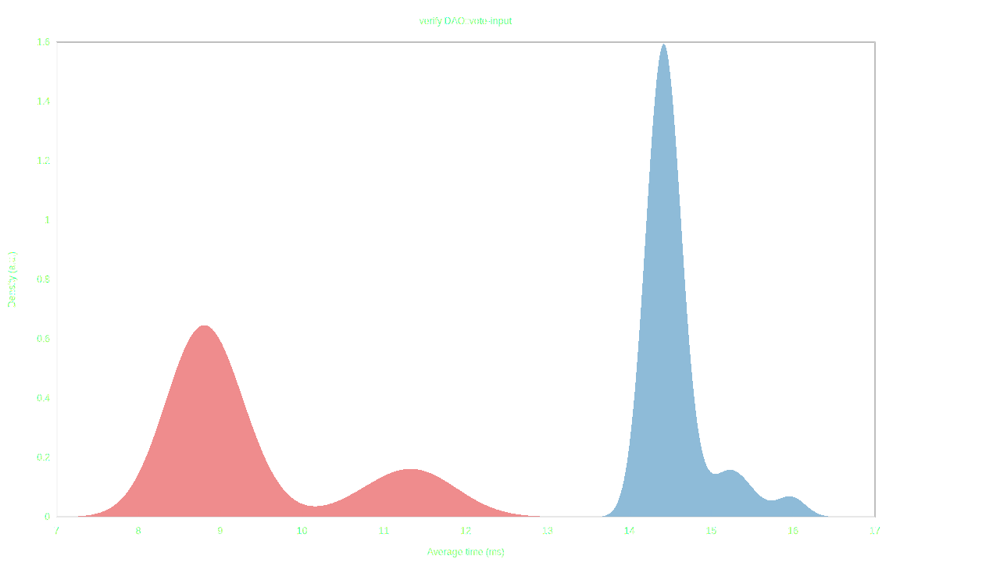
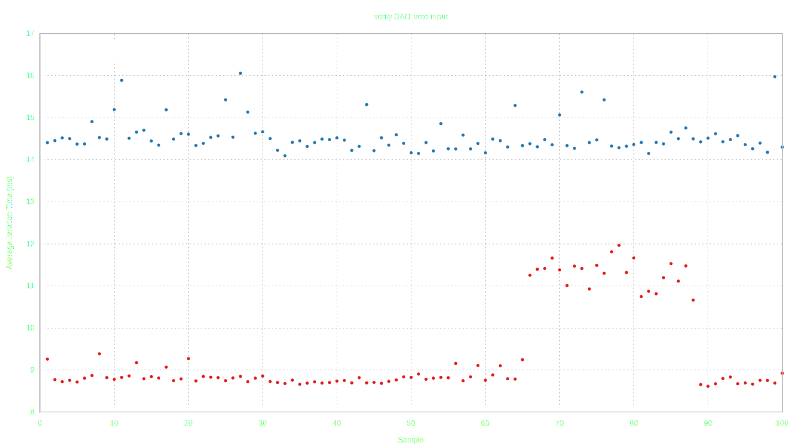
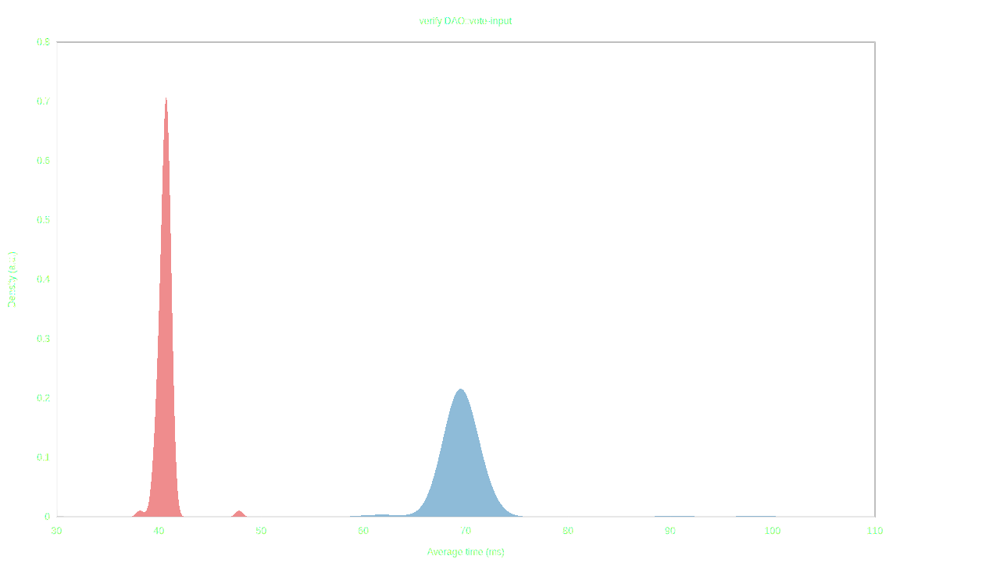
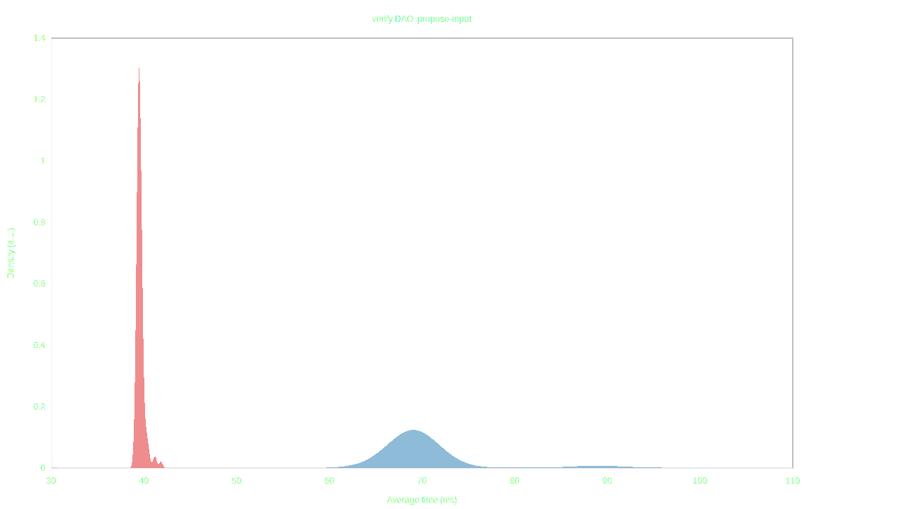
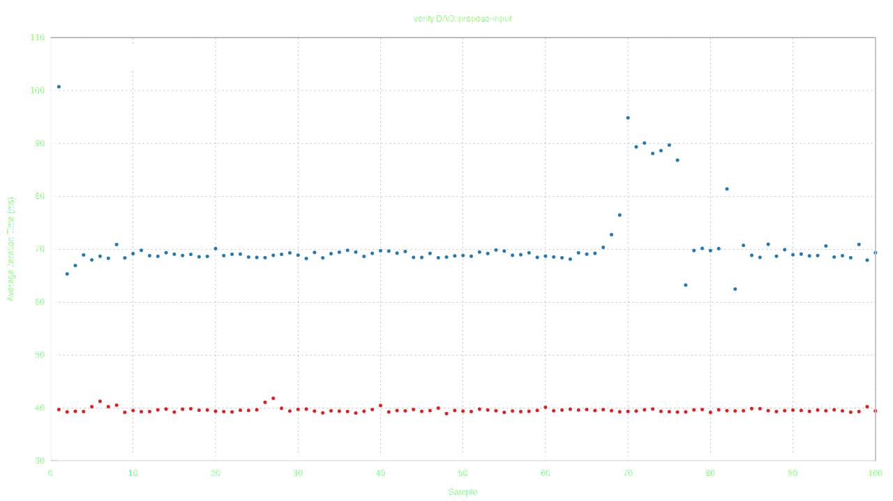
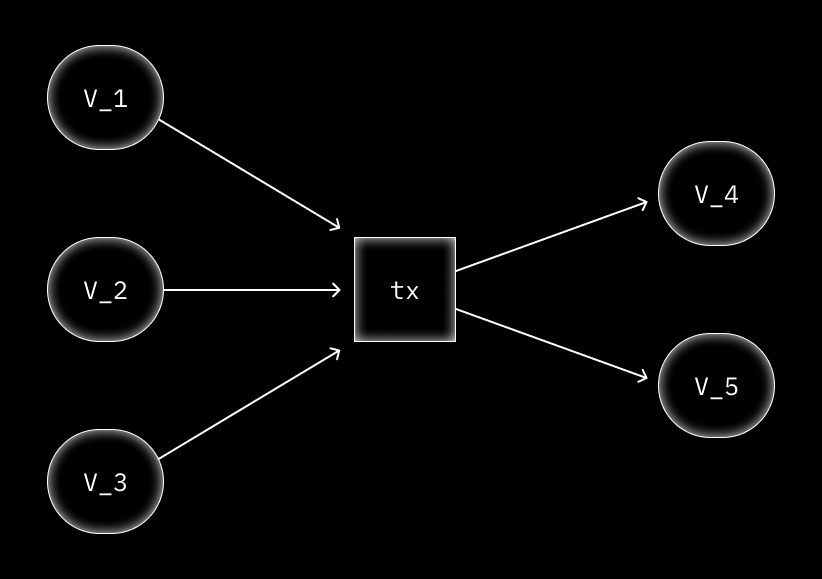
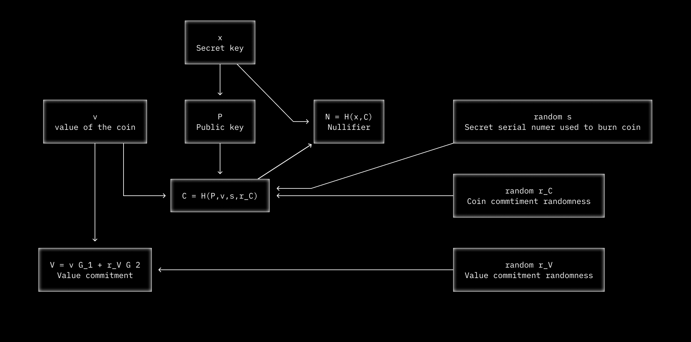

DarkFi

About DarkFi
DarkFi is a new Layer 1 blockchain, designed with anonymity at the forefront. It offers flexible private primitives that can be wielded to create any kind of application. DarkFi aims to make anonymous engineering highly accessible to developers.
DarkFi uses advances in zero-knowledge cryptography and includes a contracting language and developer toolkits to create uncensorable code.
In the open air of a fully dark, anonymous system, cryptocurrency has the potential to birth new technological concepts centered around sovereignty. This can be a creative, regenerative space - the dawn of a Dark Renaissance.
Connect to DarkFi IRC
Follow the installation instructions for the P2P IRC daemon.
Build
This project requires the Rust compiler to be installed. Please visit Rustup for instructions.
You have to install a native toolchain, which is set up during Rust installation, nightly toolchain and wasm32 target. To install nightly toolchain, execute:
% rustup toolchain install nightly
To install wasm32 target, execute:
% rustup target add wasm32-unknown-unknown
% rustup target add wasm32-unknown-unknown --toolchain nightly
Minimum Rust version supported is 1.77.0 (nightly).
The following dependencies are also required:
| Dependency | Debian-based |
|---|---|
| git | git |
| make | make |
| gcc | gcc |
| pkg-config | pkg-config |
| alsa-lib | libasound2-dev |
| openssl | libssl-dev |
| sqlcipher | libsqlcipher-dev |
| wabt | wabt |
Users of Debian-based systems (e.g. Ubuntu) can simply run the following to install the required dependencies:
# apt-get update
# apt-get install -y git make gcc pkg-config libasound2-dev libssl-dev libsqlcipher-dev wabt
Alternatively, users can try using the automated script under contrib
folder by executing:
% sh contrib/dependency_setup.sh
The script will try to recognize which system you are running, and install dependencies accordingly. In case it does not find your package manager, please consider adding support for it into the script and sending a patch.
To build the necessary binaries, we can just clone the repo, checkout to the latest tag, and use the provided Makefile to build the project:
% git clone https://github.com/darkrenaissance/darkfi
% cd darkfi && git checkout v0.4.1
% make
Development
If you want to hack on the source code, make sure to read some introductory advice in the DarkFi book.
Living on the cutting edge
Since the project uses the nightly toolchain, breaking changes are bound to happen from time to time. As a workaround, we can configure an older nightly version, which was known to work:
% rustup toolchain install nightly-2024-02-01
% rustup target add wasm32-unknown-unknown --toolchain nightly-2024-02-01
Now we can use that toolchain in make directly:
% make CARGO="cargo +nightly-2024-04-05" {target}
Or, if we are lazy, we can modify the Makefile to always use that:
% sed -i Makefile -e "s|nightly|nightly-2024-02-01|g"
Under no circumstances commit or push the Makefile change.
When using cargo directly, you have to add the +nightly-2024-02-01 flag,
in order for it to use the older nightly version.
Install
This will install the binaries on your system (/usr/local by
default). The configuration files for the binaries are bundled with the
binaries and contain sane defaults. You'll have to run each daemon once
in order for them to spawn a config file, which you can then review.
# make install
Examples and usage
See the DarkFi book
Go Dark
Let's liberate people from the claws of big tech and create the democratic paradigm of technology.
Self-defense is integral to any organism's survival and growth.
Power to the minuteman.
Start Here
Directory Structure
DarkFi broadly follows the standardized unix directory structure.
- All bundled applications are contained in
bin/subdirectory. - Random scripts and helpers such as build artifacts, node deployment
or syntax highlighting is in
contrib/. - Documentation is in
doc/. - Example codes are in
example/. - Script utilities are in
script/. See also the largescript/research/subdir. - All core code is contained in
src/. See Architecture Overview for a detailed description.- The
src/sdk/crate is used by WASM contracts and core code. It contains essential primitives and code shared between them. src/serial/is a crate containing the binary serialization code, which is the same as used by Bitcoin.src/contract/contains our native bundled contracts. It's worth looking at these to familiarize yourself with what contracts on DarkFi are like.
- The
Using DarkFi
Refer to the main README file for instructions on how to install Rust and necessary deps.
Then proceed to the Running a Node guide.
Join the Community
Although we have a Telegram, we don't believe in centralized proprietary apps, and our core community organizes through our own fully anonymous p2p chat system which has support for Nym and Tor.
Every Monday at 16:00 CET in #dev we have our main project meeting.
See the guide on darkirc for instructions on joining.
Contributing as a Dev
Check out the contributor's guide for where to find tasks and submitting patches to the project.
If you're not a dev but wish to learn then take a look at the agorism hackers study guide.
Lastly familiarize yourself with the project architecture. The book also contains a cryptography section with a helpful ZK explainer.
DarkFi also has a project spec and a DEP (Drk Enhancement Proposals) system.
Detailed Overview
Source code is under src/ subdirectory. Main interesting modules are:
net/is our own p2p network. There are sessions such as incoming or outgoing that have channels (connections). Protocols are attached to channels depending on the session. The p2p network is also multi-transport with support for TCP (+TLS), Tor and Nym. So you can access the p2p fully anonymously (network level privacy).event_graph/which is a DAG sync protocol used for ensuring eventual consistency of data, such as with chat systems (you don't drop any messages).runtime/is the WASM smart contract engine. We separate computation into several stages which is checks-effects-interactions paradigm in solidity but enforced in the smart contract explicitly. For example in theexec()phase, you can only read, whereas writes must occur in theapply(update)phase.blockchain/andvalidator/is the blockchain and consensus algos.zk/is the ZK VM, which is simply loads bytecode which is used to build the circuits. It's a very simple model rather than the TinyRAM computation models. We opted for this because we prefer simplicity in systems design.sdk/contains a crypto SDK usable in smart contracts and applications. There are also Python bindings here, useful for making utilities or small apps.serial/contains our own serialization because we don't trust rust serialization libs like serde (recently confirmed when they start bundling binaries). We also have async serialization and deserialization which is good for network code.tx/is the tx we use. Note signatures are not in the calldata as having this outside it allows more efficient verification (since you can do it in parallel and so on).- All darkfi calls are precomputed ahead of time which is needed for ZK. Normally in eth or other smart contract chains, the calldata is calculated where the function is invoked. Whereas in darkfi the entire callgraph and calldata is bundled since ZK proofs must be computed ahead of time. This also improves things like static analysis and security (limiting call depth is easy to check before verification).
- Verifying sigs or call depth ahead of time helps make the chain more attack resistant.
contract/contains our native smart contracts. Namely:money, which is multi-asset anonymous transfers, anonymous swaps and token issuance. The token issuance is programmatic. When creating a token, it commits to a smart contract which specifies how the token is allowed to be issued.deployfor deploying smart contracts.dao, which is a fully anonymous DAO. All the DAOs on chain are anonymous, including the amounts and activity of the treasury. All participants are anonymous, proposals are anonymous and votes are anonymous including the token weighted vote amount, and user identity. You cannot see who is in the DAO.
NOTE: we try to minimize external dependencies in our code as much as possible. We even try to limit dependencies within submodules.
Inside bin/ contains utilities and applications:
darkfid/is the daemon anddrk/is the wallet. Currently being updated to the new testnet (if you see the commit log last few days).dnet/is a viewer to see the p2p traffic of nodes, anddeg/is a viewer for the event graph data. We use these as debugging and monitoring tools.dhtd/is a distributed hash table, like IPFS, for transferring static data and large files around. Currently just a prototype but we'll use this later for images in the chat or other static content like seller pages on the marketplace.tau/is an anon p2p task manager which we use. We don't use github issues, and seek to minimize our dependence on centralized services. Eventually we want to be fully p2p and attack resistant.darkirc/is our main community chat. It uses RLN; you stake money and if you post twice in an epoch then you get slashed which prevents spam. There is a free tier. It uses theevent_graphfor synchronizing the history. You can attach any IRC frontend to use it rn. Later we'll make our own UI.zkas/is our ZK compiler.zkrunner/contains our ZK debugger (runzkrunnerwith--trace), andzkrenderwhich renders a graphic of the circuit layout.lilith/is a universal seed node. Eventually we will add swarming support to our p2p network which is an easy addon.
Lastly worth taking a look is script/research/ and script/research/zk/ which contains impls of most major ZK algos. bench/ contains benchmarks.
script/escrow.sage is a utility for doing escrow. We'll integrate it in the wallet later, but it works for now.
We could say more on our design philosophy of simplicity oriented approach to systems dev, but I'll drop these links here for now:
- Suckless Philosophy: software that sucks less
- How to Design Perfect (Software) Products by Pieter Hintjens
Recent crypto code audit: ZK Security DarkFi Code Audit
Useful link on our ZK toolchain
For proof files, see proof/ and src/contract/*/proof/ subdirs.
DarkFi Philosophy
State Civilization and the Democratic Nation
State civilization has a 5000 year history. The origin of civilizations in mesopotamia experienced a cambrian explosion of various forms. The legacy of state civilization can be traced back to ancient assyria which was essentially a military dictatorship that mobilized all of society's resources to wage war and defeat other civilizations, enslaving them and seizing their wealth.
Wikipedia defines civilization:
Civilizations are organized densely-populated settlements divided into hierarchical social classes with a ruling elite and subordinate urban and rural populations.
Civilization concentrates power, extending human control over the rest of nature, including over other human beings.
However this destiny of civilization was not inherent as history teaches us. This definition is one particular mode of civilization that became prevalent. During human history there has been a plethora of forms of civilizations. Our role as revolutionaries is to reconstruct the civilizational paradigm.
The democratic nation is synonymous with society, and produces all value including that which the state extracts. Creative enterprise and wealth production originates in society from small scale business, artisans and inventors, and anybody driven by intent or ambition to create works.
Within society, there are multiple coexisting nations which are communities of people sharing language, history, ethnicity or culture. For example there could be a nation based on spiritual belief, a nation of women, or a distinct cultural nation.
The nation state is an extreme variant of the state civilization tendency. Like early state civilizations, the development of the French nation-state was more effective at seizing the wealth of society to mobilize in war against the existing empires of the time.
Soon after, the remaining systems were forced to adopt the nation state system, including its ideology of nationalism. It is no mistake that the nation state tends towards nationalism and fascism including the worst genocides in human history. Nationalism is a blind religion supplanting religious ideologies weakened by secularism. However nationalism is separate from patriotism.
Loving one's country for which you have struggled and fought over for centuries or even millenia as an ethnic community or nation, which you have made your homeland in this long struggle, represents a sacred value.
~ Ocalan's "PKK and Kurdish Question in the 21st century"
Defining the State
The state is a centralized organization that imposes and enforces rules over a population through the monopoly on the legitimate use of violence. In discussing the rise of militarism, Ocalan says:
Essentially, he attempted to establish his authority over two key groups: the hunters at his side and the women he was trying to confine to the home. Along the way, as shamans (proto-priests) and gerontocratic elements (groups of elders) joined the crafty strongman, the first hierarchical authority was formed in many societies in various forms.
Section called "Society’s Militarism Problem" from "The Sociology of Freedom"
The state is defined as:
- Ideological hegemony represented by a system of priests and shamans in pre-state formations. Today this is the media industry, schools, and big tech (for example "fake news" and surveillance systems).
- Monopolization on the use of violence through military and police. Powerful commanders like Gilgamesh conquered neighbouring tribes, creating nascent state polities whose main business model was to hunt and enslave barbarian tribes. This enabled state to expand agricultural output which they seized through taxation.
- State bureaucracy and administration represented in tribal societies and proto-states through a council of elders. This arm of the state also includes scientific research institutes, state psychology groups and various forms of manipulation including modern AI and data harvesting. This tendency is a misappropriation of scientific methods to serve power, thus retarding scientific and technological development and impoverishing society by depriving it of its great benefits.
The state is a parasite on society, extracting value created. There are many historical stateless societies such as the Medean Confederation, the Iroquiois Confederation, the ninja republics of Iga and Kōga, the Swiss pre-Sonderbund Confederation Helvetica, and Cossack society.
Government is a system or people administrating a society. Although most governments are nation-states, we can create stateless societies with autonomous governments. Within a free society government is local, broadly democratic, and autonomous. Society is widely engaged at every level in decision making through local people's councils, as well as possessing the use of violence through a system of gun ownership and local militias. Government also answers to a network of various interest groups from various nations such as women or youth.
Modernity and the Subject of Ideology
Modernity was born in the "age of reason" and represents the overturning of prevailing religious ideas and rejection of tradition in favour of secularization. Modernity has a mixed legacy which includes alienation, commodity fetishism, scientific positivism, and rationalism.
During this period of modernity 4 major ideologies developed, each with their own specific subject as its focus.
- Liberalism and its subject of the individual. Individuals are atomic units existing under the state system which guarantees them certain bargains in the form of laws and rights.
- Communism which focused on the concept of class warfare and economic justice through state power.
- Fascism which put the volk or state at the center of society, whereby all resources would be mobilized to serve the state.
- Anarchism with its critiques of power and favouring social freedom.
The particular form of modernity that is predominant can be characterized as capitalist modernity. Capitalism, otherwise referred to by others as corporatism can be likened to a religion, whereby a particular elite class having no ideology except self profit uses the means of the state to protect its own interests and extract the wealth of society through nefarious means. In some ways, it is a parasite on the state.
Agorist free markets is the democratic tendency of economy. The word 'economy' derives from the Ancient Greek 'oikonomos' which means household management. Economy was, during ancient periods, connected with nature, the role of motherhood, life, and freedom. It was believed that wealth was derived from the quality of our lived environments. The Kurds use the feminine word 'mal' to refer to the house, while the masculine variant refers to actual property. Later during the Roman period, economy came to be understood as the accumulation of property in the form of number of slaves owned, amount of land seized, or the quantity of money.
The subject of our ideology is the moral and political society. Society exists within a framework of morality and politics. Here we use politics to refer not to red team vs blue team, but instead all social activity concerned with our security, necessity, and life. A society can only be free when it has its own morality and politics. The state seeks to keep society weak by depriving it of morality and replacing society's politics with statecraft.
The Extinction of Humanity
During the 20th century, liberals, communists, and fascists vyed for state power each promising a new form of society. State power existed with these external ideological justifications.
With the end of the Soviet Union, and the end of history (according to liberalism), state power morphed into pure domination and profit. The system simply became a managerial form of raw power over society without purpose or aim. Wars such as the Iraq War were invented by neoliberals to breathe a new purpose into society. Indeed, there is no more effective means to support despotism than war.
Today the military industrial complex has grown into a gigantic leviathan that threatens the world driving economies into an ever greater spiral of desperation. The push for the development of automated weapons, aerial drones, and ninja missiles that eliminate all space for human resistance against tyranny.
Meanwhile social credit scoring is being introduced as CBDCs with incentivization schemes such as UBI. Such systems will give more effective means for the seizure of wealth by the state from society, centralizing economic power within an already deeply corrupt elite class.
Liberal ideologies have made people indifferent to their own situation, turning society inward and focused on social media, unable to organize together to oppose rising authoritarianism. Liberalism is essentially a tendency towards extinction or death.
Nature, Life, Freedom
Nature is the center of spiritual belief. Humanity is an aspect of nature. Nature is more than the number of trees. It is the going up, the ascending of life. Through struggle, we overcome obstacles, becoming harder and stronger along the way. This growth makes us more human and closer with nature.
People naturally feel an empathy with nature such as when an animal is injured or generous feelings towards the young of any species. This feeling was put in us by evolution. We feel an attachment and empathy towards our lived environment and want to see it improve. This feeling is mother nature speaking through us. The more in touch we are with this deeper feeling, the more free we are since we are able to develop as higher human beings.
Freedom does not mean the ability to be without constraint or enact any wild fantasy at a moment's notice. Freedom means direct conscious action with power that drives us to ascend. Nature is full of interwoven threads of organisms vying for influence or power, with time doing an ordered dance punctuated by inflection points of change. It is during these moments that our ability of foresight and prescience allows us to deeply affect events along alternative trajectories.
Re-Evaluating Anarchism
Anarchists had the correct critique & analysis of power. In particular seeing that the nation state would grow into a monster that would consume society. However they were the least equipped of all the other ideologies during modernity to enact their vision and put their ideas into practice.
- They fell victim to the same positivist forces that they claimed to be fighting against.
- They lacked a coherent vision and had little strategy or roadmap for how the revolution would happen.
- Their utopian demand that the state must be eliminated immediately and at all costs meant they were not able to plan how that would happen.
- Their opposition to all forms of authority, even legitimate leadership, meant they were ineffective at organizing revolutionary forces.
Revolutionary Objectives
- Our movement is primarily a spiritual one. One cannot understand Christianity by studying its system of churches, since primarily it is a body of teachings. Likewise, the core of our movement is in our philosophy, ideas, and concepts, which then inform our ideas on governance and economics.
- We must build a strong intellectual fabric that inoculates us and fosters resilience, as well as equipping us with the means to be effective in our work.
- There are two legacies in technology, one informed by state civilization and the other by society. The technology we create is to solve problems that society and aligned communities have.
Definition of Democratic Civilization
From 'The Sociology of Freedom: Manifesto of the Democratic Civilization, Volume 3' by Abdullah Ocalan.
Annotations are our own. The text is otherwise unchanged.
What is the subject of moral and political society?
The school of social science that postulates the examination of the existence and development of social nature on the basis of moral and political society could be defined as the democratic civilization system. The various schools of social science base their analyses on different units. Theology and religion prioritize society. For scientific socialism, it is class. The fundamental unit for liberalism is the individual. There are, of course, schools that prioritize power and the state and others that focus on civilization. All these unit-based approaches must be criticized, because, as I have frequently pointed out, they are not historical, and they fail to address the totality. A meaningful examination would have to focus on what is crucial from the point of view of society, both in terms of history and actuality. Otherwise, the result will only be one more discourse.
Identifying our fundamental unit as moral and political society is significant, because it also covers the dimensions of historicity and totality. Moral and political society is the most historical and holistic expression of society. Morals and politics themselves can be understood as history. A society that has a moral and political dimension is a society that is the closest to the totality of all its existence and development. A society can exist without the state, class, exploitation, the city, power, or the nation, but a society devoid of morals and politics is unthinkable. Societies may exist as colonies of other powers, particularly capital and state monopolies, and as sources of raw materials. In those cases, however, we are talking about the legacy of a society that has ceased to be.
Individualism is a state of war
There is nothing gained by labeling moral and political society—the natural state of society—as slave-owning, feudal, capitalist, or socialist. Using such labels to describe society masks reality and reduces society to its components (class, economy, and monopoly). The bottleneck encountered in discourses based on such concepts as regards the theory and practice of social development stems from errors and inadequacies inherent in them. If all of the analyses of society referred to with these labels that are closer to historical materialism have fallen into this situation, it is clear that discourses with much weaker scientific bases will be in a much worse situation. Religious discourses, meanwhile, focus heavily on the importance of morals but have long since turned politics over to the state. Bourgeois liberal approaches not only obscure the society with moral and political dimensions, but when the opportunity presents itself they do not hesitate to wage war on this society. Individualism is a state of war against society to the same degree as power and the state is. Liberalism essentially prepares society, which is weakened by being deprived of its morals and politics, for all kinds of attacks by individualism. Liberalism is the ideology and practice that is most anti-society.
The rise of scientific positivism
In Western sociology (there is still no science called Eastern sociology) concepts such as society and civilization system are quite problematic. We should not forget that the need for sociology stemmed from the need to find solutions to the huge problems of crises, contradictions, and conflicts and war caused by capital and power monopolies. Every branch of sociology developed its own thesis about how to maintain order and make life more livable. Despite all the sectarian, theological, and reformist interpretations of the teachings of Christianity, as social problems deepened, interpretations based on a scientific (positivist) point of view came to the fore. The philosophical revolution and the Enlightenment (seventeenth and eighteenth centuries) were essentially the result of this need. When the French Revolution complicated society’s problems rather than solving them, there was a marked increase in the tendency to develop sociology as an independent science. Utopian socialists (Henri de Saint-Simon, Charles Fourier, and Pierre-Joseph Proudhon), together with Auguste Comte and Émile Durkheim, represent the preliminary steps in this direction. All of them are children of the Enlightenment, with unlimited faith in science. They believed they could use science to re-create society as they wished. They were playing God. In Hegel’s words, God had descended to earth and, what’s more, in the form of the nation-state. What needed to be done was to plan and develop specific and sophisticated “social engineering” projects. There was no project or plan that could not be achieved by the nation-state if it so desired, as long as it embraced the “scientific positivism” and was accepted by the nation-state!
Capitalism as an iron cage
British social scientists (political economists) added economic solutions to French sociology, while German ideologists contributed philosophically. Adam Smith and Hegel in particular made major contributions. There was a wide variety of prescriptions from both the left and right to address the problems arising from the horrendous abuse of the society by the nineteenth-century industrial capitalism. Liberalism, the central ideology of the capitalist monopoly has a totally eclectic approach, taking advantage of any and all ideas, and is the most practical when it comes to creating almost patchwork-like systems. It was as if the right- and left- wing schematic sociologies were unaware of social nature, history, and the present while developing their projects in relation to the past (the quest for the “golden age” by the right) or the future (utopian society). Their systems would continually fragment when they encountered history or current life. The reality that had imprisoned them all was the “iron cage” that capitalist modernity had slowly cast and sealed them in, intellectually and in their practical way of life. However, Friedrich Nietzsche’s ideas of metaphysicians of positivism or castrated dwarfs of capitalist modernity bring us a lot closer to the social truth. Nietzsche leads the pack of rare philosophers who first drew attention to the risk of society being swallowed up by capitalist modernity. Although he is accused of serving fascism with his thoughts, his foretelling of the onset of fascism and world wars was quite enticing.
The increase in major crises and world wars, along with the division of the liberal center into right- and left-wing branches, was enough to bankrupt positivist sociology. In spite of its widespread criticism of metaphysics, social engineering has revealed its true identity with authoritarian and totalitarian fascism as metaphysics at its shallowest. The Frankfurt School is the official testimonial of this bankruptcy. The École Annales and the 1968 youth uprising led to various postmodernist sociological approaches, in particular Immanuel Wallerstein’s capitalist world-system analysis. Tendencies like ecology, feminism, relativism, the New Left, and world-system analysis launched a period during which the social sciences splintered. Obviously, financial capital gaining hegemony as the 1970s faded also played an important role. The upside of these developments was the collapse of the hegemony of Eurocentric thought. The downside, however, was the drawbacks of a highly fragmented social sciences.
The problems of Eurocentric sociology
Let’s summarize the criticism of Eurocentric sociology:
-
Positivism, which criticized and denounced both religion and metaphysics, has not escaped being a kind of religion and metaphysics in its own right. This should not come as a surprise. Human culture requires metaphysics. The issue is to distinguish good from bad metaphysics.
-
An understanding of society based on dichotomies like primitive vs. modern, capitalist vs. socialist, industrial vs. agrarian, progressive vs. reactionary, divided by class vs. classless, or with a state vs. stateless prevents the development of a definition that comes closer to the truth of social nature. Dichotomies of this sort distance us from social truth.
-
To re-create society is to play the modern god. More precisely, each time society is recreated there is a tendency to form a new capital and power-state monopoly. Much like medieval theism was ideologically connected to absolute monarchies (sultanates and shāhanshāhs), modern social engineering as recreation is essentially the divine disposition and ideology of the nation-state. Positivism in this regard is modern theism.
-
Revolutions cannot be interpreted as the re-creation acts of society. When thusly understood they cannot escape positivist theism. Revolutions can only be defined as social revolutions to the extent that they free society from excessive burden of capital and power.
-
The task of revolutionaries cannot be defined as creating any social model of their making but more correctly as playing a role in contributing to the development of moral and political society.
-
Methods and paradigms to be applied to social nature should not be identical to those that relate to first nature. While the universalist approach to first nature provides results that come closer to the truth (I don’t believe there is an absolute truth), relativism in relation to social nature may get us closer to the truth. The universe can neither be explained by an infinite universalist linear discourse or by a concept of infinite similar circular cycles.
-
A social regime of truth needs to be reorganized on the basis of these and many other criticisms. Obviously, I am not talking about a new divine creation, but I do believe that the greatest feature of the human mind is the power to search for and build truth.
A new social science
In light of these criticisms, I offer the following suggestions in relation to the social science system that I want to define:
A more humane social nature
-
I would not present social nature as a rigid universalist truth with mythological, religious, metaphysical, and scientific (positivist) patterns. Understanding it to be the most flexible form of basic universal entities that encompass a wealth of diversities but are tied down to conditions of historical time and location more closely approaches the truth. Any analysis, social science, or attempt to make practical change without adequate knowledge of the qualities of social nature may well backfire. The monotheistic religions and positivism, which have appeared throughout the history of civilization claiming to have found the solution, were unable to prevent capital and power monopolies from gaining control. It is therefore their irrevocable task, if they are to contribute to moral and political society, to develop a more humane analysis based on a profound self-criticism.
-
Moral and political society is the main element that gives social nature its historical and complete meaning and represents the unity in diversity that is basic to its existence. It is the definition of moral and political society that gives social nature its character, maintains its unity in diversity, and plays a decisive role in expressing its main totality and historicity. The descriptors commonly used to define society, such as primitive, modern, slave-owning, feudal, capitalist, socialist, industrial, agricultural, commercial, monetary, statist, national, hegemonic, and so on, do not reflect the decisive features of social nature. On the contrary, they conceal and fragment its meaning. This, in turn, provides a base for faulty theoretical and practical approaches and actions related to society.
Protecting the social fabric
-
Statements about renewing and re-creating society are part of operations meant to constitute new capital and power monopolies in terms of their ideological content. The history of civilization, the history of such renewals, is the history of the cumulative accumulation of capital and power. Instead of divine creativity, the basic action the society needs most is to struggle against factors that prevent the development and functioning of moral and political social fabric. A society that operates its moral and political dimensions freely, is a society that will continue its development in the best way.
-
Revolutions are forms of social action resorted to when society is sternly prevented from freely exercising and maintaining its moral and political function. Revolutions can and should be accepted as legitimate by society only when they do not seek to create new societies, nations, or states but to restore moral and political society its ability to function freely.
-
Revolutionary heroism must find meaning through its contributions to moral and political society. Any action that does not have this meaning, regardless of its intent and duration, cannot be defined as revolutionary social heroism. What determines the role of individuals in society in a positive sense is their contribution to the development of moral and political society.
-
No social science that hopes to develop these key features through profound research and examination should be based on a universalist linear progressive approach or on a singular infinite cyclical relativity. In the final instance, instead of these dogmatic approaches that serve to legitimize the cumulative accumulation of capital and power throughout the history of civilization, social sciences based on a non-destructive dialectic methodology that harmonizes analytical and emotional intelligence and overcomes the strict subject-object mold should be developed.
The framework of moral and political society
The paradigmatic and empirical framework of moral and political society, the main unit of the democratic civilization system, can be presented through such hypotheses. Let me present its main aspects:
-
Moral and political society is the fundamental aspect of human society that must be continuously sought. Society is essentially moral and political.
-
Moral and political society is located at the opposite end of the spectrum from the civilization systems that emerged from the triad of city, class, and state (which had previously been hierarchical structures).
-
Moral and political society, as the history of social nature, develops in harmony with the democratic civilization system.
-
Moral and political society is the freest society. A functioning moral and political fabric and organs is the most decisive dynamic not only for freeing society but to keep it free. No revolution or its heroines and heroes can free the society to the degree that the development of a healthy moral and political dimension will. Moreover, revolution and its heroines and heroes can only play a decisive role to the degree that they contribute to moral and political society.
-
A moral and political society is a democratic society. Democracy is only meaningful on the basis of the existence of a moral and political society that is open and free. A democratic society where individuals and groups become subjects is the form of governance that best develops moral and political society. More precisely, we call a functioning political society a democracy. Politics and democracy are truly identical concepts. If freedom is the space within which politics expresses itself, then democracy is the way in which politics is exercised in this space. The triad of freedom, politics, and democracy cannot lack a moral basis. We could refer to morality as the institutionalized and traditional state of freedom, politics, and democracy.
-
Moral and political societies are in a dialectical contradiction with the state, which is the official expression of all forms of capital, property, and power. The state constantly tries to substitute law for morality and bureaucracy for politics. The official state civilization develops on one side of this historically ongoing contradiction, with the unofficial democratic civilization system developing on the other side. Two distinct typologies of meaning emerge. Contradictions may either grow more violent and lead to war or there may be reconciliation, leading to peace.
-
Peace is only possible if moral and political society forces and the state monopoly forces have the will to live side by side unarmed and with no killing. There have been instances when rather than society destroying the state or the state destroying society, a conditional peace called democratic reconciliation has been reached. History doesn’t take place either in the form of democratic civilization—as the expression of moral and political society—or totally in the form of civilization systems—as the expression of class and state society. History has unfolded as intense relationship rife with contradiction between the two, with successive periods of war and peace. It is quite utopian to think that this situation, with at least a five-thousand-year history, can be immediately resolved by emergency revolutions. At the same time, to embrace it as if it is fate and cannot be interfered with would also not be the correct moral and political approach. Knowing that struggles between systems will be protracted, it makes more sense and will prove more effective to adopt strategic and tactical approaches that expand the freedom and democracy sphere of moral and political society.
-
Defining moral and political society in terms of communal, slave-owning, feudal, capitalist, and socialist attributes serves to obscure rather than elucidate matters. Clearly, in a moral and political society there is no room for slave-owning, feudal, or capitalist forces, but, in the context of a principled reconciliation, it is possible to take an aloof approach to these forces, within limits and in a controlled manner. What’s important is that moral and political society should neither destroy them nor be swallowed up by them; the superiority of moral and political society should make it possible to continuously limit the reach and power of the central civilization system. Communal and socialist systems can identify with moral and political society insofar as they themselves are democratic. This identification is, however, not possible, if they have a state.
-
Moral and political society cannot seek to become a nation-state, establish an official religion, or construct a non-democratic regime. The right to determine the objectives and nature of society lies with the free will of all members of a moral and political society. Just as with current debates and decisions, strategic decisions are the purview of society’s moral and political will and expression. The essential thing is to have discussions and to become a decision-making power. A society who holds this power can determine its preferences in the soundest possible way. No individual or force has the authority to decide on behalf of moral and political society, and social engineering has no place in these societies.
Liberating democratic civilization from the State
When viewed in the light of the various broad definitions I have presented, it is obvious that the democratic civilization system—essentially the moral and political totality of social nature—has always existed and sustained itself as the flip side of the official history of civilization. Despite all the oppression and exploitation at the hands of the official world-system, the other face of society could not be destroyed. In fact, it is impossible to destroy it. Just as capitalism cannot sustain itself without noncapitalist society, civilization— the official world system— also cannot sustain itself without the democratic civilization system. More concretely the civilization with monopolies cannot sustain itself without the existence of a civilization without monopolies. The opposite is not true. Democratic civilization, representing the historical flow of the system of moral and political society, can sustain itself more comfortably and with fewer obstacles in the absence of the official civilization.
I define democratic civilization as a system of thought, the accumulation of thought, and the totality of moral rules and political organs. I am not only talking about a history of thought or the social reality within a given moral and political development. The discussion does, however, encompass both issues in an intertwined manner. I consider it important and necessary to explain the method in terms of democratic civilization’s history and elements, because this totality of alternate discourse and structures are prevented by the official civilization. I will address these issues in subsequent sections.
Recommended Books
Core Texts
- Manifesto for a Democratic Civilization parts 1, 2 & 3 by Ocalan. This are a good high level overview of history, philosophy and spiritualism talking about the 5000 year legacy of state civilization, the development of philosophy and humanity's relationship with nature.
- New Paradigm in Macroeconomics by Werner explains how economics and finance work on a fundamental level. Emphasizes the importance of economic networks in issuing credit, and goes through all the major economic schools of thought.
- Authoritarian vs Democratic Technics by Mumford is a short 10 page summary of his books The Myth of the Machine parts 1 & 2. Mumford was a historian and philosopher of science and technology. His books describe the two dominant legacies within technology; one enslaving humanity, and the other one liberating humanity from the state.
- GNU and Free Software texts
Philosophy
- The Story of Philosophy by Will Durant
- The Sovereign Individual is very popular among crypto people. Makes several prescient predictions including about cryptocurrency, algorithmic money and the response by nation states against this emeregent technology. Good reading to understand the coming conflict between cryptocurrency and states.
Python
- Python Crash Course by Eric Matthes. Good beginner text.
- O'Reilly books: Python Data Science, Python for Data Analysis
C
- The C Programming Language by K&R (2nd Edition ANSI C)
Rust
- The Rust Programming Language from No Starch Press. Good intro to learn Rust.
- Rust for Rustaceans from No Starch Press is an advanced Rust book.
Mathematics
Abstract Algebra
- Pinter is your fundamental algebra text. Everybody should study this book. My full solutions here.
- Basic Abstract Algebra by Dover is also a good reference.
- Algebra by Dummit & Foote. The best reference book you will use many times. Just buy it.
- Algebra by Serge Lang. More advanced algebra book but often contains material not found in the D&F book.
Elliptic Curves
- Washington is a standard text and takes a computational approach. The math is often quite obtuse because he avoids introducing advanced notation, instead keeping things often in algebra equations.
- Silverman is the best text but harder than Washington. The material however is rewarding.
Algebraic Geometry
- Ideals, Varieties and Algorithms by Cox, Little, O'Shea. They have a follow up advanced graduate text called Using Algebraic Geometry. It's the sequel book explaining things that were missing from the first text.
- Hartshorne is a famous text.
Commutative Algebra
- Atiyah-MacDonald. Many independent solution sheets online if you search for them. Or ask me ;)
Algebraic Number Theory
- Algebraic Number Theory by Frazer Jarvis, chapters 1-5 (~100 pages) is your primary text. Book is ideal for self study since it has solutions for exercises.
- Introductory Algebraic Number Theory by Alaca and Williams is a bit dry but a good supplementary reference text.
- Elementary Number Theory by Jones and Jones, is a short text recommended in the preface to the Jarvis book.
- Algebraic Number Theory by Milne, are course notes written which are clear and concise.
- Short Algebraic Number Theory course, see also the lecture notes.
- Cohen book on computational number theory is a gold mine of standard algos.
- LaVeque Fundamentals of Number Theory
Cryptography
ZK
- Proofs, Arguments, and Zero-Knowledge by Justin Thaler.
Miscellaneous
- Cryptoeconomics by Eric Voskuil.
Compiling and Running a Node
Since this is still an early phase, we will not be installing any of the software system-wide. Instead, we'll be running all the commands from the git repository, so we're able to easily pull any necessary updates.
Compiling
Refer to the main README file for instructions on how to install Rust and necessary deps.
Once you have the repository in place, and everything is installed, we
can compile the darkfid node and the drk wallet CLI:
$ make darkfid drk
This process will now compile the node and the wallet CLI tool.
When finished, we can begin using the network. Run darkfid once so
that it spawns its config file on your system. This config file will
be used by darkfid in order to configure itself. The defaults are
already preset for using the testnet network.
$ ./darkfid
Config file created in "~/.config/darkfi/darkfid_config.toml". Please review it and try again.
Running
Once that's in place, you can run it again and darkfid will start,
create the necessary keys for validation of blocks and transactions, and
begin syncing the blockchain. Keep it running, and you should see a
Blockchain is synced! message after some time.
$ ./darkfid
Now it's time to initialize your wallet. For this we use a separate wallet CLI which is created to interface with the smart contract used for payments and swaps.
We simply have to initialize a wallet, and create a keypair:
$ ./drk wallet --initialize
$ ./drk wallet --keygen
The second command will print out your new DarkFi address where you can receive payments. Take note of it. Alternatively, you can always retrieve it using:
$ ./drk wallet --address
In order to receive incoming coins, you'll need to use the drk
tool to subscribe on darkfid so you can receive notifications for
incoming blocks. The blocks have to be scanned for transactions,
and to find coins that are intended for you. In another terminal,
you can run the following commands to first scan the blockchain,
and then to subscribe to new blocks:
$ ./drk scan
$ ./drk subscribe
Now you can leave the subscriber running. In case you stop it, just
run drk scan again until the chain is fully scanned, and then you
should be able to subscribe again.
Local Deployment
For development we recommend running master. First we modify the constants specifically for a local testnet. This step is optional but you might find scanning takes a long time otherwise.
cd contrib/localnet/darkfid-single-node/
./tmux_sessions.sh now
cd ../../../
make darkfid
You can run a single consensus full node using this command:
./tmux_sessions.sh -v
Advanced Usage
To run a node in full debug mode:
LOG_TARGETS="\!sled,\!net" ./darkfid -v | tee /tmp/darkfid.log
The sled and net targets are very noisy and slow down the node so
we disable those.
We can now view the log, and grep through it.
tail -n +0 -f /tmp/darkfid.log | grep -a --line-buffered -v DEBUG
Airdrops
Now you have your wallet set up. Let's proceed with getting some tokens from the faucet. The testnet has a running faucet which is able to airdrop native network tokens.
So let's airdrop some of these into our wallet:
$ ./drk airdrop 42.69
There is a limit of 100 for testnet airdrops currently.
Note: you have to wait some minutes between airdrops since they're rate-limited.
On success, you should see a transaction ID. If successful,
the airdrop transactions will now be in the consensus' mempool,
waiting for inclusion in the next block. Depending on the network,
finalization of the blocks could take some time. You'll have to wait
for this to happen. If your drk subscribe blocks is running, then after
some time your balance should be in your wallet.
You can check your wallet balance using drk:
$ ./drk wallet --balance
Aliases
To make our life easier, we can create token ID aliases, so when we are performing transactions with them, we can use that instead of the full token ID. Multiple aliases per token ID are supported.
Example addition:
$ ./drk alias add {ALIAS} {TOKEN}
So let's add the native token as DARK by executing:
$ ./drk alias add DARK 12ea8e3KVuBhmSnr29iV34Zd2RsD1MEeGk9xJhcipUqx
From now on, we can use DARK to refer to the native token when
executing transactions using it.
We can also list all our aliases using:
$ ./drk alias show
Note: these aliases are only local to your machine. When exchanging with other users, always verify that your aliases' token IDs match.
Minting tokens
On the DarkFi network, we're also able to mint custom tokens with some supply. To do this, we need to generate a mint authority keypair, and derive a token ID from it. We can simply do this by executing the following command:
$ ./drk token generate-mint
This will generate a new token mint authority and will tell you what your new token ID is. For this tutorial we will need two tokens so execute the command again to generate another one.
You can list your mint authorities with:
$ ./drk token list
Now let's add those two token IDs to our aliases:
$ ./drk alias add WCKD {TOKEN1}
$ ./drk alias add MLDY {TOKEN2}
Now let's mint some tokens for ourselves. First grab your wallet address, and then create the token mint transaction, and finally - broadcast it:
$ ./drk wallet --address
$ ./drk token mint WCKD 42.69 {YOUR_ADDRESS} > mint_tx
$ ./drk broadcast < mint_tx
$ ./drk token mint MLDY 20.0 {YOUR_ADDRESS} > mint_tx
$ ./drk broadcast < mint_tx
Now the transaction should be published to the network. If you have
an active block subscription (which you can do with drk subscribe blocks),
then when the transaction is finalized, your wallet should have your
new tokens listed when you request to see the balance.
Payments
Using the tokens we minted, we can make payments to other addresses.
Let's try to send some WCKD
tokens to 8sRwB7AwBTKEkyTW6oMyRoJWZhJwtqGTf7nyHwuJ74pj:
$ ./drk transfer 2.69 WCKD \
8sRwB7AwBTKEkyTW6oMyRoJWZhJwtqGTf7nyHwuJ74pj > payment_tx
The above command will create a transfer transaction and place it into
the file called payment_tx. Then we can broadcast this transaction
to the network:
$ ./drk broadcast < payment_tx
On success we'll see a transaction ID. Now again the same finalization
process has to occur and 8sRwB7AwBTKEkyTW6oMyRoJWZhJwtqGTf7nyHwuJ74pj
will receive the tokens you've sent.

We can see the spent coin in our wallet.
$ ./drk wallet --coins
We have to wait until the next block to see our change balance reappear in our wallet.
$ ./drk wallet --balance
Atomic Swaps
In order to do an atomic swap with someone, you will first have to come
to a consensus on what tokens you wish to swap. For example purposes,
let's say you want to swap 40 WCKD (which is the balance you
should have left over after doing the payment from the previous page)
for your counterparty's 20 MLDY. For this tutorial the counterparty
is yourself.
To protect your anonymity from the counterparty, the swap can only send entire coins. To create a smaller coin denomination, send yourself the amount you want to swap. Then check you have a spendable coin to swap with:
$ ./drk wallet --coins
You'll have to initiate the swap and build your half of the swap tx:
$ ./drk otc init -v 40.0:20.0 -t WCKD:MLDY > half_swap
Then you can send this half_swap file to your counterparty and they
can create the other half by running:
$ ./drk otc join < half_swap > full_swap
They will sign the full_swap file and send it back to you. Finally, to make the swap transaction valid, you need to sign it as well, and broadcast it:
$ ./drk otc sign < full_swap > signed_swap
$ ./drk broadcast < signed_swap
On success, you should see a transaction ID. This transaction will now also be in the mempool, so you should wait again until it's finalized.

After a while you should see the change in balances in your wallet:
$ ./drk wallet --balance
If you see your counterparty's tokens, that means the swap was successful. In case you still see your old tokens, that could mean that the swap transaction has not yet been finalized.
DAO
On the testnet, we are also able to create an anonymous DAO. Using
the drk CLI tool, we have a dao subcommand that can perform the
necessary operations.
You can find a script in
contrib/localnet/darkfid-single-node/run-dao-test.sh which
automatically does all the commands in this tutorial. Just be sure
to read the comment at the top of the file first.
Let's create a DAO with the following parameters:
- Proposer limit:
20 - Quorum:
10 - Approval ratio:
0.67 - Governance token:
MLDY
You can see what these parameters mean with the help command.
$ ./drk help dao create
Let's create our DAO.
$ ./drk dao create 20 10 0.67 MLDY > dao.dat
$ ./drk dao view < dao.dat
The view command will show us the parameters. If everything looks fine, we can now import it into our wallet:
./drk dao import MiladyMakerDAO < dao.dat
./drk dao list
./drk dao list MiladyMakerDAO
Minting
If parameters are shown, this means the DAO was successfully imported
into our wallet. The DAO's index in our wallet is 1, so we'll use
that to reference it. Now we can create a transaction that will mint
the DAO on-chain, and broadcast it:
./drk dao mint MiladyMakerDAO > dao_mint_tx
./drk broadcast < dao_mint_tx
Now the transaction is broadcasted to the network. Wait for it to
finalize, and if your drk is subscribed, after finalization you
should see a leaf_position and a transaction ID when running
dao list MiladyMakerDAO.
Sending money to the treasury
Let's send some tokens to the DAO's treasury so we're able to make
a proposal to send those somewhere. First find the DAO bulla and the
DAO public key with dao list and then create a transfer transaction:
$ ./drk dao list MiladyMakerDAO
$ ./drk transfer 10 WCKD {DAO_PUBLIC_KEY} \
--dao {DAO_BULLA} > dao_transfer
$ ./drk broadcast < dao_transfer
Wait for it to finalize, and if subscribed, you should see the DAO receive the funds:
$ ./drk dao balance MiladyMakerDAO
Creating a proposal
Now that the DAO has something in its treasury, we can create a
proposal to send it somewhere. Let's send 5 of the 10 tokens to our
address (we can find that with drk wallet --address):
$ ./drk dao propose MiladyMakerDAO {YOUR_ADDRESS} 5 WCKD > proposal_tx
$ ./drk broadcast < proposal_tx
Once finalized and scanned, the proposal should be viewable in the
wallet. We can see this with the proposal subcommands:
$ ./drk dao proposals MiladyMakerDAO
$ ./drk dao proposal MiladyMakerDAO 1
Voting on a proposal
Now the DAO members are ready to cast their votes.
First lets check the dao vote subcommand usage.
$ drk help dao vote
Vote on a given proposal
Usage: drk dao vote <DAO_ALIAS> <PROPOSAL_ID> <VOTE> <VOTE_WEIGHT>
Arguments:
<DAO_ALIAS> Name or numeric identifier for the DAO
<PROPOSAL_ID> Numeric identifier for the proposal
<VOTE> Vote (0 for NO, 1 for YES)
<VOTE_WEIGHT> Vote weight (amount of governance tokens)
Lets use our 20 MLDY to vote yes to proposal 1.
$ drk dao vote MiladyMakerDAO 1 1 20 > /tmp/dao-vote.tx
$ drk broadcast < /tmp/dao-vote.tx
Executing the proposal
Once enough votes have been cast that meet the required minimum (quorum) and assuming the yes:no votes ratio is bigger than the approval ratio, then we are ready to finalize the vote. Any DAO member can perform this action.
$ drk dao exec MiladyMakerDAO 1 > /tmp/dao-exec.tx
$ drk broadcast < /tmp/dao-exec.tx
ircd: Strong Anonymity P2P Chat
In DarkFi, we organize our communication using resilient and
censorship-resistant infrastructure. For chatting, ircd is a
peer-to-peer implementation of an IRC server in which any user can
participate anonymously using any IRC frontend and by running the
IRC daemon. ircd uses the DarkFi P2P engine to synchronize chats
between hosts.
Benefits
- Encrypted using same algorithms as Signal.
- There are no identities. You cannot see who is in the chat.
- Completely anonymous. You can rename yourself easily by using the
command
/nick foo. This means all messages are unlinkable. - God-fearing based CLI without soy gui shit.
- p2p decentralized.
- Optionally run it over Tor or Nym for network level anonymity.
Therefore this is the world's most strongly anonymous chat in existence. Nothing else exists like it.
Installation
Follow the instructions in the README to ensure you have all the necessary dependencies.
% git clone https://github.com/darkrenaissance/darkfi.git
% cd darkfi && git checkout v0.4.1
% make ircd
Installation (Android)
This is for Android 64 bit (which is most phones).
- Setup Docker on your machine which may look like:
- Install docker and docker-buildx packages.
- Enable the docker daemon service.
- Add your user to the docker group and refresh the session
(either with
su -c $USERor logout/login).
- Run
cd bin/darkirc/ && make docker-android. The resulting file will be calleddarkirc.aarch64-android. Copy this to your phone. - Install Termux and RevolutionIRC on F-Droid.
- You can access the phone storage from
/sdcard/and copy the file into the Termux home. - Run
termux-wake-lock. This stops Android suspending the daemon. - Run the daemon. You can open new Termux sessions by swiping from the left to bring up the sidebar.
- Connect the RevolutionIRC frontend.
Logs
The public channels have logs available, and additionally there is a mirror on telegram @darkfi_darkirc channel. You can also message @darkirc_bot with "sub" to avoid doxxing your username. Use "unsub" to unsubscribe.
Usage (DarkFi Network)
Upon compiling ircd as described above, the preconfigured defaults
will allow you to connect to the network and start chatting with the
rest of the DarkFi community.
First, try to start ircd from your command-line so it can spawn its
configuration file in place. The preconfigured defaults will autojoin
you to several default channels one of which is #dev where we have
weekly meetings, and where the community is most active and talks
about DarkFi development.
% ./ircd
ircd will create a configuration file ircd_config.toml by
default in ~/.config/darkfi/ you can review and potentially edit. It
might be useful if you want to add other channels you want to autojoin
(like #philosophy and #memes), or if you want to set a shared
secret for some channel in order for it to be encrypted between its
participants.
When done, you can run ircd for the second time in order for it to
connect to the network and start participating in the P2P protocol:
% ./ircd
Clients
Weechat
In this section, we'll briefly cover how to use the Weechat IRC
client to connect and chat with
ircd.
Normally, you should be able to install weechat using your distribution's package manager. If not, have a look at the weechat git repository for instructions on how to install it on your computer.
Once installed, we can configure a new server which will represent our
ircd instance. First, start weechat, and in its window - run the
following commands (there is an assumption that irc_listen in the
ircd config file is set to 127.0.0.1:6667):
/server add darkfi localhost/6667 -notls -autoconnect
/save
/quit
This will set up the server, save the settings, and exit weechat. You are now ready to begin using the chat. Simply start weechat and everything should work.
When you join, you will not see any users displayed. This is normal since there is no concept of nicknames or registration on this p2p anonymous chat.
You can change your nickname using /nick foo, and navigate channels
using F5/F6 or ALT+X where X is the channel number displayed.
Channels can be moved around using /buffer move N where N is the new
position of the buffer in the list. Use /layout store to save the
current layout of the buffers.
Network-level privacy
Nodes have knowledge of their peers, including the IP addresses of connected hosts.
DarkFi supports the use of pluggable transports, including Tor and Nym,
to provide network-level privacy. As long as there are live seed nodes
configured to support a Tor or Nym connection, users can connect to
ircd and benefit from the protections offered by these protocols.
Other approaches include connecting via a cloud server or VPN. Research the risks involved in these methods before connecting.
Running a Fullnode
See the script script/run_node.sh for an example of how to deploy
a full node which does seed session synchronization, and accepts both
inbound and outbound connections.
Global Buffer
Copy this script
to ~/.weechat/python/autoload/, and you will create a single buffer
which aggregates messages from all channels. It's useful to monitor
activity from all channels without needing to look at each one individually.
Emojis
Install the noto fonts to have the full unicode set. Popular Linux distros
should have packages for them.
Once installed you can view all the emojis in your terminal. Note, you may need to regenerate your font cache (or just restart) after installing them.
Configuring a Private chat between users
Any two users on the ircd server can establish a fully encrypted
communication medium between each other using a basic keypair setup.
Configuring ircd_config.toml
ircd_config.toml should be created by default in ~/.config/darkfi/
when you first run ircd.
Generate a keypair using the following command:
% ircd --gen-keypair
This will generate a Public Key and a Private Key.
Save the Private key safely & add it to the ircd_config.toml file as shown below.
[private_key.”your_private_key_goes_here”]
To share your Public Key with a user over ircd you can use one of the
public channels or via an external app like Signal, as plaintext DMs
are disabled in ircd.
Note: If you use the ircd's public channel, your
message will be publically visible on the IRC chat.
See the example ircd_config.toml for more details
Example
Lets start by configuring our contacts list in the generated
ircd_config.toml file (you can also refer to the examples written
in the comments of the toml file), let's assume alice and bob want to
privately chat after they have each other's public keys:
Alice would add bob to her contact list in her own config file:
[contact.”bob”]
contact_pubkey = “D6UzKA6qCG5Mep16i6pJYkUCQcnp46E1jPBsUhyJiXhb”
And Bob would do the same:
[contact.”alice”]
contact_pubkey = “9sfMEVLphJ4dTX3SEvm6NBhTbWDqfsxu7R2bo88CtV8g”
Lets see an Example where 'alice' sends “Hi” message to 'bob' using the /msg command
/msg bob Hi
Note for Weechat Client Users:
When you private message someone as shown above, the buffer will not
pop in weechat client until you receive a reply from that person.
For example here 'alice' will not see any new buffer on her irc interface for the recent message which she just send to 'bob' until 'bob' replies, but 'bob' will get a buffer shown on his irc client with the message 'Hi'.
Reply from 'bob' to 'alice'
/msg alice welcome!
Or instead of /msg command, you can use:
/query bob hello
This works exactly the same as /msg except it will open a new buffer
with Bob in your client regardless.
Note: The contact name is not the irc nickname, it can be anything you want, and you should use it when DMing.
Note: It's always a good idea to save your keys somewhere safe, but in
case you lost your Public Key and you still have your Private key in
ircd_config.toml file, you recover the Public Key like so:
% ircd --recover-pubkey {your_private_key}
Ircd Local Deployment
These steps below are only for developers who wish to make a testing deployment. The previous sections are sufficient to join the chat.
Seed Node
First you must run a seed node. The seed node is a static host which
nodes can connect to when they first connect to the network. The
seed_session simply connects to a seed node and runs protocol_seed,
which requests a list of addresses from the seed node and disconnects
straight after receiving them.
The first time you run the program, a config file will be created in
~/.config/darkfi if you are using Linux or in
~/Library/Application Support/darkfi/ on MacOS.
You must specify an inbound accept address in your config file to configure a seed node:
## P2P accept addresses
inbound=["127.0.0.1:11001"]
Note that the above config doesn't specify an external address since the seed node shouldn't be advertised in the list of connectable nodes. The seed node does not participate as a normal node in the p2p network. It simply allows new nodes to discover other nodes in the network during the bootstrapping phase.
Inbound Node
This is a node accepting inbound connections on the network but which is not making any outbound connections.
The external addresses are important and must be correct.
To run an inbound node, your config file must contain the following info:
## P2P accept addresses
inbound=["127.0.0.1:11002"]
## P2P external addresses
external_addr=["127.0.0.1:11002"]
## Seed nodes to connect to
seeds=["127.0.0.1:11001"]
Outbound Node
This is a node which has 8 outbound connection slots and no inbound connections. This means the node has 8 slots which will actively search for unique nodes to connect to in the p2p network.
In your config file:
## Connection slots
outbound_connections=8
## Seed nodes to connect to
seeds=["127.0.0.1:11001"]
Attaching the IRC Frontend
Assuming you have run the above 3 commands to create a small model testnet, and both inbound and outbound nodes above are connected, you can test them out using weechat.
To create separate weechat instances, use the --dir command:
weechat --dir /tmp/a/
weechat --dir /tmp/b/
Then in both clients, you must set the option to connect to temporary servers:
/set irc.look.temporary_servers on
Finally you can attach to the local ircd instances:
/connect localhost/6667
/connect localhost/6668
And send messages to yourself.
Notes for developers
Making life easy for others
Write useful commit messages.
If your commit is changing a specific module in the code and not touching other parts of the codebase (as should be the case 99% of the time), consider writing a useful commit message that also mentions which module was changed.
For example, a message like:
added foo
is not as clear as
crypto/keypair: Added foo method for Bar struct.
Also keep in mind that commit messages can be longer than a single line, so use it to your advantage to explain your commit and intentions.
cargo fmt pre-commit hook
To ensure every contributor uses the same code style, make sure
you run make fmt before committing. You can force yourself
to do this by creating a git pre-commit hook like the following:
#!/bin/sh
if ! cargo +nightly fmt --all -- --check >/dev/null; then
echo "There are some code style issues. Run 'make fmt' on repo root to fix it."
exit 1
fi
exit 0
Inside the darkfi project repo, place this script in .git/hooks/pre-commit
and make sure it's executable by running chmod +x .git/hooks/pre-commit.
Testing crate features
Our library heavily depends on cargo features. Currently
there are more than 650 possible combinations of features to
build the library. To ensure everything can always compile
and works, we can use a helper for cargo called
cargo hack.
The Makefile provided in the repository is already set up to use it,
so it's enough to install cargo hack and run make check.
Etiquette
These are not hard and fast rules, but guidance for team members working together. This allows us to coordinate more effectively.
| Abbrev | Meaning | Description |
|---|---|---|
| gm | good morning | Reporting in |
| gn | good night | Logging off for the day |
| +++ | thumbs up | Understood, makes sense |
| afk* | away from keyboard | Shutting down the computer so you will lose messages sent to you |
| b* | back | Returning back after leaving |
| brb | be right back | If you are in a meeting and need to leave for a few mins. For example, maybe you need to grab a book. |
| one sec | one second | You need to search something on the web, or you are just doing the task (example: opening the file). |
* once we have proper syncing implemented in ircd, these will become less relevant and not needed.
Another option is to run your ircd inside a persistent tmux session, and never miss messages.
Code coverage
You can run codecov tests of the codebase using
cargo-llvm-cov:
$ cargo install cargo-llvm-cov
$ make coverage
You can then find the reports in target/llvm-cov/html/index.html
Static binary builds
Using LXC
Using musl-libc, we should be able to produce statically linked
binaries from our codebase. A short setup using a Debian system and
lxc can be the following:
Setup the LXC container:
# lxc-create -n xbuild-alpine -t alpine -- --release edge
# lxc-start -n xbuild-alpine
# lxc-attach -n xbuild-alpine
Inside the container, once attached, we have to install the required
dependencies. We will have to use rustup to get the latest rust
nightly, and we also have to compile sqlcipher on our own.
# apk add rustup git musl-dev make gcc openssl-dev openssl-libs-static tcl-dev zlib-static
# wget -O sqlcipher.tar.gz https://github.com/sqlcipher/sqlcipher/archive/refs/tags/v4.5.5.tar.gz
# tar xf sqlcipher.tar.gz
# cd sqlcipher-4.5.5
# ./configure --prefix=/usr/local --disable-shared --enable-static --enable-cross-thread-connections --enable-releasemode
# make -j$(nproc)
# make install
# cd ~
# rustup-init --default-toolchain nightly -y
# source ~/.cargo/env
# rustup target add wasm32-unknown-unknown --toolchain nightly
And now we should be able to build a statically linked binary:
# git clone https://github.com/darkrenaissance/darkfi -b master --depth 1
# cd darkfi
## Uncomment RUSTFLAGS in the main Makefile
# sed -e 's,^#RUSTFLAGS ,RUSTFLAGS ,' -i Makefile
# make darkirc
Native
In certain cases, it might also be possible to build natively by installing the musl toolchain:
$ rustup target add x86_64-unknown-linux-musl --toolchain nightly
## Uncomment RUSTFLAGS in the main Makefile
$ sed -e 's,^#RUSTFLAGS ,RUSTFLAGS ,' -i Makefile
$ make RUST_TARGET=x86_64-unknown-linux-musl darkirc
Contributing
How to get started
- Join the dev chat, and attend a dev meeting.
- See the areas of work below. Good areas to get started are with tooling, Python bindings, p2p apps like the DHT.
Every monday 16:00 CET, there is our main dev meeting on our chat. Feel free to join and discuss with other darkfi devs.
In general, the best way to get started is to explore the codebase thoroughly and identify issues and areas of improvement.
Contribute according to your own interests, skills, and topics in which you would like to become more knowledgable. Take initiative. Other darkfi devs can help you as mentors: see the Methodology section of the Study Guide.
Few people are able be an expert in all domains. Choose a topic and specialize. Example specializations are described here. Don't make the mistake that you must become an expert in all areas before getting started. It's best to just jump in.
Finding specific tasks
Tasks are usually noted in-line using code comments. All of these tasks should be resolved and can be considered a priority.
To find them, run the following command:
$ git grep -E 'TODO|FIXME'
Employment
We are only looking for devs right now. If you're not a dev, see the learn section. We offer mentoring. Anybody can become a dev. It's not that hard, you just need focus and dedication.
To be hired as a dev, you must make commits to the repo, preferably more than minor cosmetic changes. It also is useful to have online repositories containing your work. We don't care about degrees or qualifications - many of the best coders don't have any.
Secondly you need to get on our online chat and make yourself known. We are not spending time on social media or proprietary chats like Telegram because we're very busy.
We value people who have initiative. We value this so highly in fact that even if someone is less skilled but shows the ability to learn, we will welcome them and give them everything they need to prosper. Our philosophy is that of training leaders rather than hiring workers. Our team is self-led. We don't have any managers or busybody people. We discuss the problems amongst ourselves and everybody works autonomously on tasks. We don't keep people around who need a manager looking over their shoulder. The work and tasks should be obvious, but to help you along below you will find lists of tasks to get started on.
Areas of work
There are several areas of work that are either undergoing maintenance or need to be maintained:
- Documentation: general documentation and code docs (cargo doc). This is a very
important work for example overview
page is out of date.
- We need a tutorial on writing smart contracts. The tutorial could show how to make an anon ZK credential for a service like a forum.
- Continuing on, it could show how to use the p2p network or event graph to build an anonymous service like a forum.
- TODO and FIXME are throughout the codebase. Find your favourite one and begin hacking.
- DarkIRC encrypted DMs to nonexistant users should not be allowed.
- Currently closing DarkIRC with ctrl-c stalls in
p2p.stop(). This should be fixed. - Add
log = pathandlog_level = debugconfig setting to DarkIRC - StoppableTask should panic when we call stop() on a task that has not been started.
- Tooling: Creating new tools or improving existing ones.
- Improve the ZK tooling. For example tools to work with txs, smart contracts and ZK proofs.
- Also document zkrunner and other tools.
- Tests: Throughout the project there are either broken or commented out unit tests, they need to be fixed.
- Cleanup: General code cleanup. for example flattening headers and improving things like in this commit.
- Python bindings: Help ensure wider coverage and cleanup the Python bindings in
src/sdk/python/.- The event graph could have Python bindings but involves some tricky part integrating Python and Rust async.
- Bindings for txs, calls and so on. Make a tool in Python for working with various contract params.
- Events System: See the event graph system. We need extra review of the code and improvement of the design. This is a good submodule to begin working on.
- DHT: Currently this is broken and needs fixing.
- p2p Network: this is a good place to start reviewing the code and suggesting improvements.
For example maintaining network resiliency. You can also look at apps like darkirc, and the event graph subsystem,
and see how to make them more reliable. See also the task manager tau.
- Implement resource manager. See its implementation in libp2p for inspiration.
- Harder crypto tasks:
- Money viewing keys
- Eth-DarkFi bridge or atomic swaps. Atomic swaps is probably better since it's trustless and p2p.
Mainnet tasks
Tasks are in no particular order. Use common sense.
- Finish
darkfidwith PoW and research and implement XMR merge mining - Make
darkfi-mmproxystable and implement what is needed for DarkFi x Monero merge mining - Finish dnetview
- Make
eventgraphstable and implement proper unit and integration tests
- Unit tests should test pieces of the eventgraph code
- Integration tests should simulate a P2P network and ensure deterministic state after a simulated run
- Update https://darkrenaissance.github.io/darkfi/misc/event_graph/event_graph.html
and make it the specification for the
eventgraphimplementation.
- Rework
drk(the wallet CLI) to work standalone and make it work with the newdarkfid - Make
taustable - Make
darkircstable - Make
lilithstable, there is currently some bug that causes connection refusals - Implement transaction fees logic
- Implement contracts deployment logic
- Revisit all the code inside
src/runtime/and make sure it's safe Implement verifiable encryption forDAOpaymentsDAOshould be able to perform arbitrary contract calls, it should act as a voted multisig- Implement cross-chain atomic swaps (XMR, ETH, anything applicable)
Rework the connection algo for p2p to use black list, grey and white list
https://eprint.iacr.org/2019/411.pdf (Section 2.2)See also P2P Network: Common Mitigations
- Create a P2P stack test harness in order to be able to easily simulate network behaviour
- Possibly we can create a dummy p2p which can simulate network connections and routing traffic. We can use this to model network behaviour.
- Implement address/secretkey differentiation
- See WIF
Fix bugs and issues in the DAO implementation- Perform thorough review of all contracts and their functionalities
- Randomize outputs in
Money::*, and potentially elsewhere where applicable
- This is so the change output isn't always in the same predictable place, and makes identifying which output is the change impossible.
- Document contracts in the manner of https://darkrenaissance.github.io/darkfi/arch/consensus/stake.html
- Serial used in money coins
- One solution is: don't accept coins with existing serial in drk.
- We should construct a scheme to derive the serial, evaluate how simple changing the crypto is.
- Malicious users could send you a coin which is unspendable. A poorly implemented wallet would accept such a coin, and if spent then you would be unable to spend the other coin sharing the same serial in your wallet.
- Separate mining logic from darkfid into a new program and communicate over RPC
- Python utility tool (swiss army knife) for working with txs, contract calls and params.
- Python event viewer to inspect and debug the event graph.
- Fix
protocol_addressfor anonymity. There is a loop sending self addr constantly. We should have this mixed with a bunch of random addrs to avoid leaking our own addr. - Add support for colorizing zkas code samples in darkfi book (see arch/dao page)
- Tutorial creating a ZK credentials scheme.
- resource manager for p2p (DoS protection, disconnect bad nodes)
- apply DEP 0001
- fix channel
main_receive_loop()to useWeak - configurable MAGIC_BYTES for net code
- configurable fields for version messages
- make
PeerDiscoveryinoutbound_session.rsa trait object which is configurable in P2p, but by default is set toPeerSeedDiscovery.
| Task # | Assignee |
|---|---|
| 1. | upgrayedd |
| 2. | brawndo |
| 3. | lain |
| 4. | upgrayedd |
| 5. | upgrayedd |
| 6. | dasman |
| 7. | dasman |
| 8. | brawndo |
| 9. | brawndo |
| 10. | brawndo |
| 11. | |
| 12. | B1-66ER |
| 13. | B1-66ER |
| 14. | |
| 15. | lain |
| 16. | lain |
| 17. | |
| 18. | B1-66ER |
| 19. | B1-66ER |
| 20. | |
| 21. | B1-66ER |
| 22. | B1-66ER |
| 23. | upgrayedd |
| 24. | |
| 25. | lain |
Fuzz testing
Fuzz testing is a method to find important bugs in software. It becomes more powerful as more computing power is allocated to it.
You can help to test DarkFi by running our fuzz tests on your machine. No specialized hardware is required.
As fuzz testing benefits from additional CPU power, a good method for running the fuzzer is to let it run overnight or when you are otherwise not using your device.
Set-up
After running the normal commands to set-up DarkFi as described in the README, run the following commands.
# Install cargo fuzz
$ cargo install cargo-fuzz
Run the following from the DarkFi repo folder:
$ cd fuzz/
$ cargo fuzz list
This will list the available fuzzing targets. Choose one and run it with:
Run
# format: cargo fuzz run TARGET
# e.g. if `serial` is your target:
$ cargo fuzz run --all-features -s none --jobs $(nproc) serial
This process will run infinitely until a crash occurs or until it is cancelled by the user.
If you are able to trigger a crash, get in touch with the DarkFi team via irc.
Further information on fuzzing in DarkFi is available here.
Troubleshooting
The master branch is considered bleeding-edge so stability issues can occur. If you
encounter issues, try the steps below. It is a good idea to revisit these steps
periodically as things change. For example, even if you have already installed all
dependencies, new ones may have been recently added and this could break your
development environment.
- Clear out artifacts and get a fresh build environment:
# Get to the latest commit
$ git pull origin master
# Clean build artifacts
$ make distclean
-
Remove
Cargo.lock. This will cause Rust to re-evaluate dependencies and could help if there is a version mismatch. -
Ensure all dependencies are installed. Check the README.md and/or run:
$ sh contrib/dependency_setup.sh
-
Ensure that you are using the nightly toolchain and are building for
wasm32-unknown-unknown. CheckREADME.mdfor instructions. -
When running a
cargocommand, use the flag--all-features.
Contributing With Tor
... or how to setup Tor git access with darkfi repo.
We assume you have tor installed locally and access to Tor browser. You can check your tor daemon is running by running this command:
curl --socks5-hostname 127.0.0.1:9050 https://myip.wtf/text
Setting Up Codeberg
Follow these steps:
- Generate a new SSH key using the command:
ssh-keygen -o -a 100 -t ed25519 -f ~/.ssh/id_tor -C foo@foo - Next use Tor Browser to make a codeberg account, and get this added to the darkfi repo.
- Add your key
.ssh/id_tor.pubto your account on codeberg. - Verify your key by signing the message:
echo -n 'XXX' | ssh-keygen -Y sign -n gitea -f ~/.ssh/id_torwhere XXX is the string given on codeberg.
SSH Config
You will need BSD netcat installed. Optionally you could use GNU netcat, but
the flags are different; replace -x with --proxy ... --proxy-type=socks5.
Add a section in ~/.ssh/config like this:
Host codeberg-tor
# Use this for debugging errors
#LogLevel VERBOSE
User git
HostName codeberg.org
IdentitiesOnly yes
IdentityFile ~/.ssh/id_tor
ProxyCommand nc -x 127.0.0.1:9050 %h %p
Then test it is working with ssh -T git@codeberg-tor -vvv.
Be sure to verify the signatures match those on the codeberg website.
To see them, copy this link into Tor Browser:
https://docs.codeberg.org/security/ssh-fingerprint/
Adding the Git Remote
The last step is routine:
git remote add codeberg git@codeberg-tor:darkrenaissance/darkfi.git
# Optionally delete the github origin:
git remote rm origin
And then finally it should work. Make sure you use git push -u codeb master
to update your main source to codeberg over Tor. You don't want to accidentally
git push to github and dox yourself.
Agorism Hackers Study Guide
During the 90s, the crypto-anarchists applied the emerging technology of cryptography to create online zones encoded with the seed of resistance. Cryptocurrency descends from that lineage, and lies at the intersection of economics, politics and technology.
The agorists believed in leveraging economic power to create free and democratic parallel societies. We define revolution as a transformation in the moral and political fabric of society. We can leverage crypto technology for moral and poltical society and create encrypted free zones online.
Money takes many forms, whether cash, credit, loans or debt. The properties of money changes depending on its location, while measures like interest rates and inflation obscure local differences.
The real source of power lies in economic networks. Money is a unit of account between economic networks. By understanding economics, we can use technological techniques to greatly influence the material and political worlds and encode them with our values and philosophy.
Methodology
Our critique of the student-teacher relation, where a teacher dictates a course schedule to a student who has to learn the material, is as follows:
- Students are not self led, and instead become reliant on an instructor, instead of developing independently.
- Creativity is supressed since students do not explore and engage with knowledge in a dialectic way.
Instead we provide a system of mentorship. Everybody engages in study and research inside the organization. Subjects are not separated from one another and we encourage people to read multiple subjects in a directed way. Our aim is to train leaders and raise people up.
Leaders must possess:
- Strategic knowledge to be able to make strong macro analysis and direct activity.
- Strong techncial skills to directly affect change themselves.
We emphasize a combination of both. Ideas should not gather dust in books. We must put our ideas into action through practice. However, blind undirected action is wasted effort. Therefore we seek to foster both theory and practice in participants.
With the mentorship system, participants are self directed but are under the influence of more senior mentors. If they get stuck, they can ask mentors for assistance to get past difficult concepts or discuss ideas to gain a better understanding. Learning through dialogue is encouraged since it creates stronger bonds and relations between people in the community.
Progression
Mandatory Initial Stage
Everybody in the organization must study philosophy and programming as essential skills. To start there are two objects of study:
- "Manifesto for a Democratic Civilization" by Ocalan, is 3 separate books. You should complete at least 1 book for the initial stage, and then study the other two as you continue further into later stages.
- "Project Based Python Programming" this will teach you Python programming which will be an essential skill for any branch you decide to continue onto.
Programming takes time and dedication to become proficient at. Many people give up during the initial phase which can take more than a year. You have to push through it. Once you master programming, it becomes enjoyable and fun. Code is the medium of our organization. We are hacker-artists.
Branches
All branches take roughly the same time to become highly proficient in: around 1-2 years. Even after 6 months, participants can begin using their acquired knowledge in a practical way with small limited tasks. We actively encourage the combination of theory and practice to strengthen one another.
Token Scientist
Token engineering is a new emerging science. Tokens are a breakthrough in building online networks, since we have a means to engineer incentive mechanisms and encourage certain user behaviours.
DeFi protocols in crypto make extensive use of token engineering to design how liquidity flows in and out of networks, and is an important key part of leveraging cryptoeconomic power.
To become proficient in this area requires study of economics, mathematics, and finance. It also makes heavy use of Python programming to build simulations and economic models.
- "New Paradigm for Macroeconomics" by Werner. This book will take several months to study but is a strong basis for understanding economics.
- Notes from the introduction to Werner's book.
- Notes on 'Shifting from Central Planning to a Decentralized Economy
- "Understanding Pure Mathematics". We have a full high school mathematics course. This can also be skipped if you already know maths well.
- Continuing on with mathematics, you can learn more about stochastics, statistics, probability and analysis.
- The DeFi and Token Engineering book.
Software Developer
Software developers create the end result software that others use. They take research and create a product from that research by applying the ideas. Developers can further be focused more on creating prototypes from research, or developing prototypes into polished final products.
To become a senior developer means learning about how the computer works on a deep level, and learning advanced programming skills. It takes time to fully master with a lot of early frustration but is eventually highly rewarding and creative. Developers are highly sought after and rare.
- Learn from various materials about computer architecture, operating systems, and software architecture.
- Books such as the history of UNIX or the mythical man month.
- Articles by hintjens.com
- Rust programming book
- Install Arch Linux, learn to use the terminal
Cryptography Researcher
Cryptography researchers craft the weapons or implements of change that developers use. They use advanced algebra to exploit the hard limits set by the universe on reality and craft cryptographic schemas that obey certain properties. They are in a sense reality-hackers. They hack reality to create systems that obey objective properties due to the underlying mathematics.
Cryptography researchers create mathematics and repurpose existing algorithms in their schemas. Needless to say, the advanced cryptographer is a good mathematician.
For cryptography, you will study "Abstract Algebra" by Pinter, and starting with simple cryptographic schemes gradually move towards learning more complex ones. You will prototype these schemes using a computer algebra system called SAGE.
Protocol Engineer
Good knowledge of computer science fundamentals as well as the ability to write code. Algebra studies are also required but not to the same degree as cryptography.
The protocol engineer is responsible for blockchain consensus algorithms, developing p2p networks, and other forms of distributed synchronization such as CRDTs. They establish the fundamentals for creating distributed applications and hardening the censorship-resistant properties of crypto. They also harden networks against de-anonymization attempts through the use of encrypted mixnetworking and other techniques.
Protocol engineers have to possess a good knowledge about the theory behind distributed networks, as well as experience in how they work in practice. This topic is part theory, part practical. They must have a good grasp of algorithms and computer science theory.
Other
Alongside this study, continuing to study Ocalan is required. After finishing the Ocalan texts, you can then read Werner's book on economics, as well as Mumford or other philosophers.
Also engagement and familiarization with crypto is a must. Begin following this list and participating in crypto communities.
Starting
- Download and install a simple Linux operating system to get started. Options can be Ubuntu or Manjaro Linux.
- Watch Finematics videos.
- Begin the initial stage listed above.
- Follow the instructions on the Darkfi Book and run darkirc to connect with the team.
Further Reading
Current Situation and Macro Overview
- Gensler Vows Action Against DeFi
- Crypto Mega Theses
- The Future of DeFi Must be No KYC
- Every single Bitcoin product banned in the UK as regulators crack down on crypto
- The DOJ’s ‘Crypto Enforcement Framework’ Argues Against Privacy Tools and for International Regulation
- The Coming Storm – Terrorists Using Cryptocurrency
- Report finds $50 billion of cryptocurrency moved out of China hinting at capital flight against Beijing rules
Economics
- mattigag's required reading
- Deribit, On Reflexivity and Imitation, Part 1
- The Fraying of the US Global Currency Reserve System
- Introduction to Richard Werner: New Paradigm in Marcoeconomics
- Shifting from Central Planning to a Decentralized Economy
- The Great Race to Crypto Banking
- Dreams of a Peasant
- DAO Lay Lo Mo
- Crypto Market Structure
Web 3.0
- Ethereum's Political Philosophy Explained
- Squad Wealth
- Prehistory of DAOs
- Inventories, not Identities
- The origin of the digital antiquities market (NFTs)
Agorism and crypto-anarchy
- How to Return to Crypto's Subversive Roots
- The Crypto Anarchist Manifesto
- Collected Quotations of The Dread Pirate Roberts
- New Libertarian Manifesto
- A Declaration of the Independence of Cyberspace
- A Cypherpunk's Manifesto
rustdoc
Here the rustdoc for this repository's crates can be found.
Libraries
Binaries
Smart contracts
Working on native smart contracts
The native network smart contracts are located in src/contract/.
Each of the directories contains a Makefile which defines the rules
of building the wasm binary, and target for running tests.
The Makefile also contains a clippy target which will perform
linting over the webassembly code using the wasm32-unknown-unknown
target, and linting over the code (including tests) using RUST_TARGET
defined in the Makefile or passed through env.
Developer Seminars
Weekly seminars on DarkFi, cryptography, code and other topics. Each seminar is usually 2 hours long
| Date | Track | Topic | # | Title | Rec |
|---|---|---|---|---|---|
| Fri 26 May 2023 14:00 UTC | Math | Elliptic Curves | 1 | Introduction to Elliptic Curves | n/a |
| Tue 30 May 2023 14:00 UTC | Math | Abstract Algebra | 1 | Group Structure and Homomorphisms | dl |
| Thu 15 Jun 2023 14:00 UTC | Research | Consensus | 1 | DarkFi Consensus Algorithm and Control Theory | dl |
| Thu 22 Jun 2023 14:00 UTC | Research | Consensus | 2 | DarkFi Consensus Algorithm and Control Theory | n/a |
| Thu 27 Jul 2023 14:00 UTC | Dev | Event Graph | 1 | Walkthrough the Event Graph | n/a |
The link for calls is meet.jit.si/darkfi-seminar.
For the math seminars, we use a collaborative whiteboard called therapy that we made. The canvas will also be shared on Jitsi calls.
Videos will be uploaded online and linked here. Join our chat for more info. Links and text chat will happen there during the calls.
ZK Circuits
Use make bench. For more info, see the Criterion docs.
Verify DAO::vote() Input Proof
Comparison nullifier (red) and SMT (blue)
Desktop
 | Test | # |
|---|---|
| Nullifier | 9.3899 ms |
| SMT | 14.551 ms |
| Change (%) | +54.969% |
Laptop

| Test | # |
|---|---|
| Nullifier | 40.638 ms |
| SMT | 69.919 ms |
| Change (%) | +72.052% |
Verify DAO::propose() Input Proof
Comparison nullifier (red) and SMT (blue)
Desktop


| Test | # |
|---|---|
| Nullifier | 9.0842 ms |
| SMT | 14.274 ms |
| Change (%) | +57.126% |
Laptop
 | Test | # |
|---|---|
| Nullifier | 39.598 ms |
| SMT | 70.908 ms |
| Change (%) | +79.068% |
WASM
Times are in micro-seconds. To replicate these tests simply uncomment the line
in src/contract/dao/tests/integration.rs which is wallet.bench_wasm = true;.
Then do the following lines:
cd src/contract/dao/
make test
Note if you get an error about wasm bincodes not existing, try cd'ing to all
directories in the parent, running make in them, then returning back to this
directory and repeating the steps again.
Desktop
| call | tx-hash | call-idx | meta() | process() | update() |
|---|---|---|---|---|---|
| dao::mint | f5f170b8d6104cbfb9fb4cdd80ea3e47e8628403ff94915cc654d43e85769004 | 0 | 582 | 95 | 3162 |
| money::genesis_mint | 25d164d78d6581fed6a9509712a3ea20d13a60505e33ab1217d9ffd94d14f175 | 0 | 743 | 3592 | 3311 |
| money::token_mint | 6e410bd320bad9754c06e9b0e4aa4627f04c6add0f17e45e7dfe2e68bc983779 | 0 | 304 | 36 | 3285 |
| money::token_mint | 6e410bd320bad9754c06e9b0e4aa4627f04c6add0f17e45e7dfe2e68bc983779 | 1 | 895 | 226 | 9 |
| money::token_mint | 96f3b679eda6ff33f48fd23029462593536719aad3cd3d1e940c04e02b264940 | 0 | 293 | 28 | 3250 |
| money::token_mint | 96f3b679eda6ff33f48fd23029462593536719aad3cd3d1e940c04e02b264940 | 1 | 888 | 228 | 9 |
| money::token_mint | 33887c0a08f384118178826240efc89b5464eb0aaf39005310a2798703f81c6f | 0 | 301 | 28 | 3389 |
| money::token_mint | 33887c0a08f384118178826240efc89b5464eb0aaf39005310a2798703f81c6f | 1 | 920 | 232 | 10 |
| dao::propose | 29c8bf860566977dcae00a13eafcf4442b3674462732783950d19e8474e055d5 | 0 | 881 | 767 | 172 |
| dao::vote | 2957ec3b8d22541b0181ae75b9f486e7d0f21c16af52678aaaa27e1d3a515b9a | 0 | 1155 | 1126 | 316 |
| dao::vote | 567b49f00c4e1e59dcb3e6e6fdd660324a81d013ea4fc52a2f6cd1cbe09b4ace | 0 | 1480 | 1184 | 344 |
| dao::vote | 74b9e7669126328255bae8aed3be08530e835971f88fa70114803f05c7eab01e | 0 | 1134 | 1124 | 316 |
| dao::exec | 304d95c75850c837059cb94b4dafbdf5bb06711f31e79ec2ffecc9cb3101193f | 0 | 2236 | 1143 | 9 |
| dao::exec | 304d95c75850c837059cb94b4dafbdf5bb06711f31e79ec2ffecc9cb3101193f | 1 | 1440 | 480 | 11331 |
| dao::exec | 304d95c75850c837059cb94b4dafbdf5bb06711f31e79ec2ffecc9cb3101193f | 2 | 1350 | 381 | 14 |
Laptop
| call | tx-hash | call-idx | meta() | process() | update() |
|---|---|---|---|---|---|
| dao::mint | 3cabaf7b2c959e18ec504bf94a6b5251fb74bf38864b50e817229738290b703c | 0 | 1395 | 239 | 6509 |
| money::genesis_mint | 2b8060fac7ab25487c956292a82c16d7bd7684f5f8927d9364a64ecdbda3daa7 | 0 | 1893 | 9298 | 7981 |
| money::token_mint | 66c0a9719254579144fe0d66d11d9f2a25b2fda1fd6e8e84b0b986ebfb69af76 | 0 | 711 | 56 | 6529 |
| money::token_mint | 66c0a9719254579144fe0d66d11d9f2a25b2fda1fd6e8e84b0b986ebfb69af76 | 1 | 2558 | 636 | 22 |
| money::token_mint | 03542927d0650c1dd5bb5d87af340e6adb3ce8e05934a3fd2d5333acf3e59e1d | 0 | 716 | 60 | 6238 |
| money::token_mint | 03542927d0650c1dd5bb5d87af340e6adb3ce8e05934a3fd2d5333acf3e59e1d | 1 | 2754 | 821 | 18 |
| money::token_mint | cec5ffa55a802d093be3827a2f5bef400352b777111b26a443432dd7c6683707 | 0 | 731 | 61 | 6765 |
| money::token_mint | cec5ffa55a802d093be3827a2f5bef400352b777111b26a443432dd7c6683707 | 1 | 3587 | 653 | 14 |
| dao::propose | 1502ffa4e6ab3ca452f73a4e76a919f8fe822319e7d75a713af3228c03834f7b | 0 | 2291 | 2064 | 470 |
| dao::vote | ea62167a013d5e5c040b9f9c00b41f3d336c3d24060a2c641adaa98d5fdea83b | 0 | 2870 | 3030 | 841 |
| dao::vote | 8a76ecfe209fd6283fa4543dba72d2988dc9587a761357224b1a835f0f936c3c | 0 | 3038 | 3164 | 854 |
| dao::vote | 698478f1c5eb283233fb8688fff5ae5c77719ac0aa40b9a5850b64ab5e139fbf | 0 | 2974 | 3066 | 818 |
| dao::exec | ad68c7059d529adb8d4dbc2a511dd2a4f473aa1d088c97258bb04f396801bc5c | 0 | 5944 | 3022 | 14 |
| dao::exec | ad68c7059d529adb8d4dbc2a511dd2a4f473aa1d088c97258bb04f396801bc5c | 1 | 3843 | 1358 | 26049 |
| dao::exec | ad68c7059d529adb8d4dbc2a511dd2a4f473aa1d088c97258bb04f396801bc5c | 2 | 2954 | 1100 | 44 |
Architecture design
This section of the book shows the software architecture of DarkFi and the network implementations.
For this phase of development we organize into teams lead by a single surgeon. The role of the team is to give full support to the surgeon and make his work effortless and smooth.
| Component | Description | Status |
|---|---|---|
| consensus | Algorithm for blockchain consensus | Alpha |
| zk / crypto | ZK compiler and crypto algos | Alpha |
| wasm | WASM smart contract system | Alpha |
| net | p2p network protocol code | Alpha |
| blockchain | consensus + net + db | Alpha |
| bridge | Develop robust & secure multi-chain bridge architecture | None |
| tokenomics | Research and define DRK tokenomics | Alpha |
| util | Various utilities and tooling | Alpha |
| arch | Architecture, project management and integration | Alpha |
Release Cycle
gantt
title Release Cycle
dateFormat DD-MM-YYYY
axisFormat %m-%y
section Phases
Dcon0 :done, d0, 06-01-2023, 120d
Dcon1 :done, d1, after d0, 120d
Dcon2 :done, d2, after d1, 120d
Dcon3 :done, d3, after d2, 60d
Dcon4 : d4, after d3, 14d
Dcon5 : d5, after d4, 7d
| Phase | Description | Duration | Details | Version |
|---|---|---|---|---|
| Dcon0 | Research |
Research new techniques, draft up architecture design documents and modify the specs.
During this phase the team looks into new experimental techniques and begins to envision how the product will evolve during the next phase of the cycle. |
pre-alpha | |
| Dcon1 | New features and changes |
Add big features and merge branches. Risky changes that are likely to
cause bugs or additional work must be done before the end of this phase.
The first 10 weeks overlap with the Dcon3 & Dcon4 phases of the previous release, and many developers will focus on bug fixing in those first weeks. Developers dedicate a steady 1-2 days/week to the bug tracker, focusing on triaging and newly introduced bugs. |
alpha | |
| Dcon2 | Improve and stabilize |
Work to improve, optimize and fix bugs in new and existing features.
Only smaller and less risky changes, including small features, should be
made in this phase.
If a new feature is too unstable or incomplete, it will be reverted before the end of this phase. Developers spend 2-3 days/week in the bug tracker, triaging, fixing recently introduced or prioritized module bugs. |
alpha | |
| Dcon3 | Bug fixing only | 2 months |
Focus on bug fixing and getting the release ready.
Development moves to the stable stabilizing branch. In master Dcon1 for the next release starts. stable is regularly merged into master. High priority bugs dictate how much time developers will spend in the tracker as oppose to work on the next release Dcon1 features. |
beta |
| Dcon4 | Prepare release | 2 weeks |
Stable branch is frozen to prepare for the release. Only critical and carefully reviewed bug fixes allowed.
Release candidate and release builds are made. Developers spend a short time 5 days/week with an eye in the tracker for any unexpected high priority regression. |
release candidate |
| Dcon5 | Release | 1 week |
Stage where the final builds are packaged for all platforms, last tweaks
to the logs, memes, social media, video announcements.
The final switch is flicked on dark.fi for the new release to show up on the Download page. |
release |
Mainnet Roadmap
High-level explanations and tasks on the mainnet roadmap, in no particular order. Some may depend on others, use intuition.
DAO Smart Contract
The DAO needs to have a parameter that defines the length of a
proposal and the time when it is allowed to vote. Could be a start
and end time or just end time. After end time has passed, new votes
should be rejected, and only DAO::Exec would be allowed.
The DAO also has to implement ElGamal-ish note encryption in order to
be able to be verified inside ZK. darkfi-sdk already provides an
interface to this, although not providing an interface to the zkVM,
just external. (See ElGamalEncryptedNote in darkfi-sdk). The
cryptography also has to be verified for correctness, as this was
just a proof of concept.
Smart Contract
Client API:
The native contracts should have a unified and "standard" API so they're all the same. Perhaps it is also possible to define some way for contracts to expose an ABI so it becomes simpler and easier for clients to get the knowledge they need to build transactions and chain contract calls with each other.
Testing Environment:
There is a tool called Zkrunner that takes the zkas circuit and the private inputs, then generates a proof and verify it.
It's like an interactive environment for zkas circuit developer. Without Zkrunner, the developer needs to manually program, and feed the private and pulibc inputs and drive the verification. It needs some code cleanup and documentation on how to use it.
Passive APR/APY
Consensus participants should be incentivised to stake by getting rewards for participation. We need to find something useful for them to do in order to receive these rewards, and also we have to find a way to ensure liveness throughout the entire epoch. The solution to this should not be something that congests the consensus/transaction bandwidth or increases the blockchain size a lot.
Non-native Smart Contract Deployment
There is a basic smart contract called deployooor that is used as
a mechanism to deploy arbitrary smart contracts on the network. We
need to evaluate the best way to support this. The WASM needs to be
verified for correctness (e.g. look through the binary and find if
all symbols are in place) so that at least here we disallow people
from writing arbitrary data to the chain.
Transaction Fees
TBD
drk
UX!
We need to handle confirmed and unconfirmed transactions, make things
prettier and better to use. When broadcasting transactions, if they
pass locally, the wallet should be updated to represent the state
change but things should stay unconfirmed. The DAO SQL schema gives a
nice way to do this, where there's a tx_hash, etc. which
can be used to evaluate whether the transaction/coins/whatever was
finalized.
We also discussed about having clients handle their own wallets,
and not providing a sink through darkfid where there's a single API
for interfacing with the wallet, and having to be closely integrated
over JSON-RPC <-> SQLite glue. darkfid will only ever have to manage
secrets for the consensus coins that are being staked and won't have
to deal with the entire wallet itself.
darkirc
Write documentation about usage. We need proper tutorials about running on mobile. Both weechat-android setups, and local ones.
A simple Android app can be made drawing inspiration from Orbot where there is a big On/Off button that can start/stop the node on the phone and then the user can use any IRC client they prefer.
tau
TBD
p2p (anon) git
The motivation is to move off of centralised platforms like Github. Additionally, it would ideally have the capability keep contributor information private.
P2P
The P2P library needs a complete test suite in order to more easily be able to make changes to it without introducing regressions. This includes bad network simulations, latency, etc. The P2P stack also needs to be able to heal itself without restarting the application, much in the way like when you unplug an ethernet cable and then plug it back in. Currently when this happens, all the P2P hosts might be dropped from the known hosts db as they're considered offline/unreachable, so we might want to implement some kind of "quarantine" zone instead of deleting the peers whenever we are unable to connect to them.
In the TLS layer of P2P communication, the client-server certificate logic needs to be reviewed for security and we should define a protocol for this.
zkVM
The zkVM has to implement dynamic self-optimising circuits. The first part and the scaffolding for this is already in place, now we need to come up with an optimisation algorithm that is able to optimally configure the columns used in the circuit based on what the circuit is doing.
All the zkVM opcodes need to be benchmarked for their performance and we need to see how many columns and rows they use so we're able to properly price them for verification fees.
Documentation
- Create beginner level tutorial to introduce contract developement and tools.
- Create a list of outstanding work before mainnet.
Overview
DarkFi is a layer one Proof-of-Work blockchain that supports anonymous applications. It is currently under development. This overview will outline a few key terms that help explain DarkFi.
Blockchain: The DarkFi blockchain is based off Proof of Work RandomX algorithm, paired with Delayed finality. Consensus participating nodes, called miners, produce and propose new blocks to the network, extending some fork chain, which once it reaches a finality security thresshold, can be appended to canonical by all nodes in the network.
Wallet: A wallet is a portal to the DarkFi network. It provides the user with the ability to send and receive anonymous darkened tokens. Each wallet is a full node and stores a copy of the blockchain. All contract execution is done locally on the DarkFi wallet.
P2P Network: The DarkFi ecosystem runs as a network of P2P nodes, where these nodes interact with each other over specific protocols (see node overview). Nodes communicate on a peer-to-peer network, which is also home to tools such as our P2P irc and P2P task manager tau.
ZK smart contracts: Anonymous applications on DarkFi run on proofs that enforce an order of operations. We call these zero-knowledge smart contracts. Anonymous transactions on DarkFi is possible due to the interplay of two contracts, mint and burn (see the sapling payment scheme). Using the same method, we can define advanced applications.
zkas: zkas is the compiler used to compile zk smart contracts in its respective assembly-like language. The "assembly" part was chosen as it's the bare primitives needed for zk proofs, so later on the language can be expanded with higher-level syntax. Zkas enables developers to compile and inspect contracts.
zkVM: DarkFi's zkVM executes the binaries produced by zkas. The zkVM aims to be a general-purpose zkSNARK virtual machine that empowers developers to quickly prototype and debug zk contracts. It uses a trustless zero-knowledge proof system called Halo 2 with no trusted setup.
Anonymous assets
DarkFi network allows for the issuance and transfer of anonymous assets with an arbitrary number of parameters. These tokens are anonymous, relying on zero-knowledge proofs to ensure validity without revealing any other information. All transactions over the network are managed by smart contracts.
New tokens are created and destroyed every time you send an anonymous transaction. To send a transaction on DarkFi, you must first issue a credential that commits to some value you have in your wallet. This is called the Mint phase. Once the credential is spent, it destroys itself: what is called the Burn.
Through this process, the link between inputs and outputs is broken.

Mint
During the Mint phase we create a new coin commitment , which is bound to the public key . The coin commitment is publicly revealed on the blockchain and added to the merkle tree, which is stored locally on the DarkFi wallet.
We do this using the following process:
Let be the coin's value. Generate random , and a secret serial . The random values ensure the uniqueness and security of the commitment; the serial will be later used to generate the nullifier of the burn phase and to tie to .
Create a commitment to these parameters in zero-knowledge:
Check that the value commitment is constructed correctly:
Reveal and commitments. Add to the Merkle tree.
Burn
When we spend the coin, we must ensure that the value of the coin cannot be double spent. We call this the Burn phase. The process relies on a nullifier, which we create using the secret key for the public key and the coin itself . Nullifiers are unique per coin and prevent double spending. is the Merkle root. is the coin's value.
Generate a random number .
Check that the secret key corresponds to a public key:
Check that the public key corresponds to a coin which is in the merkle tree :
Derive the nullifier:
Check that the value commitment is constructed correctly:
Reveal , and . Check is a valid Merkle root. Check does not exist in the nullifier set.
The zero-knowledge proof confirms that binds to an unrevealed value , and that this coin is in the Merkle tree, without linking to . Once the nullifier is produced the coin becomes unspendable.
Adding values
Assets on DarkFi can have any number of values or attributes. This is achieved by creating a credential and hashing any number of values and checking that they are valid in zero-knowledge.
We check that the sum of the inputs equals the sum of the outputs. This means that:
And that is a valid point on the curve .
This proves that where is a secret blinding factor for the amounts.
Diagram

Note: In the diagram correspond to the
Consensus
This section of the book describes how nodes participating in the DarkFi blockchain achieve consensus.
Glossary
| Name | Description |
|---|---|
| Consensus | Algorithm for reaching blockchain consensus between participating nodes |
| Node/Validator | DarkFi daemon participating in the network |
| Miner | Block producer |
| Unproposed Transaction | Transaction that exists in the memory pool but has not yet been included in a proposal |
| Block proposal | Block that has not yet been appended onto the canonical blockchain |
| P2P network | Peer-to-peer network on which nodes communicate with each other |
| Finalization | State achieved when a block and its contents are appended to the canonical blockchain |
| Fork | Chain of block proposals that begins with the last block of the canonical blockchain |
| MAX_INT | The maximum 32 bytes (256 bits) integer 2^256 − 1 |
Miner main loop
DarkFi uses RandomX Proof of Work algorithm with enforced finality. Therefore, block production involves the following steps:
-
First, a miner grabs its current best ranking fork and extends it with a block composed of unproposed transactions from the miner's mempool.
-
Then the miner tries to find a nonce such that when the block header is hashed its bytes produce a number that is less than the current difficulty target of the network, using the RandomX mining algorithm.
-
Once the miner finds such a nonce, it broadcasts its block proposal to the P2P network. Finally the miner triggers a finalization check to see if its newly extended fork can be finalized.
Pseudocode:
loop {
fork = find_best_fork()
block = generate_next_block(fork)
mine_block(block)
p2p.broadcast_proposal(block)
fork.append_proposal(block)
chain_finalization()
}
Listening for block proposals
Each node listens for new block proposals on the P2P network. Upon receiving block proposals, nodes try to extend the proposals onto a fork held in memory (this process is described in the next section). Then nodes trigger a finalization check to see if their newly extended fork can be finalized.
Upon receiving a new block proposal, miners also check if the extended fork rank is better than the one they are currently trying to extend. If the fork rank is better, the miner will stop mining its proposal and start mining the new best fork.
Ranking
Each block proposal is ranked based on how hard it is to produce. To measure
that, we compute the squared distance of its height target from MAX_INT.
For two honest nodes that mine the next block height of the highest ranking
fork, their block will have the same rank. To mitigate this tie scenario,
we also compute the squared distance of the blocks RandomX hash from
MAX_INT, allowing us to always chose the actual higher ranking block for
that height, in case of ties. The complete block rank is a tuple containing
both squared distances.
Proof of Work algorithm lowers the difficulty target as hashpower grows.
This means that blocks will have to be mined for a lower target, therefore
rank higher, as they go further away from MAX_INT.
Similar to blocks, blockchain/forks rank is a tuple, with the first part being the sum of its block's squared target distances, and the second being the sum of their squared hash distances. Squared distances are used to disproportionately favors smaller targets, with the idea being that it will be harder to trigger a longer reorg between forks. When we compare forks, we first check the first sum, and if its tied, we use the second as the tie breaker, since we know it will be statistically unique for each sequence.
The ranking of a fork is always increasing as new blocks are appended. To see this, let be a fork with a finite sequence of blocks of length . The rank of a fork is calculated as Let of length be the fork created by appending the block to . Then we see that since for all .
Fork extension
Since there can be more than one block producer, each node holds a set of known forks in memory. Nodes extend the best ranking fork in memory when producing a block.
Upon receiving a block, one of the following cases may occur:
| Description | Handling |
|---|---|
| Block extends a known fork at its end | Append block to fork |
| Block extends a known fork not at its end | Create a new fork up to the extended block and append the new block |
| Block extends canonical blockchain at its end | Create a new fork containing the new block |
| Block doesn't extend any known chain | Ignore block |
Visual Examples
| Symbol | Description |
|---|---|
| [C] | Canonical (finalized) blockchain block |
| [C]--...--[C] | Sequence of canonical blocks |
| [Mn] | Proposal produced by Miner n |
| Fn | Fork name to identify them in examples |
| +-- | Appending a block to fork |
| /-- | Dropped fork |
Starting state:
|--[M0] <-- F0
[C]--...--[C]--|
|--[M1] <-- F1
Blocks on same Y axis have the same height.
Case 1
Extending F0 fork with a new block proposal:
|--[M0]+--[M2] <-- F0
[C]--...--[C]--|
|--[M1] <-- F1
Case 2
Extending F0 fork at [M0] block with a new block proposal, creating a new fork chain:
|--[M0]--[M2] <-- F0
[C]--...--[C]--|
|--[M1] <-- F1
|
|+--[M0]+--[M3] <-- F2
Case 3
Extending the canonical blockchain with a new block proposal:
|--[M0]--[M2] <-- F0
[C]--...--[C]--|
|--[M1] <-- F1
|
|--[M0]--[M3] <-- F2
|
|+--[M4] <-- F3
Finalization
Based on the rank properties, each node will diverge to the highest ranking fork, and new fork wil emerge extending that at its tips. A security threshold is set, which refers to the height where the probability to produce a fork, able to reorg the current best ranking fork reaches zero, similar to the # of block confirmation used by other PoW based protocols.
When the finalization check kicks in, each node will grab its best fork. If the fork's length exceeds the security threshold, the node will push (finalize) its first proposal to the canonical blockchain. The fork acts as a queue (buffer) for the to-be-finalized proposals.
Once a finalization occurs, all the fork chains not starting with the finalized block(s) are removed from the node's memory pool.
We continue Case 3 from the previous section to visualize this logic.
The finalization threshold used in this example is 3 blocks. A node observes 2 proposals. One extends the F0 fork and the other extends the F2 fork:
|--[M0]--[M2]+--[M5] <-- F0
[C]--...--[C]--|
|--[M1] <-- F1
|
|--[M0]--[M3]+--[M6] <-- F2
|
|--[M4] <-- F3
Later, the node only observes 1 proposal, extending the F2 fork:
|--[M0]--[M2]--[M5] <-- F0
[C]--...--[C]--|
|--[M1] <-- F1
|
|--[M0]--[M3]--[M6]+--[M7] <-- F2
|
|--[M4] <-- F3
When the finalization sync period starts, the node finalizes block M0 and keeps the forks that extend that:
|--[M0]--[M2]--[M5] <-- F0
[C]--...--[C]--|
|/--[M1] <-- F1
|
|--[M0]--[M3]--[M6]--[M7] <-- F2
|
|/--[M4] <-- F3
The canonical blockchain now contains blocks M0 and the current state is:
|--[M2]--[M5] <-- F0
[C]--...--[C]--|
|--[M3]--[M6]--[M7] <-- F2
Appendix: Data Structures
This section gives further details about the high level structures that will be used by the protocol.
Note that for hashes, we define custom types like TransactionHash, but here
we will just use the raw byte representation [u8; 32].
| Index | Type | Description |
|---|---|---|
block_index | u32 | Block height |
tx_index | u16 | Index of a tx within a block |
call_index | u8 | Index of contract call within a single tx |
u32 can store 4.29 billion blocks, which with a 90 second blocktime
corresponds to 12.2k years.
u16 max value 65535 which is far above the expected limits. By comparison
the tx in Bitcoin with the most outputs has 2501.
Header
| Field | Type | Description |
|---|---|---|
version | u8 | Block version |
previous | [u8; 32] | Previous block hash |
height | u32 | Block height |
timestamp | u64 | Block creation timestamp |
nonce | u64 | The block's nonce value |
tree_root | [u8; 32] | Merkle tree root of the block's transactions hashes |
Block
| Field | Type | Description |
|---|---|---|
header | [u8; 32] | Block header hash |
txs | Vec<[u8; 32] | Transaction hashes |
signature | Signature | Block producer signature |
Blockchain
| Field | Type | Description |
|---|---|---|
blocks | Vec<Block> | Series of blocks consisting the Blockchain |
module | PoWModule | Blocks difficulties state used by RandomX |
Fork
| Field | Type | Description |
|---|---|---|
chain | Blockchain | Forks current blockchain state |
proposals | Vec<[u8; 32] | Fork proposal hashes sequence |
mempool | Vec<[u8; 32] | Valid pending transaction hashes |
Validator
| Field | Type | Description |
|---|---|---|
canonical | Blockchain | Canonical (finalized) blockchain |
forks | Vec<Blockchain> | Fork chains containing block proposals |
Appendix: Ranking Blocks
Sequences
Denote blocks by the symbols , then a sequence of blocks (alternatively a fork) is an ordered series .
Use for all sets of sequences for blocks in .
Properties for Rank
Each block is associated with a target where .
- Blocks with lower targets are harder to create and ranked higher in a sequence of blocks.
- Given two competing forks and , we wish to select a winner. Assume is the winner, then .
- There should only ever be a single winner. When , then we have logic to break the tie.
Property (2) can also be statistically true for .
This is used to define a fork-ranking function . This function must always have unique values for distinct sequences.
Additivity
We also would like the property is additive on subsequences which allows comparing forks from any point within the blockchain. For example let be the blockchain together with forks extending into and . Then we have that which means it's sufficient to compare and directly.
Proposed Rank
With a PoW mining system, we are guaranteed to always have that the block hash . Since the block hashes for a sequence have the property that , as well as being sufficiently random, we can use them to define our work function.
Because is required to be additive, we define a block work function , and .
The block work function should have a statistically higher score for blocks with a smaller target, and always be distinct for unique blocks. We define as since this function is well defined on the codomain.
Hash Function
Let be a fixed subset of representing the output of a hash function .
Definition: a hash function is a function having the following properties:
- Uniformity, for any and any , there exists an such that .
- One-way, for any , we are unable to construct an such that .
Note: the above notions rely on purely algebraic properties of without requiring the machinery of probability. The second property of being one-way is a stronger notion than being statistically random. Indeed if the probability is non-zero then we could find such an which breaks the one-way property.
Theorem: given a hash function as defined above, it's impossible to construct two distinct sequences and such that .
By property (2), we cannot find a . Again by (2), we cannot construct an such that for any . Recursive application of (2) leads us to the stated theorem.
Transactions
(Temporary document, to be integrated into other docs)
Transaction behaviour
In our network context, we have two types of nodes.
- Miner (
M) - Spectator (
S)
S acts as a relayer for transactions in order to help out
that transactions reach M.
To avoid spam attacks, S should keep in their mempool for some
period of time, and then prune it.
Ideal simulation with instant finality
The lifetime of a transaction that passes verification and whose state transition can be applied on top of the finalized (canonical) chain:
- User creates a transaction
- User broadcasts to
S Svalidates state transition- enters
Smempool Sbroadcasts toMMvalidates state transition- enters
Mmempool Mvalidates all transactions in itsmempoolin sequenceMproposes a block finalization containingMwrites the state transition update of to their chainMremoves from theirmempoolMbroadcasts the finalized proposalSreceives the proposal and validates transactionsSwrites the state updates to their chainSremoves from theirmempool
Real-world simulation with non-instant finality
The lifetime of a transaction that passes verification and whose state transition is pending to be applied on top of the finalized (canonical) chain:
- User creates a transaction
- User broadcasts to
S Svalidates state transition- enters
Smempool Sbroadcasts toMMvalidates state transition- enters
Mmempool Mproposes a block proposal containingMproposes more block proposals- When proposals can be finalized,
Mvalidates all their transactions in sequence Mwrites the state transition update of to their chainMremoves from theirmempoolMbroadcasts the finalized proposals sequenceSreceives the proposals sequence and validates transactionsSwrites the state updates to their chainSremoves from theirmempool
Real-world simulation with non-instant finality, forks and multiple CP nodes
The lifetime of a transaction that passes verifications and whose state transition is pending to be applied on top of the finalized (canonical) chain:
- User creates a transaction
- User broadcasts to
S Svalidates state transition against canonical chain state- enters
Smempool Sbroadcasts toPMvalidates state transition against all known fork states- enters
Mmempool Mbroadcasts to restMnodes- Block producer
SMfinds which fork to extend SMvalidates all unproposed transactions in itsmempoolin sequence, against extended fork state, discarding invalidSMcreates a block proposal containing extending the forkMreceives block proposal and validates its transactions against the extended fork stateSMproposes more block proposals extending a fork state- When a fork can be finalized,
Mvalidates all its proposals transactions in sequence, against canonical state Mwrites the state transition update of to their chainMremoves from theirmempoolMdrop rest forks and keeps only the finalized oneMbroadcasts the finalized proposals sequenceSreceives the proposals sequence and validates transactionsSwrites the state updates to their chainSremoves from theirmempool
M will keep in its mempool as long as it is a valid state transition
for any fork(including canonical) or it get finalized.
Unproposed transactions refers to all not included in a proposal of any fork.
If a fork that can be finalized fails to validate all its transactions(14), it should be dropped.
The Transaction object
pub struct ContractCall {
/// The contract ID to which the payload is fed to
pub contract_id: ContractId,
/// Arbitrary payload for the contract call
pub payload: Vec<u8>,
}
pub struct Transaction {
/// Calls executed in this transaction
pub calls: Vec<ContractCall>,
/// Attached ZK proofs
pub proofs: Vec<Vec<Proof>>,
/// Attached Schnorr signatures
pub signatures: Vec<Vec<Signature>>,
}A generic DarkFi transaction object is simply an array of smart contract calls, along with attached ZK proofs and signatures needed to properly verify the contracts' execution. A transaction can have any number of calls, and proofs, provided it does not exhaust a set gas limit.
In DarkFi, every operation is a smart contract. This includes payments, which we'll explain in the following section.
Payments
For A -> B payments in DarkFi we use the Sapling scheme that originates from zcash. A payment transaction has a number of inputs (which are coins being burned/spent), and a number of outputs (which are coins being minted/created). An explanation for the ZK proofs for this scheme can be found in the Zkas section of this book, under Sapling.
In code, the structs we use are the following:
pub struct MoneyTransferParams {
pub inputs: Vec<Input>,
pub outputs: Vec<Output>,
}
pub struct Input {
/// Pedersen commitment for the input's value
pub value_commit: ValueCommit,
/// Pedersen commitment for the input's token ID
pub token_commit: ValueCommit,
/// Revealed nullifier
pub nullifier: Nullifier,
/// Revealed Merkle root
pub merkle_root: MerkleNode,
/// Public key for the Schnorr signature
pub signature_public: PublicKey,
}
pub struct Output {
/// Pedersen commitment for the output's value
pub value_commit: ValueCommit,
/// Pedersen commitment for the output's token ID
pub token_commit: ValueCommit,
/// Minted coin: poseidon_hash(pubkey, value, token, serial, blind)
pub coin: Coin,
/// The encrypted note ciphertext
pub encrypted_note: EncryptedNote,
}
pub struct EncryptedNote {
pub ciphertext: Vec<u8>,
pub ephemeral_key: PublicKey,
}
pub struct Note {
/// Serial number of the coin, used to derive the nullifier
pub serial: pallas::Base,
/// Value of the coin
pub value: u64,
/// Token ID of the coin
pub token_id: TokenId,
/// Blinding factor for the value Pedersen commitment
pub value_blind: ValueBlind,
/// Blinding factor for the token ID Pedersen commitment
pub token_blind: ValueBlind,
/// Attached memo (arbitrary data)
pub memo: Vec<u8>,
}In the blockchain state, every minted coin must be added into a Merkle tree of all existing coins. Once added, the new tree root is used to prove existence of this coin when it's being spent.
Let's imagine a scenario where Alice has 100 ALICE tokens and wants to
send them to Bob. Alice would create an Input object using the info
she has of her coin. She has to derive a nullifier given her secret
key and the serial number of the coin, hash the coin bulla so she can
create a merkle path proof, and derive the value and token commitments
using the blinds.
let nullifier = poseidon_hash([alice_secret_key, serial]);
let signature_public = alice_secret_key * Generator;
let coin = poseidon_hash([signature_public, value, token_id, blind]);
let merkle_root = calculate_merkle_root(coin);
let value_commit = pedersen_commitment(value, value_blind);
let token_commit = pedersen_commitment(token_id, token_blind);The values above, except coin become the public inputs for the Burn
ZK proof. If everything is correct, this allows Alice to spend her coin.
In DarkFi, the changes have to be atomic, so any payment transaction
that is burning some coins, has to mint new coins at the same time, and
no value must be lost, nor can the token ID change. We enforce this by
using Pedersen commitments.
Now that Alice has a valid Burn proof and can spend her coin, she can
mint a new coin for Bob.
let blind = pallas::Base::random();
let value_blind = ValueBlind::random();
let token_blind = ValueBlind::random();
let coin = poseidon_hash([bob_public, value, token_id, blind]);
let value_commit = pedersen_commitment(value, value_blind);
let token_commit = pedersen_commitment(token, token_blind);coin, value_commit, and token_commit become the public inputs
for the Mint ZK proof. If this proof is valid, it creates a new coin
for Bob with the given parameters. Additionally, Alice would put the
values and blinds in a Note which is encrypted with Bob's public key
so only Bob is able to decrypt it. This Note has the necessary info
for him to further spend the coin he received.
At this point Alice should have 1 input and 1 output. The input is the
coin she burned, and the output is the coin she minted for Bob. Along
with this, she has two ZK proofs that prove creation of the input and
output. Now she can build a transaction object, and then use her secret
key she derived in the Burn proof to sign the transaction and publish
it to the blockchain.
The blockchain will execute the smart contract with the given payload and verify that the Pedersen commitments match, that the nullifier has not been published before, and also that the merkle authentication path is valid and therefore the coin existed in a previous state. Outside of the VM, the validator will also verify the signature(s) and the ZK proofs. If this is valid, then Alice's coin is now burned and cannot be used anymore. And since Alice also created an output for Bob, this new coin is now added to the Merkle tree and is able to be spent by him. Effectively this means that Alice has sent her tokens to Bob.
Anonymous Bridge (DRAFT)
We present an overview of a possibility to develop anonymous bridges from any blockchain network that has tokens/balances on some address owned by a secret key. Usually in networks, we have a secret key which we use to derive a public key (address) and use this address to receive funds. In this overview, we'll go through such an operation on the Ethereum network and see how we can bridge funds from ETH to DarkFi.
Preliminaries
Verifiable secret sharing1
Verifiable secret sharing ensures that even if the dealer is malicious there is a well-defined secret that the players can later reconstruct. VSS is defined as a secure multi-party protocol for computing the randomized functionality corresponding to some secret sharing scheme.
Secure multiparty computation2
Multiparty computation is typically accomplished by making secret shares of the inputs, and manipulating the shares to compute some function. To handle "active" adversaries (that is, adversaries that corrupt nodes and make them deviate from the protocol), the secret sharing scheme needs to be verifiable to prevent the deviating nodes from throwing off the protocol.
General bridge flow
Assume Alice wants to bridge 10 ETH from the Ethereum network into DarkFi. Alice would issue a bridging request and perform a VSS scheme with a network of nodes in order to create an Ethereum secret key, and with it - derive an Ethereum address. Using such a scheme should prevent any single party to retrieve the secret key and steal funds. This also means, for every bridging operation, a fresh and unused Ethereum address is generated and as such gives no convenient ways of tracing bridge deposits.
Once the new address has been generated, Alice can now send funds to the address and either create some proof of deposit, or there can be an oracle that verifies the state on Ethereum in order to confirm that the funds have actually been sent.
Once confirmed, the bridging smart contract is able to freshly mint the counterpart of the deposited funds on a DarkFi address of Alice's choice.
Open questions:
- What to do with the deposited funds?
It is possible to send them to some pool or smart contract on ETH, but this becomes an address that can be blacklisted as adversaries can assume it is the bridge's funds. Alternatively, it could be sent into an L2 such as Aztec in order to anonymise the funds, but (for now) this also limits the variety of tokens that can be bridged (ETH & DAI).
- How to handle network fees?
In the case where the token being bridged cannot be used to pay network fees (e.g. bridging DAI from ETH), there needs to be a way to cover the transaction costs. The bridge nodes could fund this themselves but then there also needs to be some protection mechanism to avoid people being able to drain those wallets from their ETH.
Tooling
DarkFi Fullnode Daemon
darkfid is the darkfi fullnode. It manages the blockchain, validates transactions
and remains connected to the p2p network.
Clients can connect over localhost RPC or secure socket and perform these functions:
- Get the node status and modify settings realtime.
- Query the blockchain.
- Broadcast txs to the p2p network.
- Get tx status, query the mempool and interact with components.
darkfid does not have any concept of keys or wallet functionality. It does not
manage keys.
Low Level Client
Clients manage keys and objects. They make queries to darkfid, and receive notes
encrypted to their public keys.
Their design is usually specific to their application but modular.
They also expose a high level simple to use API corresponding exactly to their commands so that product teams can easily build an application. They will use the command line tool as an interactive debugging application and point of reference.
The API should be well documented with all arguments explained. Likewise for the commands help text.
Command cheatsheets and example sessions are strongly encouraged.
P2P Network
We instantiate a p2p network and call start(). This will begin running a single
p2p network until stop() is called.
There are 3 session types:
InboundSession, concerned with incoming connectionsOutboundSession, concerned with outgoing connectionsSeedSessionis a special session type which connects to seed nodes to populate the hosts pool, then finishes once synced.
Connections are made by either Acceptor or Connector for incoming or outgoing
respectively. They have multiple transport types; see src/net/transport/ for the
full list.
Connections are then wrapped in a Channel abstraction which allows
protocols to be attached. See src/net/protocol/ and run fd protocol for custom
application specific network protocols. Also see the follow tutorial:
Outbound Session
The outbound session is responsible to ensure the hosts pool is populated, either through currently connected nodes or using the seed session. It performs this algorithm:
- Start slots, and a sleeping peer discovery process
Then each slot performs this algorithm:
- If no addresses matching our filters are in the hosts pool then:
- Wakeup the peer discovery process. This does nothing if peer discovery is already active.
- Peer discovery tries first 2 times to poll the current network if there are connected nodes, otherwise it will do a seed server sync.
- Peer discovery then wakes any sleeping slots and goes back to sleep.
Hostlist filtering
Node maintain a hostlist consisting of three parts, a whitelist, a
greylist and an anchorlist. Each hostlist entry is a tuple of two parts,
a URL address and a last_seen data field, which is a timestamp of the
last time the peer was interacted with.
The lists are ordered chronologically according to last_seen, with the
most recently seen peers at the top of the list. The whitelist max size
is 1000. The greylist max size is 5000. If the number of peers in these
lists reach this maximum, then the peers with the oldest last_seen
fields are removed from the list.
Each time a node receives info about a set of peers, the info is
inserted into its greylist. To discover peers, nodes broadcast GetAddr
messages. Upon receiving a GetAddr message, peers reply with an Addr
message containing their whitelist. The requester inserts the received
peer data into its greylist.
Nodes update their hostlists through a mechanism called
"greylist housekeeping", which periodically pings randomly selected peers
from its greylist. If a peer is responsive, then it is promoted to the
whitelist with an updated last_seen field, otherwise it is removed
from the greylist.
On shutdown, whitelist entries are downgraded to greylist. This forces all whitelisted entries through the greylist refinery each time a node is started, further ensuring that whitelisted entries are active.
If a connection is established to a host, that host is promoted to anchorlist. If anchorlist or whitelist nodes disconnect or cannot be connected to, those hosts are downgraded to greylist.
Nodes can configure how many anchorlist connections or what percentage
of whitelist connections they would like to make, and this configuration
influences the connection behavior in OutboundSession. If there's
not enough anchorlist entries, the connection loop will select from
the whitelist. If there's not enough whitelist entries in the hostlist,
it will select from the greylist.
This design has been largely informed by the Monero p2p algo
Security
Design Considerations
- Mitigate attacks to a reasonable degree. Ensuring complete coverage against attacks is infeasible and likely introduces significant latency into protocols.
- Primarily target the p2p network running over anonymity networks like Tor, i2p or Nym. This means we cannot rely on node addresses being reliable. Even on the clearnet, attackers can easily obtain large numbers of proxy addresses.
The main attacks are:
- Sybil attack. A malicious actor tries to subvert the network using sockpuppet nodes. For example false signalling using version messages on the p2p network.
- Eclipse attack. Targets a single node, through a p2p MitM attack where the malicious actor controls all the traffic you see. For example they might send you a payment, then want to doublespend without you knowing about it.
- Denial of Service. Usually happens when a node is overloaded by too much data being sent.
From libp2p2 DoS mitigation: "An attack is considered viable if it takes fewer resources to execute than the damage it does. In other words, if the payoff is higher than the investment it is a viable attack and should be mitigated."
Common Mitigations
- Backoff/falloff. This is the strategy implemented in Bitcoin. This can be bad when arbitrary limits are implemented since we slow down traffic for no reason.
- Choking controller. BitTorrent no longer uses naive tit-for-tat, instead libtorrent implements an anti-leech seeding algo
from the paper Improving BitTorrent: A Simple Approach, which is focused on distributing
bandwidth to all peers. See also libtorrent/src/choker.cpp.
- All p2p messages will have a score which represents workload for the node. There is a hard limit, and in general the choker will try to balance the scores between all available channels.
- Opening the connection itself has a score with inbound connections assigned more cost than outgoing ones.
- Smart ban. Malicious peers which violate protocols are hard banned. For example sending the wrong data for a chunk.
- See the method
channel.ban()which immediately disconnects and blacklists the address.
- See the method
- uTP congestion control. BitTorrent implements a UDP protocol with its own congestion control. We could do such a similar strategy
with the addition of removing ordering. This reduces protocol latency mitigating attacks. See libtorrent.org/utp.html
for more info.
- Maybe less important if we use alternative networks like Tor or i2p.
- White, gray and black lists. See section 2.2 of Exploring the Monero P2P Network for
details of this algorithm. This aids with network connectivity, avoiding netsplits which could make the network more susceptible to
eclipse/sybil attacks (large scale MiTM).
- See: Refine Session
- Protocol-level reputation system. You have a keypair, which accrues more trust from the network. Nodes gossip trust metrics.
- Reduce blast radius. The p2p subsystem should run on its own dedicated executor, separate from database lookups or other system operations.
- fail2ban
- Optimized blockchain database. Most databases are written for interleaved reads and writes as well as deletion. Blockchains follow a different pattern of infrequent writes being mostly append-only, and requiring weaker guarantees.
Protocol Suggestions
Core protocols should be modeled and analyzed with DoS protections added. Below are suggestions to start the investigation.
- Do not forward orphan txs or blocks.
- Drop all double spend txs.
- Alternatively require a higher fee if we want to enable replace by fee.
- Do not forward double spend txs.
- Do not forward the same object (block, transaction .etc) to the same peer twice. Violation results in
channel.ban(). - Very low fee txs are rate limited.
- Limit orphan txs.
- Drop large or unusual orphan transactions to limit damage.
- Consider a verification cache to prevent attacks that try to trigger re-verification of stored orphan txs. Also limit the size of the cache. See Fixed vulnerability explanation: Why the signature cache is a DoS protection.
- Perform more expensive checks later in tx validation.
- Nodes will only relay valid transactions with a certain fee amount. More expensive transactions require a higher fee.
- Complex operations such as requesting data can be mitigated by tracking the number of requests from a peer.
- Attackers may attempt flooding invs for invalid data. The peer responds with get data but that object doesn't exist using up precious bandwidth. Limit both the rate of invs to 2/s and size of items to 35.
- Also loops can cause an issue if triggered by the network. This should be carefully analyzed and flattened if possible, otherwise they should be guarded against attack.
Customizable Policy
Apps should be able to configure:
- Reject hosts, for example based off current overall resource utilization or the host addr.
- Note: we have a configurable setting called
blacklistwhich allows us to reject hosts by addr.
- Note: we have a configurable setting called
- Accounting abstraction for scoring connections.
Swarming
TODO: research how this is handled on bittorrent. How do we lookup nodes in the swarm? Does the network maintain routing tables? Is this done through a DHT like Kademlia?
Swarming means more efficient downloading of data specific to a certain subset. A new p2p instance is spawned with a clean hosts table. This subnetwork is self contained.
An application is for example DarkIRC where everyday a new event graph is spawned. With swarming, you would connect to nodes maintaining this particular day's event graph.
The feature allows overlaying multiple different features in a single network such as tau, darkirc and so on. New networks require nodes to bootstrap, but with swarming, we reduce all these networks to a single bootstrap. The overlay network maintaining the routing tables is a kind of decentralized lilith which keeps track of all the swarms.
Possibly a post-mainnet feature depending on the scale of architectural changes or new code required in the net submodule.
To faciliate this future upgrade, we have made the peer discovery process a generic trait called PeerDiscoveryBase. Currently there is only one imeplementation, PeerDiscovery, which implements the peer discovery process in outbound sesssion. In the future PeerDiscoveryBase can be implemented to make new forms of peer discovery (i.e. subnets vs overlay peer discovery processes).
Scoring Subsystem
Connections should maintain a scoring system. Protocols can increment the score.
The score backs off exponentially. If the watermark is crossed then the connection is dropped.
Libp2p resource manager
In libp2p, resource usage is constrained by a Resource Manager that
defines resource usage limits. The Resource Manager checks whether
a given request is within a limit and returns an error if it exceeds
a limit.
Resources are deliminated by Resource Management Scopes. Each scope has a corresponding limit that resources cannot exceed.
Limits are calculated by measuring the following resources:
-
Memory
-
File descriptors
-
Connections (Inbound connections have stricter limits than outbound connections)
-
Streams: an object of interaction between nodes (~analogous to
Channel). Streams are not metered directly- rather they are constrained within the protocol and service scope (defined below). Inbound streams are more tightly controlled than outbound streams.
Resource Management Scopes are hierarchial and downstream resource usage is aggregated at higher levels.
System
+------------> Transient.............+................+
| . .
+------------> Service------------- . ----------+ .
| . | .
+-------------> Protocol----------- . ----------+ .
| . | .
+-------------->* Peer \/ | .
+------------> Connection | .
| \/ \/
+---------------------------> Stream
- System scope: top level scope. Nests all other scopes and defines global hard limits.
- Transcient scope: scope of resources still being established, e.g. a connection prior to a handshake.
- Service (analogous to
Session) scopes. Logical groupings of streams that implement protocol flow and may additionally consume resources such as memory. - Protocol scopes. Faciliates backwards compatiability since nodes can run multiple protocols (incl. old ones) with constrained resource usage.
- Peer scopes. Sets a total limit on the resource usage of an individual peer.
- Connection scopes. Constrains resource usage by a single connection. Starts monitoring when the connection begins and ends when the connection ends.
- Stream (analogous to
Channel) scopes. Begins when a stream is created and ends when the stream is closed. - User transaction scopes. A generic extension to the resource manager that can be implemented by a programmer.
There is also:
- Allowlist System scope
- Allowlist Transcient scope
These are System and Transcient scopes for the allowlist, which is a
list of honest peer anagolous to our goldlist. Allowlist scopes can
continue to use (and meter) resources while the System scope has already
reached its limit (to protect against ellipse attack).
Limits have a default setting that can be configured. It's also possible to scale limits with a particular config that allows for scaling to different machines.
DarkFi p2p resource manager
The goal is to make something simple that we can extend later if necessary
given how it behaves in the wild. We have simplified the libp2p Resource management scopes into a straightforward hierarchy:
node
+
channel
+
+------|------+
+ +
message protocol
Resource usage is calculated from Message and Protocol and stored in
Channel. We can sum the total resources by adding the total amount
of resources used by each channel using the p2p method channels(),
(this is easy since Channel has access to p2p via a weak ptr).
Resources are arranged in a struct called AbstractComputer which
contains resource usage indicators such as: CPU, Memory, hard disk,
bandwidth, etc.
The ScoringSubsystem monitors scoring actions such as send_message
or recv_message (and other actions that make use of resources defined
by the AbstractComputer) and increments the resource usage.
There is also a Controller that defines limits and decides on what action
to take when a given limit has been breached (such as channel.ban(),
channel.throttle() (TODO), or choke(), snub() etc (also TODO). It
is important that the limits set by the Controller are configurable and
can be injected in at runtime since Message and Protocol are dynamic,
user-defined types.
TODO:
- implement
ScoringSubsystem,AbstractComputer, andController.
Services
Nodes and applications are composed out of services. These are long running components that may communicate with each other.
The standard signature for a service is of the form:
use darkfi::ExecutorPtr;
pub struct Service {
// ...
}
impl Service {
pub fn new(/* ... */, executor: ExecutorPtr) -> Arc<Self> {
// ...
}
pub async fn start(self: Arc<Self>) {
// ...
}
pub async fn stop(&self) {
}
}Both start() and stop() should return immediately without blocking the caller.
Any long running tasks they need to perform should be done using StoppableTask (see below).
StoppableTask
Services will likely want to start any number of processes. For that you can use StoppableTask.
For example ManualSession looks like this:
pub struct ManualSession {
p2p: Weak<P2p>,
connect_slots: Mutex<Vec<StoppableTaskPtr>>,
// ...
}
impl ManualSession {
pub fn new(p2p: Weak<P2p>) -> ManualSessionPtr {
Arc::new(Self {
p2p,
connect_slots: Mutex::new(Vec::new()),
// ...
})
}
pub async fn connect(self: Arc<Self>, addr: Url) {
let ex = self.p2p().executor();
let task = StoppableTask::new();
task.clone().start(
self.clone().channel_connect_loop(addr),
// Ignore stop handler
|_| async {},
Error::NetworkServiceStopped,
ex,
);
self.connect_slots.lock().await.push(task);
}
pub async fn stop(&self) {
let connect_slots = &*self.connect_slots.lock().await;
for slot in connect_slots {
slot.stop().await;
}
}
// ...
}The method in start() is a future that returns Result<()>. If you do not want
to return a result (for example with long running processes), then simply use the future:
async {
foo().await;
unreachable!()
}Communicating Between Services
Another tool in our toolbox is the subscribe()/notify() paradigm.
We can use system::Subscriber. Then inside our method we can define a method like so:
pub async fn subscribe_stop(&self) -> Result<Subscription<Error>> {
let sub = self.stop_subscriber.clone().subscribe().await;
Ok(sub)
}
// ...
// Invoke it like this
self.stop_subscriber.notify(Error::ChannelStopped).await;Then the API user can simply do:
let stop_sub = channel.subscribe_stop().await?;
let err = stop_sub.receive().await;
stop_sub.unsubscribe().await;
Parent-Child Relationships
In the async context we are forced to use Arc<Self>, but often times we want a parent-child
relationship where if both parties contain an Arc reference to the other it creates a
circular loop. For this case, there is a handy helper called LazyWeak.
pub struct Parent {
child: Arc<Child>,
// ...
}
impl Parent {
pub async fn new(/* ... */) -> Arc<Self> {
let self_ = Arc::new(Self {
child: Child::new(),
// ...
});
self_.child.parent.init(self_.clone());
// ...
self_
}
// ...
}
pub struct Child {
pub parent: LazyWeak<Parent>,
// ...
}
impl Child {
pub fn new() -> Arc<Self> {
Arc::new(Self {
parent: LazyWeak::new(),
// ...
})
}
// ...
}Otherwise if the relationship is just one way, use Arc<Foo>. For example if doing dependency
injection where component B dependent on component A, then we could do:
let comp_a = Foo::new();
let comp_b = Bar::new(comp_a);Anonymous Smart Contracts
- Important Invariants
- Global Smart Contract State
- Atomic Transactions
- ZK Proofs and Signatures
- Invoking Contracts
- ABI
- Events
Every full node is a verifier.
Prover is the person executing the smart contract function on their secret witness data. They are also verifiers in our model.
Lets take a pseudocode smart contract:
contract Dao {
# 1: the DAO's global state
dao_bullas = DaoBulla[]
proposal_bullas = ProposalBulla[]
proposal_nulls = ProposalNull[]
# 2. a public smart contract function
# there can be many of these
fn mint(...) {
...
}
...
}
Important Invariants
- The state of a contract (the contract member values) is globally readable but only writable by that contract's functions.
- Transactions are atomic. If a subsequent contract function call fails then the earlier ones are also invalid. The entire tx will be rolled back.
foo_contract::bar_func::validate::process()is able to access the entire transaction to perform validation on its structure. It might need to enforce requirements on the calldata of other function calls within the same tx. SeeDAO::exec().
Global Smart Contract State
Internally we could represent this smart contract like this:
mod dao_contract {
// Corresponds to 2. mint()
// Prover specific
struct MintCall {
...
// secret witness values for prover
...
}
impl MintCall {
fn new(...) -> Self {
...
}
fn make() -> FuncCall {
...
}
}
// Verifier code
struct MintParams {
...
// contains the function call data
...
}
}There is a pipeline where the prover runs MintCall::make() to create
the MintParams object that is then broadcast to the verifiers through
the p2p network.
The CallData usually is the public values exported from a ZK proof.
Essentially it is the data used by the verifier to check the function
call for DAO::mint().
Atomic Transactions
Transactions represent several function call invocations that are atomic. If any function call fails, the entire tx is rejected. Additionally some smart contracts might impose additional conditions on the transaction's structure or other function calls (such as their call data).
/// A Transaction contains an arbitrary number of `ContractCall` objects,
/// along with corresponding ZK proofs and Schnorr signatures. `DarkLeaf`
/// is used to map relations between contract calls in the transaction.
#[derive(Clone, Default, Eq, PartialEq, SerialEncodable, SerialDecodable)]
pub struct Transaction {
/// Calls executed in this transaction
pub calls: Vec<DarkLeaf<ContractCall>>,
/// Attached ZK proofs
pub proofs: Vec<Vec<Proof>>,
/// Attached Schnorr signatures
pub signatures: Vec<Vec<Signature>>,
}Function calls represent mutations of the current active state to a new state.
/// A ContractCall is the part of a transaction that executes a certain
/// `contract_id` with `data` as the call's payload.
#[derive(Clone, Eq, PartialEq, SerialEncodable, SerialDecodable)]
pub struct ContractCall {
/// ID of the contract invoked
pub contract_id: ContractId,
/// Call data passed to the contract
pub data: Vec<u8>,
}The contract_id corresponds to the top level module for the contract which
includes the global State.
The func_id of a function call corresponds to predefined objects
in the submodules:
Buildercreates the anonymizedCallData. Ran by the prover.CallDatais the parameters used by the anonymized function call invocation. Verifiers have this.process()that runs the function call on the current state using theCallData.apply()commits the update to the current state taking it to the next state.
An example of a contract_id could represent DAO or Money.
Examples of func_id could represent DAO::mint() or
Money::transfer().
Each function call invocation is ran using its own
process() function.
mod dao_contract {
...
// DAO::mint() in the smart contract pseudocode
mod mint {
...
fn process(states: &StateRegistry, func_call_index: usize, parent_tx: &Transaction) -> Result<Update> {
// we could also change the process() function signature
// so we pass the func_call itself in
let func_call = parent_tx.func_calls[func_call_index];
let call_data = func_call.call_data;
// It's useful to have the func_call_index within parent_tx because
// we might want to enforce that it appears at a certain index exactly.
// So we know the tx is well formed.
...
}
}
}process() has access to the entire atomic transaction to
enforce correctness. For example combining of function calls is used by
the DAO::exec() smart contract function to execute moving money out
of the treasury using Money::transfer() within the same transaction.
Additionally smart contracts have access to the global states of all smart contracts on the network, which is needed for some contracts.
Note that during this step, the state is not modified. Modification
happens after the process() is run for all function
call invocations within the transaction. Assuming they all pass
successfully, the updates are then applied at the end. This ensures
atomicity property of transactions.
mod dao_contract {
...
// DAO::mint() in the smart contract pseudocode
mod mint {
...
// StateRegistry is mutable
fn apply(states: &mut StateRegistry, update: Update) {
...
}
}
}The transaction verification pipeline roughly looks like this:
- Loop through all function call invocations within the transaction:
- Lookup their respective
process()function based off theircontract_id. Thecontract_idandfunc_idcorresponds to the contract and specific function, such asDAO::mint(). - Call the
process()function and store the update. Halt if this function fails.
- Lookup their respective
- Loop through all updates
- Lookup specific
apply()function based off thecontract_idandfunc_id. - Call
apply(update)to finalize the change.
- Lookup specific
ZK Proofs and Signatures
Lets review again the format of transactions.
/// A Transaction contains an arbitrary number of `ContractCall` objects,
/// along with corresponding ZK proofs and Schnorr signatures. `DarkLeaf`
/// is used to map relations between contract calls in the transaction.
#[derive(Clone, Default, Eq, PartialEq, SerialEncodable, SerialDecodable)]
pub struct Transaction {
/// Calls executed in this transaction
pub calls: Vec<DarkLeaf<ContractCall>>,
/// Attached ZK proofs
pub proofs: Vec<Vec<Proof>>,
/// Attached Schnorr signatures
pub signatures: Vec<Vec<Signature>>,
}And corresponding function calls.
/// A ContractCall is the part of a transaction that executes a certain
/// `contract_id` with `data` as the call's payload.
#[derive(Clone, Eq, PartialEq, SerialEncodable, SerialDecodable)]
pub struct ContractCall {
/// ID of the contract invoked
pub contract_id: ContractId,
/// Call data passed to the contract
pub data: Vec<u8>,
}As we can see the ZK proofs and signatures are separate from the
actual call_data interpreted by process(). They are
both automatically verified by the VM.
However for verification to work, the ZK proofs also need corresponding public values, and the signatures need the public keys. We do this by exporting these values. (TODO: link the code where this happens)
These methods export the required values needed for the ZK proofs and signature verification from the actual call data itself.
For signature verification, the data we are verifying is simply the entire transactions minus the actual signatures. That's why the signatures are a separate top level field in the transaction.
This section of the book documents smart contract development.
Invoking Contracts
In Solana and Ethereum, when invoking a contract, the call happens directly at the site of calling. That means the calling contract is responsible for constructing the params used to process the instruction.
In our case, it's more complicated since a smart contract function invocation
involves ZK proofs with get_metadata() that can be verified in parallel.
If we used the above model, we would first have to execute
process() before verifying the proofs or signatures.
Also arbitrary invocation allows arbitrary infinite recursion.
The alternative method which is close to what we're doing already, is having
the entire callgraph as a tree. Each ContractCall, now has a field called
children: Vec<ContractCall>.
pub struct ContractCall {
/// ID of the contract invoked
pub contract_id: ContractId,
/// Call data passed to the contract
pub data: Vec<u8>,
/// Contract calls invoked by this one
pub children: Vec<ContractCall>,
}Let n = len(children). Then inside the contract, we are expected to
call invoke() exactly n times.
let (params, retdat) = invoke(function_id);This doesn't actually invoke any function directly, but just iterates to the next child call in the current call. We should iterate through the entire list. If this doesn't happen, then there's a mismatch and the call fails with an error.
This logic is handled completely inside the contract without needing host functions.
The downside is that the entire calldata for a smart contract is bundled in a tx, and isn't generated on the fly. This makes tx size bigger. However since we need ZK proofs, I expect the calldata would need to bundle the proofs for all invoked calls anyway.
Essentially the entire program trace is created ahead of time by the "prover", and then the verifier simply checks the trace for correctness. This can be done in parallel since we have all the data ahead of time.
Depending on State Changes
Another downside of this model is that state changes at the site of invocation are not immediate.
Currently in DarkFi, we separate contract calls into 2-phases: process()
which verifies the calldata, and update() which takes a state update from
process() and writes the changes.
Host functions have permissions:
process()is READONLY, which means state can only be read. For example it can usedb_get()but notdb_set().update()is WRITEONLY. It can only write to the state. For example it can usedb_set()but notdb_get().
Let A, B be smart contract functions. A calls invoke(B). The normal
flow in Ethereum would be:
process(A) ->
invoke(B) ->
process(B) ->
update(B) ->
update(A)
However with the model described, instead would be:
process(B) ->
update(B) ->
process(A) ->
update(A)
which simulates the previous trace.
State changes occur linearly after all process() calls have passed
successfully.
NOTE: we can iterate depth first through the tree to simulate the normal calling pattern.
An upside of this strict separation, is that it makes reentrancy attacks impossible. Say for example we have this code:
contract VulnerableContract {
function withdraw(amount) {
// ...
sender.call(amount);
balances[sender] -= amount;
}
}
contract AttackerContract {
function receive(amount) {
if balance(VulnerableContract) >= 1 {
VulnerableContract.withdraw(1);
}
}
}
The main recommended way to mitigate these attacks is using the 'checks-effects-interactions' pattern[1] [2]. whereby the code is delineated into 3 strict parts.
contract ChecksEffectsInteractions {
// ...
function withdraw(uint amount) public {
require(balances[msg.sender] >= amount);
balances[msg.sender] -= amount;
msg.sender.transfer(amount);
}
}
Interactions always occur last since they cause unknown effects. Performing logic based off state changes from an interacting outside contract (especially when user provided) is very risky.
With the model of invoke() given above, we do not have any possibility of such
an attack occurring.
ABI
We can do this in Rust through clever use of the serializer. Basically there is a special overlay provided for a Model which describes its layout. The layout saves the field names and types. Later this can be provided via a macro.
Then dynamically in the program code, the params can be serialized/deserialized and inspected via this ABI overlay. This enables dynamic calls provided by users to be supported in an elegant and simple way.
The ABI also aids in debugging since when the overlay is loaded, then calldata can be inspected. Then we can inspect txs in Python, with exported ABIs saved as JSON files per contract documenting each function's params.
Events
Custom apps will need to subscribe to blockchain txs, and be able to respond to certain events. In Ethereum, there is a custom mechanism called events. This allows smart contracts to return values to the UI. Events are indexed in the database.
An equivalent mechanism in DarkFi, may be the ability to emit events which
wallets can subscribe to. As for storing them an indexed DB, we already offer
that functionality with db_set() during the update phase.
The emitted event could consist of the ContractId/FunctionId, an optional list of topics, and a binary blob.
Alternatively, wallets would have to listen to all calls of a specific FunctionId. This allows wallets to only subscribe to some specific aspect of those calls.
Solana by contrast allows the RPC to subscribe to accounts directly. The
equivalent in our case, is subscribing to db_set() calls. Wallets can also
receive these state changes and reflect them in their UI.
An EventEmitter
was recently added to Solana.
Adding an explicit event emitter allows sending specific events used for wallets. This makes dev on the UI side much easier. Additionally the cost is low since any events emitted with no subscribers for that contract or not matching the filter will just be immediately dropped.
Transaction lifetime
Let be a transaction on the DarkFi network. Each transaction consists of multiple ordered contract calls:
Associate with each contract call an operator
contract_function. Each contract consists of arbitrary data which
is interpreted by the contract. So for example sending money to a
person, the transaction has a single call with
Money::Transfer. To enforce a transaction fee, we can add another
call to Money::Fee and now our transaction would have two calls:
.
To move money from a DAO's treasury, we can build a transaction where:
-
Money::Fee -
Money::Transfer -
DAO::Exec
This illustrates the concept of chaining function calls together in a single transaction.
Money::Transfer
Denote the call data here simply by . Since payments on DarkFi use the Sapling UTXO model, there are inputs and outputs in . There are also input burn zero-knowledge proofs, and output mint zero-knowledge proofs.
Each input contains a nullifier which is deterministically generated from the previous output's (the output which is being spent) serial code and secret key . The ZK burn proof states:
- Correct construction of the nullifier , revealing this value publicly.
- Derive the public key .
- Construct the coin commitment , where is the coin value, is the token ID, and is a random blinding factor. Additional metadata may be stored in this coin commitment for additional functionality.
- Set membership proof that where represents the set of all presently existing coins.
- Any additional checks such as value and token commitments.
Outputs contain the public coin commitment , a proof of their construction , and corresponding value/token commitments. The unlinkability property comes from only the nullifier being revealed in inputs (while is hidden), while the coin appears in outputs (but without nullifiers). Since there is a deterministic derivation of nullifiers from , you cannot double spend coins.
The ZK mint proof is simpler and consists of proving the correct construction of and the corresponding value/token commitments.
To hide amounts, both proofs export value commitments on the coin amounts. They use a commitment function with a homomorphic property:
So to check value is preserved across inputs and outputs, it's merely sufficient to check:
DAO::Exec
Earlier we mentioned that bullas/coins can contain arbitrary metadata (indicated by …). This allows us to construct the concept of protocol owned liquidity. Inside the coin we can store metadata that is checked for correctness by subsequent contract calls within the same transaction. Take for example mentioned earlier. We have:
-
Money::Transfer -
DAO::Exec
Now the contract will use the encrypted DAO value exported from in its ZK proof when attempting to debit money from the DAO treasury. This enables secure separation of contracts and also enables composability in the anonymous smart contract context.
The DAO proof states:
- There is a valid active proposal , and , where are the destination public key and amount, and is the DAO commitment.
- That where is the quorum threshold that must be met (minimum voting activity) and is the required approval ratio for votes to pass (e.g. 0.6).
- Correct construction of the output coins for which are sending money from the DAO treasury to are specified by the proposal, and returning the change back to the DAO's treasury.
- Total sum of votes meet the required thresholds and as specified by the DAO.
By sending money to the DAO's treasury, you add metadata into the coin which when spent requires additional contract calls to be present in the transaction . These additional calls then enforce additional restrictions on the structure and data of such as is specified above.
DAO Short Explainer
Prerequisites
There is a scheme called commit-and-reveal, where given an object (or set of objects), you generate a random blind , and construct the commitment . By publishing , you are commmitted to the value .
Secondly, we may wish to publish long lived objects on the blockchain, which are essentially commitments to several parameters that represent an object defining its behaviour. In lieu of a better term, we call these bullas.
DAO::mint(): Establishing the DAO
From darkfi/src/contract/dao/proof/dao-mint.zk:
bulla = poseidon_hash(
dao_proposer_limit,
dao_quorum,
dao_approval_ratio_quot,
dao_approval_ratio_base,
gov_token_id,
dao_public_x,
dao_public_y,
dao_bulla_blind,
);
Brief description of the DAO bulla params:
- proposer_limit: minimum deposit required for proposals to become valid.
TODO: rename to
min_deposit. - quorum: minimum threshold of votes before it's allowed to pass. Normally this is implemented as min % of voting power, but we do this in absolute value
- approval_ratio: proportion of winners to losers for a proposal to pass.
Currently there is no notion of veto although it could be trivially added if desired.
DAO::propose(): Propose the Vote
From darkfi/src/contract/dao/proof/dao-propose-main.zk:
proposal_bulla = poseidon_hash(
proposal_dest_x,
proposal_dest_y,
proposal_amount,
proposal_token_id,
dao_bulla,
proposal_blind,
);
We create a proposal which will send tokens to the dest provided. This will soon be changed to be generic. Proposals will commit to calling params or code instead.
DAO::vote(): Vote on a Proposal
Governance token holders each make an encrypted homomorphic commitment to their vote. The homomorphism is additive so . They also encrypt their vote to the DAO pubkey.
Finally once voting is completed, the holders of the DAO pubkey (which is up to DAO policy) can decrypt the votes , sum the values and so have the value which can be used in ZK proofs alongside the publicly available commitment .
DAO::exec(): Execute Passed Proposal
This is the key part. We produce a tx which has two contract calls:
[money::transfer(), DAO::exec()]. The coins spent in money::transfer()
belong to the DAO and have the condition that they can only be spent
when combined with DAO::exec(). Here is what coins in money::transfer()
look like:
C = poseidon_hash(
pub_x,
pub_y,
value,
token,
serial,
spend_hook,
user_data,
);
When we send coins to the DAO treasury, we set spend_hook to the DAO contract,
and user_data to the DAO bulla.
When spending the coins, they reveal the spend_hook publicly and user_data
(encrypted). money::transfer() enforces that the next contract call must be
the same as the spend_hook.
The contract invoked by spend_hook can then use the user_data. We use this
to store the DAO bulla. DAO::exec() will then use this as our DAO, and check
the proposal we are executing belongs to this DAO through the reference to
the DAO bulla in the proposal params.
DAO::exec() then encodes the rules that specify there has to be a valid
proposal where voting passed the threshold and so on.
Assuming both contracts validate successfully, the funds are transferred out of the DAO treasury.
Formalism
Let the be the category for all sets of coins with one-way arrows such that and an initial object . We require that arrows with the same source and target commute.
We define the nullifier functor which is an isomorphism of that reverses arrows.
We can see the action of adding to (expressed as the left downwards arrow) gets lifted to the arrow going backwards in the nullifier category. The collection of arrows in and then describes the coins and nullifier sets which are represented in merkle trees.
From the diagram we see that so that cancels . Pasting diagrams together, we get
where all squares commute. Since all paths in are one way, proving a coin exists is equivalent to being at any state .
Lemma: If our state is then our set must contain the coins represented as arrows .
Anon Voting Mechanics
When making a proposal, we need to prove ownership of a threshold of coins. Likewise for voting. Essentially they are similar problems of proving ownership of a coin that is still valid. As showed above this reduces to the following statements:
- Is in the set of all coins ?
- If yes, then is not in the set of nullifiers ?
Normally this logic is handled by transfers, but we need to additionally check it without leaking info about . Since is derived deterministically, leaking also leaks info on .
Nullifiers must be checked otherwise expired coins can be used.
Forking the Global State
The first method involves copying the coins state . Every proof makes use
of while revealing which is checked against the current nullifier
state. To avoid anonymity leaks from revealing , we additionally move the coin
using a Money::transfer() call.
The downside is that wallets need to:
- Keep track of the coins tree . This will involve logic to periodically checkpoint the incremental tree in a deterministic way.
- When doing any action, the wallet must move coins simultaneously. Wallets must also keep track of the unspent coin since for example it might be used in another vote (or the wallet makes a proposal and wants to vote with the same coin).
Additionally you cannot obtain a coin then vote. You must own the coin before the vote is proposed.
Forking the Global State (with SMT)
Instead of revealing the nullifier, we instead snapshot the the nullifier tree alongside .
The downsides are:
- More expensive for voters since SMT is expensive in ZK.
- We're taking an older snapshot of the coins state. Spent coins spent after the vote are proposed will still be able to vote.
Tracking Coins with Local State
Each coin's user_data contains an SMT of all proposals they voted in.
When transferring a coin, you must preserve this user_data.
The spend_hook only allows modifying it with a parent call that adds
proposals when voting to the SMT field in the coin.
The downside for wallets is that:
- The SMT committed to is large and needs to be transferred to receivers
when sending the coin.
- Alternatively coins could contain a special key (also in the
user_datafield), which when voting you must make a verifiable encryption. That way wallets can later scan all proposals for a DAO to find where their particular governance token voted.
- Alternatively coins could contain a special key (also in the
- It's very complex. For example, can DAOs own governance tokens? So far DAO
tokens must have the
spend_hookset, but with this, we now require anotherspend_hookwhich preserves the SMT when transferring coins. The mechanics for two parents of a call aren't specified, so we'd maybe have to add some concept of symlinks.
However while complex, it is the most accurate of all 3 methods reflecting the current state.
Tree States On Disk
This section is not specific to DAO or Money, but describes a generic set abstraction which you can add or remove items from.
Requirements:
- Add and remove items, which is represented by two G-sets denoted coins and nullifiers . Let and be commitments to them both respectively.
- Given any snapshot , it's possible to definitively say whether the
set it represents contains an item or not.
- Be able to do this fully ZK.
- Wallets can easily take any snapshot, and using delta manipulation of the state, be able to make inclusion and exclusion proofs easily.
- Verify in WASM that and correspond to the same .
The proposal is as follows and involves a merkle tree , and a SMT .
For the sake of clarity, we will not detail the storing of the trees themselves.
For , the tree is stored in db_info, while has a full on-disk
representation. Instead the info in this section concerns the auxilliary data
required for using the trees with snapshotted states.
DB Merkle Roots
This is used to quickly lookup a state commitment for and figure out when it occurred.
| Key or Value | Field Name | Size | Desc |
|---|---|---|---|
| k | Root | 32 | The current root hash |
| v | Tx hash | 32 | Current block height |
| v | Call index | 1 | Index of contract call |
We call get_tx_location(tx_hash) -> (block_height, tx_index), and
then use the (block_height, tx_index) tuple to figure out all info about
this state change (such as when it occurred).
DB SMT Roots
Just like for the merkle case, we want to quickly see whether and
correspond to each other.
We just compare the tx hash and call index.
If they match, then they both exist in the same update() call.
| Key or Value | Field Name | Size | Desc |
|---|---|---|---|
| k | Root | 32 | The current root hash |
| v | Tx hash | 32 | Current block height |
| v | Call index | 1 | Index of contract call |
DB Coins (Wallets)
This DB is maintained by the user wallet, and periodic garbage collection will remove values older than a cutoff.
Keeps track of values added to or .
For given an earlier tree checkpoint state, we can rewind, then fast forward to have a valid merkle tree for the given snapshot. Wallets should additionally periodically copy the merkle tree .
In the case of , we construct an overlay for SMT, which allows rewinding the tree so exclusion proofs can be constructed.
| Key or Value | Field Name | Size | Desc |
|---|---|---|---|
| k | Block height | 4 | Block height for coin |
| k | Tx index | 2 | Index in block for tx containing coin |
| k | Call index | 1 | Index of contract call |
| k | Val index | 2 | Index of this coin or nullifier |
| v | Value | 32 | Coin or nullifier |
| v | Type | 1 | Single byte indicating the type |
This structure for the keys in an ordered B-Tree, means it can be iterated from any point. We can start from any location from our last stored merkle tree checkpoint, and iterate forwards adding coins until we reach our desired snapshot . We then have a valid merkle tree and SMT reconstructed and can create the desired inclusion or exclusion proofs.
Q: should this be 2 databases or one? If we use 2 then we can remove the type byte. Maybe more conceptually clearer?
Wallet Notes
Optimizing Note Decryption
See DAGSync: Graph-aware Zcash wallets by str4d.
TLDR: as we're syncing the wallet, we normally scan forwards prioritizing both sends and receives the same. Instead we can optimize this for immediate spendability (despite not having full received balance). Assume we have the entire blockchain state but haven't yet trial decrypted all notes.
- Nullifier Tracking: for every note, look for a nullifier. If it doesn't exist then the note has not yet been spent.
- Targeted Decryption: when the nullifier exists, then check the output notes of that transaction. One of these is likely to be change we can spend.
Additionally:
- Source Discovery: go backwards from the latest block and trial decrypt outputs. Then for those decrypted outputs, check their nullifiers (as per nullifier tracking above).
- History Discovery: simultaneously another scan goes forwards from the last sync point until it meets the source discovery (going backwards).
Knitting is where periodically wallets will gather all unspent coins and construct a new one. It will use the memo field to indicate to wallet sync that it doesn't need to go back any further than this point.
However since wallets keep track of their own coins (assuming a wallet isn't shared between 2 devices) which is the majority usecase, then this technique is less relevant since you know which coins you've spent.
Modules and Addons
The current standard model for smart contract cryptocurrencies is to abuse the web browser's plugin architecture. This has several undesirable effects:
- Dependency on js.
- Poor security model.
- Centralized frontends. The frontend can be loaded via IPFS (usually via a
gateway), but it still needs to access a hosted RPC. Users can deploy their
own and then configure the RPC URL but this is complicated so it rarely
happens. Then there are projects for "decentralized RPC" but this is lipstick
on a cow (the bloated browser).
- Hosted frontends are a legal risk. See TornadoCash.
- Limitations of the browser addon architecture. I cannot for example run a p2p
network and must go through some centralized "solution" (not a solution but
actually an anti-pattern).
- Firefox used to have a much stronger XUL framework which enabled cool things like remote CLI control of the browser or interfacing with other tools, but they deleted this and just put Chrome's addon architecture which made a whole load of addons no longer possible.
- Non-portable. Running metamask ethereum apps on mobile is generally
non-trivial. Wallets should easily work across all platforms and devices
seamlessly.
- Metamask has a separate standalone Android app which is non-ideal since now the big app has 2 separate impls. Ideally there is just one big app since diverging impls lead to fragmentation.
- The architecture is specific to browsers and non-portable to other software unless they include a browser engine like WebKit which is a huge chunk of code.
Benefits of hackable software are:
- Small tools, not big apps. The software is just a minimal shell. All functionality exists as plugins.
- User extendable, which allows community control over the direction and
use of the software.
- Niche users can find a plugin for their edgecase which might not be supported in the big app.
- Easy entry for devs that have an idea compared to making a new app or tool.
- Blender has a built in Python terminal, and the code is fully introspectable
which allows exploring the codebase and calling
help(foo)on objects.
- Blender has a built in Python terminal, and the code is fully introspectable
which allows exploring the codebase and calling
- Most major successful products are hackable. Important examples: WinAmp, Blender3D, Firefox.
Addons
Addons are sandboxed WASM code which has tightly controlled permissions. They are untrusted third party 'apps'.
Most functionality are the client code for wallets. For example we want to use the DAO contract so we download an addon. An addon may provide this functionality:
- An API that can be called by other addons.
- A UI schema for building an interface.
- Transaction scanner that can do things like trial decryption of notes, maintaining any client specific state.
Addons should be sandboxed. By default access to all host functions is blacklisted, and they must be explicitly whitelisted to call any function, including other addons.
We can run addons in separate threads so that if one of them crashes, the host application can simply kill the process. Addons can then run alongside each other without any effect on each other. However this leads to increased memory usage from the overhead of having every addon spawning a new thread, so we may wish to use WASM functionality to interpret addon functions that take too long.
There is a special function inside the WASM which is called on startup
called requested_permissions(). This is used to request the permissions
from the user who then adds it to the whitelist for this addon.
While the requested permissions will be a list of namespaced functions,
the UI will simply display these as something simple to the user like
"manage a database" or "use event graph" (see below).
Addons are loaded dynamically and can be downloaded from a source such as the DHT network.

Blender's addon browser looks much better than Firefox's.
When creating addon UIs, there should be a way to allow live reloading of the UI for convenient design, and possibly the impl too which makes live debugging possible.
Addon Maintenance
Overtime there will be a tension between upgrading the core API and maintaining a large ecosystem of addons. Therefore there should be a centralized git repo for all addons listed in the wallet. Addon authors can tag releases and request their addon be updated downstream by the wallet maintainers.
This way when large breaking API changes are needed, we have the ability to:
- Simultaneously update all addons at once.
- Communicate with addon authors to coordinate any changes needed such as architectural ones.
- Ensure a canonical repository of vetted addons.
This is similar to how Linux distributions maintain packages.
Addons must also have contact details so darkfi core and the wallet team are able to contact them.
Modules
These are dynamic objects which are trusted and provide full access to the host system.
An example of such a module could be an event_graph module.
This enables addons to request a specific event graph instance. For example
the users of a DAO may wish to coordinate through the p2p network.
They would therefore use the event_graph module to create an event graph
instance for that usecase, and the p2p network would create a swarm for this
event graph. All of this would be handled by the module which simply provides
a convenient interface to the addon.
This enables using the full power of the system, but safely segregating this functionality from untrusted addons through a firewall. It solves the issue of relying on hosted/centralized gateways since user wallets will just spin up p2p nodes locally.
Modules can only be installed manually from file and require restarting the wallet.
Scenegraph
This is a popular gamedev design pattern where the entire program state is represented as an introspectable tree. It's similar to the UNIX pattern of "everything is a file", and maybe plan9's idea.
The scenegraph is a world where the children are objects, and the objects have attributes that can be read and operated on. These can all be composed together through generic node interfaces.
example of a scenegraph from a game engine

scenegraph in blender
Application
SettingsRegistry
Window #1
TabBar
Tab #1
Panel #1
WasmSandbox
...
Panel #2
...
Tab #2
...
...
Window #2
...
Module #1
- Each object can emit events, and subscribe to events from other objects.
All objects have an
event()method andupdate()method. Update is called per frame, while event can be used for timer events such as periodic updates or wakeups, as well as input events. - Drawing related objects have a boundary where they can draw.
They all implement a
draw()method. Drawing outside the boundary is disallowed. - Everything has names, attributes and methods with docstrings. This is all introspectable and eventually scriptable. Also the internal state can be accessed through inbuilt terminal, possibly using Python.
UI Specifics
Laundry list of required features:
- XUL/bpy inspired. There is a small wallet core, but the entire UI is created using definitions and the DSL.
- Dynamic fractional scaling.
- Customizable scriptable interface, preferably using Python and/or Rust.
- Calm UI with default darkmode. No animations.
- Text oriented, clean and minimal design.
- Avoid modal dialogs. Instead use mode toggling and expanding panels.
- The UI should enable you to view all relevant options and tools at a glance, without the need for pushing or dragging windows around.
- Tools and interface options designed to not block the user from
using any other parts.
- The UI should stay responsive by all means.
- This means the UI runs in its own thread, communicating with the backend which runs on another thread.
- Non blocking and async. Remains responsive despite work happening.
- The UI should stay responsive by all means.
- User input should remain as consistent and predictable as possible.
- Installation free: run out of the box for new installs, not requiring root system access.
- Responsive design across desktop and mobile devices with minimal specific code or changes required. Ideally none at all.
- First class CLI support with access to all functionality existing in the UI.
- Possibly there is a way of transforming the UI schema specced by addons into a command line interface.
See also the Blender Human Interface Guidelines: Paradigms.
Roadmap
- Simple
drkCLI tool with basic core apps working. We want to ship so this is the only core prerequisite to start. - We can add WASM addons with the basic framework after. Then migrate core apps such as money or DAO to this.
- Add modules subsystem.
- Construct the UI.
- Create the overall framework of resizable 'editors' and define the terminology.
- Add in the scripting functionality for the UI.
- Ensure cross-platform support and clean architecture.
- Iterate on finer UI design specifics.
- Allow customization of UI such as colors and style (optional).
Steps 3 and 4 can be done in parallel.
Target Mainnet Functionality
Multi-platform main view with splitting and these editors:
- Money::transfer()
- Money::swap()
- DAO
- Chat
- Explorer
- Settings
References
- Veil: Private Browsing Semantics Without Browser-side Assistance
- Atlantis: Robust, Extensible Execution Environments for Web Applications
zkas
zkas is a compiler for the Halo2 zkVM language used in DarkFi.
The current implementation found in the DarkFi repository inside
src/zkas
is the reference compiler and language implementation. It is a
toolchain consisting of a lexer, parser, static and semantic analyzers,
and a binary code compiler.
The
main.rs
file shows how this toolchain is put together to produce binary code
from source code.
Architecture
The main part of the compilation happens inside the parser. New opcodes
can be added by extending
opcode.rs.
// The lexer goes over the input file and separates its content into
// tokens that get fed into a parser.
let lexer = Lexer::new(filename, source.chars());
let tokens = match lexer.lex() {
Ok(v) => v,
Err(_) => return ExitCode::FAILURE,
};
// The parser goes over the tokens provided by the lexer and builds
// the initial AST, not caring much about the semantics, just enforcing
// syntax and general structure.
let parser = Parser::new(filename, source.chars(), tokens);
let (namespace, k, constants, witnesses, statements) = match parser.parse() {
Ok(v) => v,
Err(_) => return ExitCode::FAILURE,
};
// The analyzer goes through the initial AST provided by the parser and
// converts return and variable types to their correct forms, and also
// checks that the semantics of the ZK script are correct.
let mut analyzer = Analyzer::new(filename, source.chars(), constants, witnesses, statements);
if analyzer.analyze_types().is_err() {
return ExitCode::FAILURE
}
if iflag && analyzer.analyze_semantic().is_err() {
return ExitCode::FAILURE
}
if pflag {
println!("{:#?}", analyzer.constants);
println!("{:#?}", analyzer.witnesses);
println!("{:#?}", analyzer.statements);
println!("{:#?}", analyzer.heap);
return ExitCode::SUCCESS
}
let compiler = Compiler::new(
filename,
source.chars(),
namespace,
k,
analyzer.constants,
analyzer.witnesses,
analyzer.statements,
analyzer.literals,
!sflag,
);
let bincode = match compiler.compile() {
Ok(v) => v,
Err(_) => return ExitCode::FAILURE,
};Writing ZK Proofs
ZK proofs in DarkFi are written in a simple low level DSL. The zkas compiler then converts this human readable code into bytecode that is run on the DarkFi ZKVM.
Zkas Usage
To build zkas, run:
make zkas
We can then see the help output with zkas -h.
To compile a .zk file, simply run:
$ zkas proof/opcodes.zk
Wrote output to proof/opcodes.zk.bin
It's worth running zkas -i proof/opcodes.zk to get a sense of what
instructions the bytecode will send to the VM. We can also see the data
structure with -e as well.
Structure of a ZK File
Take a look at existing ZK files in proof/ directory for examples.
See also src/contract/dao/proof/ and src/contract/money/proof/.
In all of those directories is a witness/ subdirectory containing
witness JSON files that can be used with the zkrunner and zkrender tools below.
k = ... indicates the number of rows which is . Bigger values make
your proof slower, whereas if k is too low then the proof generation will
fail. Pick a value that works and find the minimum allowed. Usually 11 to 13
works.
field = "pallas" indicates the base field.
The constant section specifies any constants we use.
witness section contains the witnesses provided when generating the proof.
circuit specifies the actual instructions for the proof.
Generating a ZK Proof in Rust
When compiling you will need to use the zk feature in cargo.
Check tests/zkvm_opcodes.rs for an example to follow along with.
The broad steps are:
- Create your witness values, and put them in an array. The order must match
what is set in the
.zkfile. - Calculate the public values from the private witnesses. This must be
an array of the same type (usually
pallas::Base). - Load the bytecode and generate the ZK proof.
- Optionally you can verify it.
Debugging ZK Files
The first thing you should do is export a JSON file to run with the debugger. You can do this by adding this line into Rust.
zk::export_witness_json("witness.json", &prover_witnesses, &public_inputs);Then after running the code, you should now have a file called witness.json.
Then run the ZK debugger.
./bin/zkrunner/zkrunner.py -w witness.json --prove --trace foo.zk
where foo.zk is our .zk file we're debugging.
Often this works, but the ZK proof is failing when used with a WASM contract.
In that case the culprit is that the WASM code is exporting the wrong
public values. Use the msg!() macro to print them to the program's output
log, and compare it with the public values you see in the witness.json
from when the proof was created. This will allow you to pinpoint exactly
where the error occurs.
For example files to try, see the comment in the section above Structure of a ZK File.
Viewing the ZK Circuit Layout
ZK circuit have a layout. The less empty space, the more efficient is your
circuit. Usually it just means reducing the k value specified. The number of
rows in your circuit is , so reducing the value by 1 will halve the number
of rows.
To generate an image of the circuit layout, simply run:
./bin/zkrunner/zkrender.py -w src/contract/dao/proof/witness/exec.json src/contract/dao/proof/exec.zk /tmp/layout.png
You should see something like:
zkas bincode
The bincode design for zkas is the compiled code in the form of a binary blob, that can be read by a program and fed into the VM.
Our programs consist of four sections: constant, literal,
witness, and circuit. Our bincode represents the
same. Additionally, there is an optional section called .debug
which can hold debug info related to the binary.
We currently keep all variables on one heap, and literals on another
heap. Therefore before each HEAP_INDEX we prepend HEAP_TYPE so
the VM is able to know which heap it should do lookup from.
The compiled binary blob has the following layout:
MAGIC_BYTES
BINARY_VERSION
K
NAMESPACE
.constant
CONSTANT_TYPE CONSTANT_NAME
CONSTANT_TYPE CONSTANT_NAME
...
.literal
LITERAL
LITERAL
...
.witness
WITNESS_TYPE
WITNESS_TYPE
...
.circuit
OPCODE ARG_NUM HEAP_TYPE HEAP_INDEX ... HEAP_TYPE HEAP_INDEX
OPCODE ARG_NUM HEAP_TYPE HEAP_INDEX ... HEAP_TYPE HEAP_INDEX
...
.debug
TBD
Integers in the binary are encoded using variable-integer encoding.
See the serial
crate and module for our Rust implementation.
Sections
MAGIC_BYTES
The magic bytes are the file signature consisting of four bytes used to identify the zkas binary code. They consist of:
0x0b0x010xb10x35
BINARY_VERSION
The binary code also contains the binary version to allow parsing potential different formats in the future.
0x02
K
This is a 32bit unsigned integer that represents the k parameter
needed to know how many rows our circuit needs.
NAMESPACE
This sector after MAGIC_BYTES, BINARY_VERSION, and K contains
the reference namespace of the code. This is the namespace used in
the source code, e.g.:
constant "MyNamespace" { ... }
witness "MyNamespace" { ... }
circuit "MyNamespace" { ... }
The string is serialized with variable-integer encoding.
.constant
The constants in the .constant section are declared with their type
and name, so that the VM knows how to search for the builtin constant
and add it to the heap.
.literal
The literals in the .literal section are currently unsigned integers
that get parsed into a u64 type inside the VM. In the future this
could be extended with signed integers, and strings.
.witness
The .witness section holds the circuit witness values in the form
of WITNESS_TYPE. Their heap index is incremented for each witness
as they're kept in order like in the source file. The witnesses
that are of the same type as the circuit itself (typically Base)
will be loaded into the circuit as private values using the Halo2
load_private API.
.circuit
The .circuit section holds the procedural logic of the ZK proof.
In here we have statements with opcodes that are executed as
understood by the VM. The statements are in the form of:
OPCODE ARG_NUM HEAP_TYPE HEAP_INDEX ... HEAP_TYPE HEAP_INDEX
where:
| Element | Description |
|---|---|
OPCODE | The opcode we wish to execute |
ARG_NUM | The number of arguments given to this opcode |
| (Note the VM should be checking the correctness of this as well) | |
HEAP_TYPE | Type of the heap to do lookup from (variables or literals) |
(This is prepended to every HEAP_INDEX) | |
HEAP_INDEX | The location of the argument on the heap. |
(This is supposed to be repeated ARG_NUM times) |
In case an opcode has a return value, the value shall be pushed to the heap and become available for later references.
.debug
TBD
Syntax Reference
Variable Types
| Type | Description |
|---|---|
EcPoint | Elliptic Curve Point. |
EcFixedPoint | Elliptic Curve Point (constant). |
EcFixedPointBase | Elliptic Curve Point in Base Field (constant). |
Base | Base Field Element. |
BaseArray | Base Field Element Array. |
Scalar | Scalar Field Element. |
ScalarArray | Scalar Field Element Array. |
MerklePath | Merkle Tree Path. |
Uint32 | Unsigned 32 Bit Integer. |
Uint64 | Unsigned 64 Bit Integer. |
Literal Types
| Type | Description |
|---|---|
Uint64 | Unsigned 64 Bit Integer. |
Opcodes
| Opcode | Description |
|---|---|
EcAdd | Elliptic Curve Addition. |
EcMul | Elliptic Curve Multiplication. |
EcMulBase | Elliptic Curve Multiplication with Base. |
EcMulShort | Elliptic Curve Multiplication with a u64 wrapped in a Scalar. |
EcGetX | Get X Coordinate of Elliptic Curve Point. |
EcGetY | Get Y Coordinate of Elliptic Curve Point. |
PoseidonHash | Poseidon Hash of N Elements. |
MerkleRoot | Compute a Merkle Root. |
BaseAdd | Base Addition. |
BaseMul | Base Multiplication. |
BaseSub | Base Subtraction. |
WitnessBase | Witness an unsigned integer into a Base. |
RangeCheck | Perform a (either 64bit or 253bit) range check over some Base |
LessThanStrict | Strictly compare if Base a is lesser than Base b |
LessThanLoose | Loosely compare if Base a is lesser than Base b |
BoolCheck | Enforce that a Base fits in a boolean value (either 0 or 1) |
CondSelect | Select either a or b based on if cond is 0 or 1 |
ZeroCondSelect | Output a if a is zero, or b if a is not zero |
ConstrainEqualBase | Constrain equality of two Base elements from the heap |
ConstrainEqualPoint | Constrain equality of two EcPoint elements from the heap |
ConstrainInstance | Constrain a Base to a Circuit's Public Input. |
Built-in Opcode Wrappers
| Opcode | Function | Return |
|---|---|---|
EcAdd | ec_add(EcPoint a, EcPoint b) | (EcPoint) |
EcMul | ec_mul(EcPoint a, EcPoint c) | (EcPoint) |
EcMulBase | ec_mul_base(Base a, EcFixedPointBase b) | (EcPoint) |
EcMulShort | ec_mul_short(Base a, EcFixedPointShort b) | (EcPoint) |
EcMulVarBase | ec_mul_var_base(Base a, EcNiPoint) | (EcPoint) |
EcGetX | ec_get_x(EcPoint a) | (Base) |
EcGetY | ec_get_y(EcPoint a) | (Base) |
PoseidonHash | poseidon_hash(Base a, ..., Base n) | (Base) |
MerkleRoot | merkle_root(Uint32 i, MerklePath p, Base a) | (Base) |
BaseAdd | base_add(Base a, Base b) | (Base) |
BaseMul | base_mul(Base a, Base b) | (Base) |
BaseSub | base_sub(Base a, Base b) | (Base) |
WitnessBase | witness_base(123) | (Base) |
RangeCheck | range_check(64, Base a) | () |
LessThanStrict | less_than_strict(Base a, Base b) | () |
LessThanLoose | less_than_loose(Base a, Base b) | () |
BoolCheck | bool_check(Base a) | () |
CondSelect | cond_select(Base cond, Base a, Base b) | (Base) |
ZeroCondSelect | zero_cond(Base a, Base b) | (Base) |
ConstrainEqualBase | constrain_equal_base(Base a, Base b) | () |
ConstrainEqualPoint | constrain_equal_point(EcPoint a, EcPoint b) | () |
ConstrainInstance | constrain_instance(Base a) | () |
Decoding the bincode
An example decoder implementation can be found in zkas'
decoder.rs
module.
zkVM
The DarkFi zkVM is a single zkSNARK circuit based on Halo2 which requires no trusted setup and is able to execute and prove compiled zkas bincode.
The zkVM is designed in such a way that it's able to choose code paths based on the bincode and as such, create a zkSNARK proof specific to the zkas circuit. In this document, we'll explain this machinery from a high level. A preliminary to understanding the zkVM is to understand the zkas bincode and its layout.
High-level operation
The entire VM can be thought of as a machine with heap
access to values (variables) that are constructed within
the ZK circuit. Upon initialization, the VM instantiates
two heaps, of which one holds literals (currently u64 is
supported), and the other holds arbitrary types defined in
HeapVar
Once the heaps are instantiated, the circuit initializes all the available halo2 gadgets so they're ready for use, and also to create and have access to any lookup tables.
Next, if there are any constants defined in the constant section
of zkas, they are created and pushed to the heap:
// Lookup and push constants onto the heap
for constant in &self.constants {
trace!(
target: "zk::vm",
"Pushing constant `{}` to heap address {}",
constant.as_str(),
heap.len()
);
match constant.as_str() {
"VALUE_COMMIT_VALUE" => {
let vcv = ValueCommitV;
let vcv = FixedPointShort::from_inner(ecc_chip.as_ref().unwrap().clone(), vcv);
heap.push(HeapVar::EcFixedPointShort(vcv));
}
"VALUE_COMMIT_RANDOM" => {
let vcr = OrchardFixedBasesFull::ValueCommitR;
let vcr = FixedPoint::from_inner(ecc_chip.as_ref().unwrap().clone(), vcr);
heap.push(HeapVar::EcFixedPoint(vcr));
}
"VALUE_COMMIT_RANDOM_BASE" => {
let vcr = ConstBaseFieldElement::value_commit_r();
let vcr =
FixedPointBaseField::from_inner(ecc_chip.as_ref().unwrap().clone(), vcr);
heap.push(HeapVar::EcFixedPointBase(vcr));
}
"NULLIFIER_K" => {
let nfk = ConstBaseFieldElement::nullifier_k();
let nfk =
FixedPointBaseField::from_inner(ecc_chip.as_ref().unwrap().clone(), nfk);
heap.push(HeapVar::EcFixedPointBase(nfk));
}
_ => {
error!(target: "zk::vm", "Invalid constant name: {}", constant.as_str());
return Err(plonk::Error::Synthesis)
}
}
}If all is successful, the VM proceeds with any available literals in
the circuit section and pushes them onto the literals heap:
// Load the literals onto the literal heap
// N.B. Only uint64 is supported right now.
for literal in &self.literals {
match literal.0 {
LitType::Uint64 => match literal.1.parse::<u64>() {
Ok(v) => litheap.push(v),
Err(e) => {
error!(target: "zk::vm", "Failed converting u64 literal: {}", e);
return Err(plonk::Error::Synthesis)
}
},
_ => {
error!(target: "zk::vm", "Invalid literal: {:?}", literal);
return Err(plonk::Error::Synthesis)
}
}
}At this point, the VM is done with initializing the constants used,
and proceeds with the private witnesses of the ZK proof that are
located in the witness section of the zkas bincode. We simply
loop through the witnesses in order, and depending on what they are,
we witness them with specialized halo2 functions:
// Push the witnesses onto the heap, and potentially, if the witness
// is in the Base field (like the entire circuit is), load it into a
// table cell.
for witness in &self.witnesses {
match witness {
Witness::EcPoint(w) => {
trace!(target: "zk::vm", "Witnessing EcPoint into circuit");
let point = Point::new(
ecc_chip.as_ref().unwrap().clone(),
layouter.namespace(|| "Witness EcPoint"),
w.as_ref().map(|cm| cm.to_affine()),
)?;
trace!(target: "zk::vm", "Pushing EcPoint to heap address {}", heap.len());
heap.push(HeapVar::EcPoint(point));
}
Witness::EcNiPoint(w) => {
trace!(target: "zk::vm", "Witnessing EcNiPoint into circuit");
let point = NonIdentityPoint::new(
ecc_chip.as_ref().unwrap().clone(),
layouter.namespace(|| "Witness EcNiPoint"),
w.as_ref().map(|cm| cm.to_affine()),
)?;
trace!(target: "zk::vm", "Pushing EcNiPoint to heap address {}", heap.len());
heap.push(HeapVar::EcNiPoint(point));
}
Witness::EcFixedPoint(_) => {
error!(target: "zk::vm", "Unable to witness EcFixedPoint, this is unimplemented.");
return Err(plonk::Error::Synthesis)
}
Witness::Base(w) => {
trace!(target: "zk::vm", "Witnessing Base into circuit");
let base = assign_free_advice(
layouter.namespace(|| "Witness Base"),
config.witness,
*w,
)?;
trace!(target: "zk::vm", "Pushing Base to heap address {}", heap.len());
heap.push(HeapVar::Base(base));
}
Witness::Scalar(w) => {
trace!(target: "zk::vm", "Witnessing Scalar into circuit");
let scalar = ScalarFixed::new(
ecc_chip.as_ref().unwrap().clone(),
layouter.namespace(|| "Witness ScalarFixed"),
*w,
)?;
trace!(target: "zk::vm", "Pushing Scalar to heap address {}", heap.len());
heap.push(HeapVar::Scalar(scalar));
}
Witness::MerklePath(w) => {
trace!(target: "zk::vm", "Witnessing MerklePath into circuit");
let path: Value<[pallas::Base; MERKLE_DEPTH_ORCHARD]> =
w.map(|typed_path| gen_const_array(|i| typed_path[i].inner()));
trace!(target: "zk::vm", "Pushing MerklePath to heap address {}", heap.len());
heap.push(HeapVar::MerklePath(path));
}
Witness::SparseMerklePath(w) => {
let path: Value<[pallas::Base; SMT_FP_DEPTH]> =
w.map(|typed_path| gen_const_array(|i| typed_path[i]));
trace!(target: "zk::vm", "Pushing SparseMerklePath to heap address {}", heap.len());
heap.push(HeapVar::SparseMerklePath(path));
}
Witness::Uint32(w) => {
trace!(target: "zk::vm", "Pushing Uint32 to heap address {}", heap.len());
heap.push(HeapVar::Uint32(*w));
}
Witness::Uint64(w) => {
trace!(target: "zk::vm", "Pushing Uint64 to heap address {}", heap.len());
heap.push(HeapVar::Uint64(*w));
}
}
}Once this is done, everything is set up and the VM proceeds with
executing the input opcodes that are located in the circuit section
of the zkas bincode in a sequential fashion. Opcodes are able to
take a defined number of inputs and are able to optionally produce
a single output. The inputs are referenced from the heap, by index.
The output that can be produced by an opcode is also pushed onto the
heap when created. An example of this operation can be seen within
the following snippet from the zkVM:
for opcode in &self.opcodes {
match opcode.0 {
Opcode::EcAdd => {
trace!(target: "zk::vm", "Executing `EcAdd{:?}` opcode", opcode.1);
let args = &opcode.1;
let lhs: Point<pallas::Affine, EccChip<OrchardFixedBases>> =
heap[args[0].1].clone().try_into()?;
let rhs: Point<pallas::Affine, EccChip<OrchardFixedBases>> =
heap[args[1].1].clone().try_into()?;
let ret = lhs.add(layouter.namespace(|| "EcAdd()"), &rhs)?;
trace!(target: "zk::vm", "Pushing result to heap address {}", heap.len());
self.tracer.push_ecpoint(&ret);
heap.push(HeapVar::EcPoint(ret));
}As the opcodes are being executed, the halo2 API lets us return any
possible proof verification error so the verifier is able to know
if the input proof is valid or not. Any possible public inputs to a
circuit are also fed into the constrain_instance opcode, so that's
how even public inputs can be enforced in the same uniform fashion
like the rest.
Examples
This section holds practical and real-world examples of the use for zkas.
Anonymous voting
Anonymous voting1 is a type of voting process where users can vote without revealing their identity, by proving they are accepted as valid voters.
The proof enables user privacy and allows for fully anonymous voting.
The starting point is a Merkle proof2, which efficiently proves that a voter's key belongs to a Merkle tree. However, using this proof alone would allow the organizer of a process to correlate each vote envelope with its voter's key on the database, so votes wouldn't be secret.
Vote proof
k = 13;
field = "pallas";
constant "Vote" {
EcFixedPointShort VALUE_COMMIT_VALUE,
EcFixedPoint VALUE_COMMIT_RANDOM,
EcFixedPointBase NULLIFIER_K,
}
witness "Vote" {
Base process_id_0,
Base process_id_1,
Base secret_key,
Base vote,
Scalar vote_blind,
Uint32 leaf_pos,
MerklePath path,
}
circuit "Vote" {
# Nullifier hash
process_id = poseidon_hash(process_id_0, process_id_1);
nullifier = poseidon_hash(secret_key, process_id);
constrain_instance(nullifier);
# Public key derivation and hashing
public_key = ec_mul_base(secret_key, NULLIFIER_K);
public_x = ec_get_x(public_key);
public_y = ec_get_y(public_key);
pk_hash = poseidon_hash(public_x, public_y);
# Merkle root
root = merkle_root(leaf_pos, path, pk_hash);
constrain_instance(root);
# Pedersen commitment for vote
vcv = ec_mul_short(vote, VALUE_COMMIT_VALUE);
vcr = ec_mul(vote_blind, VALUE_COMMIT_RANDOM);
vote_commit = ec_add(vcv, vcr);
# Since vote_commit is a curve point, we fetch its coordinates
# and constrain_them:
vote_commit_x = ec_get_x(vote_commit);
vote_commit_y = ec_get_y(vote_commit);
constrain_instance(vote_commit_x);
constrain_instance(vote_commit_y);
}
Our proof consists of four main operation. First we are hashing the nullifier using our secret key and the hashed process ID. Next, we derive our public key and hash it. Following, we take this hash and create a Merkle proof that it is indeed contained in the given Merkle tree. And finally, we create a Pedersen commitment3 for the vote choice itself.
Our vector of public inputs can look like this:
let public_inputs = vec![
nullifier,
merkle_root,
*vote_coords.x(),
*vote_coords.y(),
]
And then the Verifier uses these public inputs to verify the given zero-knowledge proof.
Specification taken from vocdoni franchise proof
See section 3: The Commitment Scheme of Torben Pryds Pedersen's paper on Non-Interactive and Information-Theoretic Secure Verifiable Secret Sharing
Sapling payment scheme
Sapling is a type of transaction which hides both the sender and receiver data, as well as the amount transacted. This means it allows a fully private transaction between two addresses.
Generally, the Sapling payment scheme consists of two ZK proofs - mint and burn. We use the mint proof to create a new coin , and we use the burn proof to spend a previously minted coin.
Mint proof
k = 13;
field = "pallas";
constant "Mint" {
EcFixedPointShort VALUE_COMMIT_VALUE,
EcFixedPoint VALUE_COMMIT_RANDOM,
EcFixedPointBase NULLIFIER_K,
}
witness "Mint" {
Base pub_x,
Base pub_y,
Base value,
Base token,
Base serial,
Scalar value_blind,
Scalar token_blind,
}
circuit "Mint" {
# Poseidon hash of the coin
C = poseidon_hash(pub_x, pub_y, value, token, serial);
constrain_instance(C);
# Pedersen commitment for coin's value
vcv = ec_mul_short(value, VALUE_COMMIT_VALUE);
vcr = ec_mul(value_blind, VALUE_COMMIT_RANDOM);
value_commit = ec_add(vcv, vcr);
# Since the value commit is a curve point, we fetch its coordinates
# and constrain them:
value_commit_x = ec_get_x(value_commit);
value_commit_y = ec_get_y(value_commit);
constrain_instance(value_commit_x);
constrain_instance(value_commit_y);
# Pedersen commitment for coin's token ID
tcv = ec_mul_base(token, NULLIFIER_K);
tcr = ec_mul(token_blind, VALUE_COMMIT_RANDOM);
token_commit = ec_add(tcv, tcr);
# Since token_commit is also a curve point, we'll do the same
# coordinate dance:
token_commit_x = ec_get_x(token_commit);
token_commit_y = ec_get_y(token_commit);
constrain_instance(token_commit_x);
constrain_instance(token_commit_y);
# At this point we've enforced all of our public inputs.
}
As you can see, the Mint proof basically consists of three
operations. First one is hashing the coin , and after that,
we create Pedersen commitments1 for both the coin's value
and the coin's token ID. On top of the zkas code, we've declared
two constant values that we are going to use for multiplication in
the commitments.
The constrain_instance call can take any of our assigned variables
and enforce a public input. Public inputs are an array (or vector)
of revealed values used by verifiers to verify a zero knowledge
proof. In the above case of the Mint proof, since we have five calls to
constrain_instance, we would also have an array of five elements that
represent these public inputs. The array's order must match the
order of the constrain_instance calls since they will be constrained
by their index in the array (which is incremented for every call).
In other words, the vector of public inputs could look like this:
let public_inputs = vec![
coin,
*value_coords.x(),
*value_coords.y(),
*token_coords.x(),
*token_coords.y(),
];
And then the Verifier uses these public inputs to verify a given zero knowledge proof.
Coin
During the Mint phase we create a new coin , which is bound to the public key . The coin is publicly revealed on the blockchain and added to the Merkle tree.
Let be the coin's value, be the token ID, be the unique serial number for the coin, and be a random blinding value. We create a commitment (hash) of these elements and produce the coin in zero-knowledge:
An interesting thing to keep in mind is that this commitment is extensible, so one could fit an arbitrary amount of different attributes inside it.
Value and token commitments
To have some value for our coin, we ensure it's greater than zero, and then we can create a Pedersen commitment where is the blinding factor for the commitment, and and are two predefined generators:
The token ID can be thought of as an attribute we append to our coin so we can have a differentiation of assets we are working with. In practice, this allows us to work with different tokens, using the same zero-knowledge proof circuit. For this token ID, we can also build a Pedersen commitment where is the token ID, is the blinding factor, and and are predefined generators:
Pseudo-code
Knowing this we can extend our pseudo-code and build the before-mentioned public inputs for the circuit:
let bincode = include_bytes!("../proof/mint.zk.bin");
let zkbin = ZkBinary::decode(bincode)?;
// ======
// Prover
// ======
// Witness values
let value = 42;
let token_id = pallas::Base::random(&mut OsRng);
let value_blind = pallas::Scalar::random(&mut OsRng);
let token_blind = pallas::Scalar::random(&mut OsRng);
let serial = pallas::Base::random(&mut OsRng);
let public_key = PublicKey::from_secret(SecretKey::random(&mut OsRng));
let (pub_x, pub_y) = public_key.xy();
let prover_witnesses = vec![
Witness::Base(Value::known(pub_x)),
Witness::Base(Value::known(pub_y)),
Witness::Base(Value::known(pallas::Base::from(value))),
Witness::Base(Value::known(token_id)),
Witness::Base(Value::known(serial)),
Witness::Scalar(Value::known(value_blind)),
Witness::Scalar(Value::known(token_blind)),
];
// Create the public inputs
let msgs = [pub_x, pub_y, pallas::Base::from(value), token_id, serial];
let coin = poseidon_hash(msgs);
let value_commit = pedersen_commitment_u64(value, value_blind);
let value_coords = value_commit.to_affine().coordinates().unwrap();
let token_commit = pedersen_commitment_base(token_id, token_blind);
let token_coords = token_commit.to_affine().coordinates().unwrap();
let public_inputs = vec![
coin,
*value_coords.x(),
*value_coords.y(),
*token_coords.x(),
*token_coords.y(),
];
// Create the circuit
let circuit = ZkCircuit::new(prover_witnesses, zkbin.clone());
let proving_key = ProvingKey::build(13, &circuit);
let proof = Proof::create(&proving_key, &[circuit], &public_inputs, &mut OsRng)?;
// ========
// Verifier
// ========
// Construct empty witnesses
let verifier_witnesses = empty_witnesses(&zkbin);
// Create the circuit
let circuit = ZkCircuit::new(verifier_witnesses, zkbin);
let verifying_key = VerifyingKey::build(13, &circuit);
proof.verify(&verifying_key, &public_inputs)?;Burn
k = 13;
field = "pallas";
constant "Burn" {
EcFixedPointShort VALUE_COMMIT_VALUE,
EcFixedPoint VALUE_COMMIT_RANDOM,
EcFixedPointBase NULLIFIER_K,
}
witness "Burn" {
Base secret,
Base serial,
Base value,
Base token,
Scalar value_blind,
Scalar token_blind,
Uint32 leaf_pos,
MerklePath path,
Base signature_secret,
}
circuit "Burn" {
# Poseidon hash of the nullifier
nullifier = poseidon_hash(secret, serial);
constrain_instance(nullifier);
# Pedersen commitment for coin's value
vcv = ec_mul_short(value, VALUE_COMMIT_VALUE);
vcr = ec_mul(value_blind, VALUE_COMMIT_RANDOM);
value_commit = ec_add(vcv, vcr);
# Since value_commit is a curve point, we fetch its coordinates
# and constrain them:
value_commit_x = ec_get_x(value_commit);
value_commit_y = ec_get_y(value_commit);
constrain_instance(value_commit_x);
constrain_instance(value_commit_y);
# Pedersen commitment for coin's token ID
tcv = ec_mul_base(token, NULLIFIER_K);
tcr = ec_mul(token_blind, VALUE_COMMIT_RANDOM);
token_commit = ec_add(tcv, tcr);
# Since token_commit is also a curve point, we'll do the same
# coordinate dance:
token_commit_x = ec_get_x(token_commit);
token_commit_y = ec_get_y(token_commit);
constrain_instance(token_commit_x);
constrain_instance(token_commit_y);
# Coin hash
pub = ec_mul_base(secret, NULLIFIER_K);
pub_x = ec_get_x(pub);
pub_y = ec_get_y(pub);
C = poseidon_hash(pub_x, pub_y, value, token, serial);
# Merkle root
root = merkle_root(leaf_pos, path, C);
constrain_instance(root);
# Finally, we derive a public key for the signature and
# constrain its coordinates:
signature_public = ec_mul_base(signature_secret, NULLIFIER_K);
signature_x = ec_get_x(signature_public);
signature_y = ec_get_y(signature_public);
constrain_instance(signature_x);
constrain_instance(signature_y);
# At this point we've enforced all of our public inputs.
}
The Burn proof consists of operations similar to the Mint proof,
with the addition of a Merkle root2 calculation. In the same
manner, we are doing a Poseidon hash instance, we're building Pedersen
commitments for the value and token ID, and finally we're doing a
public key derivation.
In this case, our vector of public inputs could look like:
let public_inputs = vec![
nullifier,
*value_coords.x(),
*value_coords.y(),
*token_coords.x(),
*token_coords.y(),
merkle_root,
*sig_coords.x(),
*sig_coords.y(),
];
Nullifier
When we spend the coin, we must ensure that the value of the coin cannot be double spent. We call this the Burn phase. The process relies on a nullifier , which we create using the secret key for the public key and a unique random serial . Nullifiers are unique per coin and prevent double spending:
Merkle root
We check that the merkle root corresponds to a coin which is in the Merkle tree
Value and token commitments
Just like we calculated these for the Mint proof, we do the same
here:
Public key derivation
We check that the secret key corresponds to a public key . Usually, we do public key derivation my multiplying our secret key with a genera tor , which results in a public key:
Pseudo-code
Knowing this we can extend our pseudo-code and build the before-mentioned public inputs for the circuit:
let bincode = include_bytes!("../proof/burn.zk.bin");
let zkbin = ZkBinary::decode(bincode)?;
// ======
// Prover
// ======
// Witness values
let value = 42;
let token_id = pallas::Base::random(&mut OsRng);
let value_blind = pallas::Scalar::random(&mut OsRng);
let token_blind = pallas::Scalar::random(&mut OsRng);
let serial = pallas::Base::random(&mut OsRng);
let secret = SecretKey::random(&mut OsRng);
let sig_secret = SecretKey::random(&mut OsRng);
// Build the coin
let coin2 = {
let (pub_x, pub_y) = PublicKey::from_secret(secret).xy();
let messages = [pub_x, pub_y, pallas::Base::from(value), token_id, serial];
poseidon_hash(messages)
};
// Fill the merkle tree with some random coins that we want to witness,
// and also add the above coin.
let mut tree = BridgeTree::<MerkleNode, 32>::new(100);
let coin0 = pallas::Base::random(&mut OsRng);
let coin1 = pallas::Base::random(&mut OsRng);
let coin3 = pallas::Base::random(&mut OsRng);
tree.append(&MerkleNode::from(coin0));
tree.witness();
tree.append(&MerkleNode::from(coin1));
tree.append(&MerkleNode::from(coin2));
let leaf_pos = tree.witness().unwrap();
tree.append(&MerkleNode::from(coin3));
tree.witness();
let root = tree.root(0).unwrap();
let merkle_path = tree.authentication_path(leaf_pos, &root).unwrap();
let leaf_pos: u64 = leaf_pos.into();
let prover_witnesses = vec![
Witness::Base(Value::known(secret.inner())),
Witness::Base(Value::known(serial)),
Witness::Base(Value::known(pallas::Base::from(value))),
Witness::Base(Value::known(token_id)),
Witness::Scalar(Value::known(value_blind)),
Witness::Scalar(Value::known(token_blind)),
Witness::Uint32(Value::known(leaf_pos.try_into().unwrap())),
Witness::MerklePath(Value::known(merkle_path.try_into().unwrap())),
Witness::Base(Value::known(sig_secret.inner())),
];
// Create the public inputs
let nullifier = Nullifier::from(poseidon_hash::<2>([secret.inner(), serial]));
let value_commit = pedersen_commitment_u64(value, value_blind);
let value_coords = value_commit.to_affine().coordinates().unwrap();
let token_commit = pedersen_commitment_base(token_id, token_blind);
let token_coords = token_commit.to_affine().coordinates().unwrap();
let sig_pubkey = PublicKey::from_secret(sig_secret);
let (sig_x, sig_y) = sig_pubkey.xy();
let merkle_root = tree.root(0).unwrap();
let public_inputs = vec![
nullifier.inner(),
*value_coords.x(),
*value_coords.y(),
*token_coords.x(),
*token_coords.y(),
merkle_root.inner(),
sig_x,
sig_y,
];
// Create the circuit
let circuit = ZkCircuit::new(prover_witnesses, zkbin.clone());
let proving_key = ProvingKey::build(13, &circuit);
let proof = Proof::create(&proving_key, &[circuit], &public_inputs, &mut OsRng)?;
// ========
// Verifier
// ========
// Construct empty witnesses
let verifier_witnesses = empty_witnesses(&zkbin);
// Create the circuit
let circuit = ZkCircuit::new(verifier_witnesses, zkbin);
let verifying_key = VerifyingKey::build(13, &circuit);
proof.verify(&verifying_key, &public_inputs)?;See section 3: The Commitment Scheme of Torben Pryds Pedersen's paper on Non-Interactive and Information-Theoretic Secure Verifiable Secret Sharing
Clients
This section gives information on DarkFi's clients, such as darkfid and cashierd. Currently this section offers documentation on the client's RPC API.
darkfid JSON-RPC API
clock
Returns current system clock as u64 (String) timestamp.
[src]
--> {"jsonrpc": "2.0", "method": "clock", "params": [], "id": 1}
<-- {"jsonrpc": "2.0", "result": "1234", "id": 1}
dnet_switch
Activate or deactivate dnet in the P2P stack.
By sending true, dnet will be activated, and by sending false dnet
will be deactivated. Returns true on success.
[src]
--> {"jsonrpc": "2.0", "method": "dnet_switch", "params": [true], "id": 42}
<-- {"jsonrpc": "2.0", "result": true, "id": 42}
ping_miner
Pings configured miner daemon for liveness.
Returns true on success.
[src]
--> {"jsonrpc": "2.0", "method": "ping_miner", "params": [], "id": 1}
<-- {"jsonrpc": "2.0", "result": "true", "id": 1}
blockchain methods
blockchain.get_blockblockchain.get_txblockchain.last_known_blockblockchain.subscribe_blocksblockchain.subscribe_txsblockchain.subscribe_proposalsblockchain.lookup_zkasmerge_mining_get_chain_id
blockchain.get_block
Queries the blockchain database for a block in the given height. Returns a readable block upon success.
Params:
array[0]:u64Block height (as string)
Returns:
--> {"jsonrpc": "2.0", "method": "blockchain.get_block", "params": ["0"], "id": 1}
<-- {"jsonrpc": "2.0", "result": {...}, "id": 1}
blockchain.get_tx
Queries the blockchain database for a given transaction.
Returns a serialized Transaction object.
Params:
array[0]: Hex-encoded transaction hash string
Returns:
- Serialized
Transactionobject encoded with base64
[src]
--> {"jsonrpc": "2.0", "method": "blockchain.get_tx", "params": ["TxHash"], "id": 1}
<-- {"jsonrpc": "2.0", "result": "ABCD...", "id": 1}
blockchain.last_known_block
Queries the blockchain database to find the last known block
Params:
None
Returns:
u64Height of the last known block, as string
[src]
--> {"jsonrpc": "2.0", "method": "blockchain.last_known_block", "params": [], "id": 1}
<-- {"jsonrpc": "2.0", "result": "1234", "id": 1}
blockchain.subscribe_blocks
Initializes a subscription to new incoming blocks.
Once a subscription is established, darkfid will send JSON-RPC notifications of
new incoming blocks to the subscriber.
[src]
--> {"jsonrpc": "2.0", "method": "blockchain.subscribe_blocks", "params": [], "id": 1}
<-- {"jsonrpc": "2.0", "method": "blockchain.subscribe_blocks", "params": [`blockinfo`]}
blockchain.subscribe_txs
Initializes a subscription to new incoming transactions.
Once a subscription is established, darkfid will send JSON-RPC notifications of
new incoming transactions to the subscriber.
[src]
--> {"jsonrpc": "2.0", "method": "blockchain.subscribe_txs", "params": [], "id": 1}
<-- {"jsonrpc": "2.0", "method": "blockchain.subscribe_txs", "params": [`tx_hash`]}
blockchain.subscribe_proposals
Initializes a subscription to new incoming proposals. Once a subscription is established,
darkfid will send JSON-RPC notifications of new incoming proposals to the subscriber.
[src]
--> {"jsonrpc": "2.0", "method": "blockchain.subscribe_proposals", "params": [], "id": 1}
<-- {"jsonrpc": "2.0", "method": "blockchain.subscribe_proposals", "params": [`blockinfo`]}
blockchain.lookup_zkas
Performs a lookup of zkas bincodes for a given contract ID and returns all of them, including their namespace.
Params:
array[0]: base58-encoded contract ID string
Returns:
--> {"jsonrpc": "2.0", "method": "blockchain.lookup_zkas", "params": ["6Ef42L1KLZXBoxBuCDto7coi9DA2D2SRtegNqNU4sd74"], "id": 1}
<-- {"jsonrpc": "2.0", "result": [["Foo", "ABCD..."], ["Bar", "EFGH..."]], "id": 1}
merge_mining_get_chain_id
Returns the chain_id used for merge mining. A 32-byte hash of the genesis block.
[src]
--> {"jsonrpc": "2.0", "method": "merge_mining_get_chain_id", "params": [], "id": 0}
<-- {"jsonrpc": "2.0", "result": {"chain_id": 02f8...7863"}, "id": 0}
tx methods
tx.simulate
Simulate a network state transition with the given transaction.
Returns true if the transaction is valid, otherwise, a corresponding
error.
[src]
--> {"jsonrpc": "2.0", "method": "tx.simulate", "params": ["base64encodedTX"], "id": 1}
<-- {"jsonrpc": "2.0", "result": true, "id": 1}
tx.broadcast
Broadcast a given transaction to the P2P network.
The function will first simulate the state transition in order to see
if the transaction is actually valid, and in turn it will return an
error if this is the case. Otherwise, a transaction ID will be returned.
[src]
--> {"jsonrpc": "2.0", "method": "tx.broadcast", "params": ["base64encodedTX"], "id": 1}
<-- {"jsonrpc": "2.0", "result": "txID...", "id": 1}
tx.pending
Queries the node pending transactions store to retrieve all transactions.
Returns a vector of hex-encoded transaction hashes.
[src]
--> {"jsonrpc": "2.0", "method": "tx.pending", "params": [], "id": 1}
<-- {"jsonrpc": "2.0", "result": "[TxHash,...]", "id": 1}
tx.clean_pending
Queries the node pending transactions store to remove all transactions.
Returns a vector of hex-encoded transaction hashes.
[src]
--> {"jsonrpc": "2.0", "method": "tx.clean_pending", "params": [], "id": 1}
<-- {"jsonrpc": "2.0", "result": "[TxHash,...]", "id": 1}
tx.calculate_gas
Compute provided transaction's total gas, against current best fork.
Returns the gas value if the transaction is valid, otherwise, a corresponding
error.
[src]
--> {"jsonrpc": "2.0", "method": "tx.calculate_gas", "params": ["base64encodedTX", "include_fee"], "id": 1}
<-- {"jsonrpc": "2.0", "result": true, "id": 1}
Anonymous nodes
This section provides two examples, one for hosting anonymous nodes
using Tor, and the other one for making anonymous outbound
connections with peers using Nym.
Hosting anonymous nodes
To connect to Tor, we use Arti. This is an experimental project with incomplete security features. See Arti's roadmap for more information.
Using Tor, we can host anonymous nodes as Tor hidden services. To do this, we need to set up our Tor daemon and create a hidden service. The following instructions should work on any Linux system.
1. Install Tor
Tor can usually be installed with your package manager. For example
on an apt based system we can run:
# apt install tor
This will install it. Now in /etc/tor/torrc we can set up the hidden
service. For hosting an anonymous ircd node, set up the following
lines in the file:
HiddenServiceDir /var/lib/tor/darkfi_ircd
HiddenServicePort 25551 127.0.0.1:25551
Then restart Tor:
# /etc/init.d/tor restart
You can grab the hostname of your hidden service from the directory:
# cat /var/lib/tor/darkfi_ircd/hostname
For example purposes, let's assume it's
jamie3vkiwibfiwucd6vxijskbhpjdyajmzeor4mc4i7yopvpo4p7cyd.onion.
2. Setup ircd
After compiling ircd, run it once to spawn the config file. Then
edit it to contain the following:
inbound = ["tcp://127.0.0.1:25551"]
external_addr = ["tor://jamie3vkiwibfiwucd6vxijskbhpjdyajmzeor4mc4i7yopvpo4p7cyd.onion:25551"]
Now when you start ircd, the hidden service will be announced as
a peer and people will be able to connect to it when they discover
you as a peer.
These instructions are also applicable to other nodes in the DarkFi
ecosystem, e.g. darkfid.
Anonymous outbound connection
Using Nym's mixnet to anonymously connect to other peers in Darkfi
network as Nym offers network-level privacy.
An outbound connection with peers can be done anonymously using Nym,
we will be proxying our packets through SOCKS5 Client to mixnet to
Network Requester to other peers and back.
The following instructions should work on any Linux system.
1. Download
Nym binaries can be downloaded from Nym releases
or pre-built for Ubuntu 20.04 x86-64 from nymtech website.
Download SOCKS5 Client and Network Requester.
2. Initialize
Network Requester makes the requests on your behalf, it is
recommended to run your own on a server, however for the sake of
example and simplicity everything is run locally.
We'll start by initializng the Network Requester:
% ./nym-network-requester init --id nettestnode
This will print some information in the terminal, what we want is the client address, for example it could be something like this:
The address of this client is: 8hUvtEyZK8umsdxxPS2BizQhEDmbNeXEPBZLgscE57Zh.5P2bWn6WybVL8QgoPEUHf6h2zXktmwrWaqaucEBZy7Vb@5vC8spDvw5VDQ8Zvd9fVvBhbUDv9jABR4cXzd4Kh5vz
Then we'll use that address as provider for SOCKS5 Client
initialization:
% ./nym-socks5-client init --use-reply-surbs true --id sockstest --provider 8hUvtEyZK8umsdxxPS2BizQhEDmbNeXEPBZLgscE57Zh.5P2bWn6WybVL8QgoPEUHf6h2zXktmwrWaqaucEBZy7Vb@5vC8spDvw5VDQ8Zvd9fVvBhbUDv9jABR4cXzd4Kh5vz
We also set --use-reply-surbs flag to true, this will enable
anonymous sender tag for communication with the service provider,
but it will make the actual communication slower.
3. Run
Now we can run Network Requester and then SOCKS5 Client:
% ./nym-network-requester run --id nettestnode
Then in another terminal run:
% ./nym-socks5-client run --id sockstest
Adding a new domain/address to
allowed.listwhilenym-network-requesteris running you must restart it to pick up the new list.
Both of these binaries have to be running when setting up a node.
Currently connecting to other nodes might not be as dynamic as you'd think, there are two things we can do here:
1. Network Requester as open proxy:
you only need to run it like:
% ./nym-network-requester run --id nettestnode --open-proxy
This makes the whitelist not needed anymore, meaning you don't need to
worry about adding peers to allowed.list anymore, but don't share
the address of the Network Requester while running as open proxy
randomly.
2. whitelisted addresses approach, here's how it works:
- Initialize
nym-network-requester - Initialize
nym-socks5-client - Add known peers' domains/addresses to
~/.nym/service-providers/network-requester/allowed.list - Run
nym-network-requester - Run
nym-socks5-client - Edit Darkfi node's config file (provided in the next section) so you can connect to peers manually, or through seed.
Note that for peer discovery you'll have to whitelist some known peers and the seed itself.
4. Setup ircd
After compiling ircd, run it once to spawn the config file. Then
edit it to contain the following:
# manually
## P2P net settings
[net]
outbound_connections=0
peers = ["nym://some.whitelisted.domain:25552", "nym://someother.whitelisted.domain:25556"]
outbound_transports = ["nym"]
# automatically
## P2P net settings
[net]
outbound_connections=8
seeds = ["nym://some.whitelisted.seed:25551", "tcp://someother.whitelisted.seed:25551"]
outbound_transports = ["nym"]
The most important part that could easily be forgotten is:
outbound_transports = ["nym"]
Now when you start ircd, you will be able to discover or connect
directly to peers and your traffic will be routed through the mixnet.
These instructions are also applicable to other nodes in the DarkFi
ecosystem, e.g. darkfid.
Discrete Fast Fourier Transform
Available code files:
- fft2.sage: implementation using vandermonde matrices illustrating the theory section below.
- fft3.sage: simple example with showing 3 steps of the algorithm.
- fft4.sage: illustrates the full working algorithm.
Theory
Complexity:
Suppose is an nth root of unity.
Recall: if then contains all nth roots of unity.
since vandermonde multiplication is simply evaluation of a polynomial.
Lemma:
Use and compute
Corollary: is invertible.
Definitions
- Convolution
- Pointwise product
Theorem:
Result
Finite Field Extension Containing Nth Roots of Unity
but is cyclic.
For all , there exists with ord.
Finding is sufficient for
FFT Algorithm Recursive Compute
We recurse to a depth of . Since each recursion uses , then in the final step , and we simply return .
We only need to prove a single step of the algorithm produces the desired result, and then the correctness is inductively proven.
Algorithm
Implementation of this algorithm is available in fft4.sage.
Particularly the function called calc_dft().
function DFT()
if then
return
end
Write as the sum of two polynomials with equal degree
Let be the vector representations of
Let be the polynomials represented by the vectors
Compute
Compute
return
end
Sage code:
def calc_dft(ω_powers, f):
m = len(f)
if m == 1:
return f
g, h = vector(f[:m/2]), vector(f[m/2:])
r = g + h
s = dot(g - h, ω_powers)
ω_powers = vector(ω_i for ω_i in ω_powers[::2])
rT = calc_dft(ω_powers, r)
sT = calc_dft(ω_powers, s)
return list(alternate(rT, sT))
Even Values
So then we can now compute for the even powers of .
Odd Values
For odd values
But observe that for any th root of unity and
Let be the representation for . Then we can see that as desired.
So then we can now compute for the odd powers of .
Example
Let Now vectorize Compute reduced polynomials in vector form Convert them to polynomials from the vectors. We also expand them out below for completeness. Compute The values returned will be Which is the output we return.
Comparing Evaluations for and
We can see the evaluations are correct by substituting in .
We expect that on the domain produces the values , while on the same domain produces .
Even Values
Let , be an even number. Then note that is a multiple of 2, so is a multiple of ,
Odd Values
For odd, we have a similar relation where , so . But observe that .
Zero-knowledge explainer
We start with this algorithm as an example:
def foo(w, a, b):
if w:
return a * b
else:
return a + b
ZK code consists of lines of constraints. It has no concept of branching conditionals or loops.
So our first task is to flatten (convert) the above code to a linear equation that can be evaluated in ZK.
Consider an interesting fact. For any value , then if and only if .
In our code above is a binary value. It's value is either or . We make use of this fact by the following:
- when
- when . If then the expression is .
So we can rewrite foo(w, a, b) as the mathematical function
We now can convert this expression to a constraint system.
ZK statements take the form of:
More succinctly as:
These statements are converted into polynomials of the form:
is the target polynomial and in our case will be . is the cofactor polynomial. The statement says that the polynomial has roots (is equal to zero) at the points when .
Earlier we wrote our mathematical statement which we will now convert to constraints.
Rearranging the equation, we note that:
Swapping and rearranging, our final statement becomes . Represented in ZK as:
The last line is a boolean constraint that is either or by enforcing that (re-arranged this is ).
| Line | L(x) | R(x) | O(x) |
|---|---|---|---|
| 1 | |||
| 2 | |||
| 3 |
Because of how the polynomials are created during the setup phase, you must supply them with the correct variables that satisfy these constraints, so that (line 1), (line 2) and (line 3).
Each one of , and is supplied a list of (constant coefficient, variable value) pairs.
In bellman library, the constant is a fixed value of type Scalar.
The variable is a type called Variable. These are the values fed
into lc0 (the 'left' polynomial), lc1 (the 'right' polynomial),
and lc2 (the 'out' polynomial).
In our example we had a function where for example .
The verifier does not know the variables ,
and which are allocated by the prover as variables. However
the verifier does know the coefficients (which are of the Scalar
type) shown in the table above. In our example they only either
or , but can also be other constant values.
pub struct LinearCombination<Scalar: PrimeField>(Vec<(Variable, Scalar)>);It is important to note that each one of the left, right and out registers is simply a list of tuples of (constant coefficient, variable value).
When we wish to add a constant value, we use the variable called
~one (which is always the first automatically allocated variable in
bellman at index 0). Therefore we end up adding our constant to
the LinearCombination as (c, ~one).
Any other non-constant value, we wish to add to our constraint system
must be allocated as a variable. Then the variable is added to the
LinearCombination. So in our example, we will allocate
, getting back Variable objects which we then add to
the left lc, right lc or output lc.
Research
DarkFi maintains a public resource of zero-knowledge and math research in the script/research directory of the repo.
It features simple sage implementations of zero-knowledge algorithms and math primitives, including but not limited to:
- ZK
- bootle16 (precursor to sonic)
- sonic
- plonk
- halo1 and halo2
- curve trees
- FFT
- groth16
- bulletproofs
- Poseidon hash
- x3dh double ratchet algorithm used in signal.
- Various EC math such as valuations, riemann-roch basis, hyperelliptic curves, divisor reduction.
Rate-limit Nullifiers
For an application, each user maintains:
- User registration
- User interactions
- User removal
Points to note:
- Network cannot reconstruct your key unless you send 2 messages within 1 epoch, which well behaving clients don't do.
- Requires clocks between nodes to be in sync.
- You create an keypair which is added to the set. These have a cost to create which deters spam.
User registration
- There exists a Merkle tree of published and valid registrations.
- There exists a set of identity commitments in order to maintain and avoid duplicates.
- There exists a set of Merkle roots from the above tree which acts as a set of registrations that have been rate-limited/banned.
Registration process
Let be a constant identity derivation path.
- Alice generates a secret key and derives an identity commitment:
- Alice publishes the identity commitment.
- The Network verifies that the identity commitment is not part of the set of identity commitments, providing the ability to append it to the membership Merkle tree.
- Alice and the Network append the identity commitment to the set of identity commitments, and to the membership Merkle tree.
- Alice notes down the leaf position in the Merkle tree in order to be able to produce valid authentication paths for future interactions.
User interaction
For each interaction, Alice must create a ZK proof which ensures the other participants (verifiers) that she is a valid member of the app and her identity commitment is part of the membership Merkle tree.
The anti-spam rule is also introduced in the protocol. e.g.:
Users must not make more than N interactions per epoch.
In other words:
Users must not send more than one message per second.
The anti-spam rule is implemented with a Shamir Secret Sharing Scheme1. In our case the secret is the user's secret key, and the shares are parts of the secret key. If Alice sends more than one message per second, her key can be reconstructed by the Network, and thus she can be banned. For these claims to hold true, Alice's ZK proof must also include shares of her secret key and the epoch.
Interaction process
For secret-sharing, we'll use a linear polynomial:
Where:
is a unique constant per application.
We will also use the internal nullifier as a mechanism to make a connection between a person and their messages without revealing their identity:
To send a message , we must come up with a share , given the above polynomial.
We must also use a zkSNARK to prove correctness of the share.
- Alice wants to send a message
hello. - Alice calculates the field point .
- Alice proves correctness using a zkSNARK.
- Alice sends the message and the proof (plus necessary metadata) to the Network.
- The Network verifies membership, the ZK proof, and if the rate-limit was reached (by seeing if Alice's secret can be reconstructed).
- If the key cannot be reconstructed, the message is valid and relayed. Otherwise, the Network proceeds with User removal/Slashing.
User removal
In the case of spam, the secret key can be retrieved from the SSS shares and the Network can use this to add the Merkle root into the set of slashed users, therefore disabling their ability to send future messages and requiring them to register with a new key.
Slashing process
- Alice sends two messages in the same epoch.
- The network now has two shares of Alice's secret key:
- The Network is able to reconstruct the secret key ():
-
Given , a zkSNARK can be produced to add the Merkle root from the membership tree to the banned set.
-
Further messages from the given key will not be accepted for as long as this root is part of that set.
Circuits
Interaction
k = 13;
field = "pallas";
constant "RlnSignal" {}
witness "RlnSignal" {
Base secret_key,
MerklePath identity_path,
Uint32 identity_leaf_pos,
# These are public so have to be properly constructed
Base message_hash, # x
Base epoch,
Base rln_identifier,
}
circuit "RlnSignal" {
constrain_instance(epoch);
constrain_instance(rln_identifier);
constrain_instance(message_hash);
# This has to be the same constant used outside
identity_derivation_path = witness_base(11);
nullifier_derivation_path = witness_base(12);
identity_commit = poseidon_hash(identity_derivation_path, secret_key);
root = merkle_root(identity_leaf_pos, identity_path, identity_commit);
constrain_instance(root);
external_nullifier = poseidon_hash(epoch, rln_identifier);
a_1 = poseidon_hash(secret_key, external_nullifier);
internal_nullifier = poseidon_hash(nullifier_derivation_path, a_1);
constrain_instance(internal_nullifier);
y_a = base_mul(a_1, message_hash);
y = base_add(y_a, secret_key);
constrain_instance(y);
}
Slashing
k = 13;
field = "pallas";
constant "RlnSlash" {}
witness "RlnSlash" {
Base secret_key,
MerklePath identity_path,
Uint32 identity_leaf_pos,
}
circuit "RlnSlash" {
identity_derivation_path = witness_base(11);
identity_commit = poseidon_hash(identity_derivation_path, secret_key);
root = merkle_root(identity_leaf_pos, identity_path, identity_commit);
constrain_instance(root);
}
Key Recovery Scheme
The aim of this scheme is to enable 3 players to generate a single public key which can be recovered using any of players. It is trustless and anonymous. The scheme can be used for multisig payments which appear on chain as normal payments.
The basic concept relies on the additivity of functions , and additive homomorphism of EC points. That way we avoid heavy MPC multiplications and keep the scheme lightweight.
The values are fixed strings known by all players.
Let denote a hiding pedersen commitment to .
Constructing the Curve
Each player constructs their own curves, with the resulting curve being the sum of them all. Given any t points, we can recover the original curve and hence the secret.
Player creates curve
Player creates a random curve , and broadcasts commits .
Then player lifts points sending each to player .
Check
Upon receiving player receiving , they check that
Compute Shared Public Key
Let , then the secret key (unknown to any player) is: The corresponding public key is:
Key Recovery
Let be the subset of players recovering the secret key. Reordering as needed, all players in send their points for curves to player 1.
For each curve , player 1 now has points. Using either lagrange interpolation or row reduction, they can recover curves and compute .
Then player 1 computes the shared secret .
Reading Maths Books
Finding Texts for Study
You start first with a topic you want to learn about. Then you research texts to study from. Broadly speaking, they are:
- Easy-reading high school books. Good if you are very short on time.
- Undergrad textbooks, such as Springer undergraduate books. They are a good intro to a subject, or if studying an advanced book then you will want one or two of these as supplementary material for understanding difficult concepts.
- Graduate level books usually are the best but require a lot of effort put in. Concepts and questions will need to be looked up and cross referenced with other materials. Examples include the yellow Springer books.

Usually you will follow one main text on a topic, but with a few other supplementary books as backup. Often you get stuck on a concept in the main text, and the supplement books will assist you to make sense by looking at things from a different explanation. Re-phrasing the same idea using different words can make a big difference in dicephering some theorem or object.
Video Courses
There are many high quality online courses following important texts. They explain the main core forums, focusing your attention on the key ideas and explaining things in an intuitive non-formal manner.
Favourites:
- Elliptic Curves by Alvaro Lorenzo. This course uses the Springer book on Elliptic Curves by Silverman.
- Harpreet Bedi
- Zvi Rosen
- Boucherds
Getting Excited, Taking a High Level View
Take a look at the contents. Familiarize yourself with the structure of the book. Make note of topics that you will learn and master. Get excited about the truths that you will unlock. You will come back here every periodically to remember why you are studying and where you are going.
Make a lesson plan. Often the first chapter of a new topic is important, but if you're already familiar then maybe you can jump to advanced material.
Be aware if you struggle too much at the advanced level, and make no progress at all then it's a signal to swallow your pride, be humble and go down to a lower level before moving up again. We take shots, but sometimes we have to take a few steps back. The tortoise beats the hare.
However you must struggle. Don't be a weakling. Fight to rise up. Give it your focus, dedication and attention. Get into the zone, or rausch. You evolve because it is hard.
Reading the Chapter
Now you've chosen your chapter. Do a light first-pass read through it. Focus not on the details but the main theorems and structure of what you're learning. Try to understand from a conceptual level the main ideas and how they will fit together.
It's normal for the end of the chapter to feel increasingly cryptic and unintelligible.
Now return to the beginning of the chapter and begin seriously reading it. Make sure to follow the logic of ideas and understand what new objects are. You might get stuck on a difficult idea or long proof. Feel free to skip over these and return back to them after. Many of the concepts will be new, and you will be awkward in your dealing with them. Do not worry as the more familiar you become with this subject, your understanding will become solid.
As you work through the chapter towards the end, you are learning where all the theorems, definitions and proofs are. You will likely return back to these as you try to solve questions.
While you're reading through, you will likely pass back over theorems you tried to understand earlier but skipped over. If they still don't make sense, then it's fine to again put them to the side and return back to them again after.
In this way we are reading a chapter in several passes, going back through past material as we go forwards or try to solve questions. We also might sideline material in the beginning and decide to look more into them later.
Eventually our familiarity with the chapter is strong, and everything (more or less) makes sense.
Solving Questions
When you are stuck, feel free to ask others in the team, or post questions on math stackexchange if nobody knows.
You will need to research things, searching the web and studying the supplement books.
I tend to slightly prefer books with solutions to questions for self study.
You should always do questions. As many as possible. For core subjects, always attempt to do all or most of the questions, unless there are far too many.
When you are shorter on time or studying a subject on the side, you may choose to pick out a sample of questions with a mix of important looking topics and others which grab your attention or pique your curiosity.
Post-Chapter Review
After reading the chapter, be sure to do a quick review and write down any theorems and proofs that caught your attention. You may wish to write them on flash cards or on a special notebook so later you can come back to them.
DEP 0001: Version Message Info
status: accepted
Motivation
Currently version messages are empty, but before releasing in order to anticipate protocol
upgrades, we should include the protocol version. This is for the moment inside verack,
but should be moved to version since it allows immediately dropping the connection if the
protocol version is incorrect (and indeed is the main purpose of the version message).
Additionally it should include further info which makes debugging connections and negotiation easier.
Proposal
| Type | Description | Comment |
|---|---|---|
u32 | version | Identifies protocol version being used by the node |
u64 | timestamp | UNIX timestamp |
u16 | nonce | Random nonce, randomly generated everytime a version packet is sent. This nonce is used to detect connections to self. |
Url | connect_recv_addr | Network address of the node receiving this message (before resolving) |
Option<Url> | resolv_recv_addr | Network address of the node receiving this message (after resolving) |
Vec<String> | ext_send_addr | (Optional) External address of the node sending this message |
Vec<(String, u32)> | (services, version) | List of features to be enabled for this connection |
resolv_recv_addr is optional as inbound connections do not have such an address.
ext_send_addr is empty when no external address is set.
The (services, version) field can be used to enable certain features in protocols, or even to upgrade protocols to new versions.
When protocols are first attached, they can add their own data to this field which will be communicated in the subsequent version exchange.
Any further negotiation needed can be done using protocol specific messages afterwards.
DEP 0002: Smart Contract Composability
status: deprecated
Current Situation
When creating the DAO, we needed to invent the concept of protocol owned liquidity in DarkFi. Without this, in order to have on chain DAO treasuries, the DarkFi blockchain would have to recognize funds held by both the money and DAO contracts as valid. This introduces a security risk if there is an error in the DAO contracts.
Additionally it means that liquidity could only be held by the DAO contract, and any liquidity held by other contracts would have to be recognized by the consensus as valid. This would restrict the protocols that could work with on chain liquidity to a small hardcoded subset due to security.
Motivated by the desire to enable protocol owned liquidity, we created the concept in
money::transfer() of the spend_hook.
Firstly a quick recap of how money::transfer() works. During the mint phase of creating
coins, we construct a coin C = hash(…, spend_hook, user_data). The … contains coin data such
as value, token ID and other attributes. During the burn phase we produce a deterministic
unlinkable nullifier.
This is a more general ZK concept of committing to several attributes, and then later either
full on revealing them or more specifically applying constraints to the attributes.
To enable protocol owned liquidity, we introduced the coin attributes spend_hook and
user_data, motivated by these desires:
- Generalize protocol-owned liquidity enabling any third party to write contracts that own liquidity.
- Stronger security model for on chain liquidity by only depending on the money contract when composed with contracts like the DAO.
When a coin is spent, the spend_hook is revealed publicly. The money::transfer() call
enforces that the subsequent contract called in the tx matches the spend_hook.
In our example, spend_hook = DAO, and then our tx will have two calls:
[money::transfer(), DAO::exec()]. When spending a coin where the spend_hook = DAO,
then money::transfer() will check the next contract in the tx will match the spend_hook.
Now you might ask some questions:
- Here we are listing
DAO, but actually we need a stricter check that the call isDAO::exec()and not some other DAO method call. - We need to enforce which DAO we are operating on.
This is where the user_data is used. We can commit to several things including which function
is called in the contract. Since in the DAO, only DAO::exec() can be composed, we just sidestep
this and enforce that when a tx has two calls, then the DAO one must be DAO::exec(). We then
use the user_data to store the DAO bulla.
Motivation: Limitations of Current Approach
The current approach enables contracts to own liquidity, which is how we can have DAO on chain treasuries. We have the ability for contracts to directly call other contracts. However this calling mechanism is static.
We desire now to generalize the DAO calling mechanism, so any contract could be called.
Currently DAO::exec() deserializes the money::transfer() calldata, and then enforces its
checks on it inside wasm. These checks are hardcoded.
It would be very useful if instead this data or code were to be dynamic. Therefore a DAO
proposal could be called, not to call money::transfer() but instead to call another contract.
This system would then be generic and usable with other contracts, such as an algorithmic
streaming contract making calls on a ZK NFT.
Proposal: Introspective Params
The current ContractCall struct looks like:
pub struct ContractCall {
/// ID of the contract invoked
pub contract_id: ContractId,
/// Call data passed to the contract
pub data: Vec<u8>,
}We propose to change the data field to this:
pub struct ContractCall {
/// ID of the contract invoked
pub contract_id: ContractId,
/// Named call data passed to the contract
pub data: HashMap<String, Vec<u8>>,
}This way contracts can query each other's calldata in a dynamic compatible way.
Some part of the params for a contract may be specific to that contract. Another part
might be generic, which shares the same struct with multiple other contracts.
This enables contracts to query an interface from another contract's calldata,
deserialize that data and work with it, without having to hardcode a dependency,
e.g DAO::exec() hardcoding a dependency on money::transfer() params.
Note on Auth Modules
An alternative approach is introducing the concept of auth modules. So for example, with the DAO, a user could deploy their own contract on chain with specific logic, then make a proposal to execute that contract. We could also supply our own auth module with hardcoded branching support for several common contract types.
However while this may be desirable in some cases where complex logic in DAO proposals are required, it presents several downsides:
- The supplied auth module will hardcode support for a few contract types and not be properly generic.
- User deployed contracts could be expensive and error prone.
- For efficiency the DAO would probably end up hardcoding support for several contract types directly, as well as other composable contracts.
DEP 0003: Token Mint Authorization
status: accepted
Current Situation
Money::token_mint_v1() allows minting a given token with the token ID
calculated as a commitment to the public key as
The ability to freeze minting tokens is offered. Let be the set of
frozen token IDs. When attempting to call mint, if , then the contract
will fail.
The amount being minted is publicly visible in the params.
Motivation: Limitations of Current Approach
The main issue is contracts are unable to issue tokens. The current design mandates the holder of a public key to issue the token.
Secondarily the token ID and amount being minted is visible breaking anonymity.
To fix the first issue, a basic fix would be allow setting an auth parent contract for a specific token ID, but this does not fix the second issue.
Proposal: Introspective Params
The authors preferred design goes for maximum generality, while preserving existing functionality.
Firstly the token ID is changed to be calculated as where is a blinding factor.
Money::token_mint_v1()
We now define Money::token_mint_v1(). Let the params be coins
and auth_parent.
For each coin , let there be corresponding proofs such that
Token ID integrity is calculated correctly committing to
auth_parent.
Coin commitment integrity
Additionally the contract checks that auth_parent is the function ID of
the parent caller.
The sole purpose of this call is to create a set of coins whose token ID
is a valid commitment, containing the field auth_parent which is publicly
revealed. Then it checks the parent caller matches this field.
Money::auth_mint_v1()
In the interests of preserving the current functionality with minimal changes, we provide a default auth module for use with token minting.
This provides an upgrade path to a future design with stronger anonymity guarantees such as hiding the token ID from the network.
The contract performs the following checks:
- Reveals the token ID publicly.
- Checks , the set of frozen token IDs.
- Constructs a pedersen commit to the value in the coin, along with a proof. This allows auditing the supply since all commitments are linked publicly with the token ID.
Money::auth_mint_freeze_v1()
Adds the token ID to the set of frozen token IDs .
The caller must prove ownership of the public key which is set in the
user_data field of the token ID.
DEP 0004: Client wallet WASM modules
status: draft
Current Situation
In the current wallet implementation, we have hardcoded functionality for the native contracts such as Money and DAO. This makes it difficult to support arbitrary contracts deployed on the network within the same wallet software, as suport for any contract would have to be written upstream (in DarkFi) and maintained by the DarkFi developers.
Motivation: Limitations of Current Approach
The issue with this approach is that it is impossible to arbitrarily add support for arbitrary smart contracts deployed on DarkFi to the wallet software. Such support would have to live upstream and would have to be maintained either by the DarkFi devs, or reviewing submitted patches.
This slows down development and makes it difficult for contract devs to iterate on their designs and contract functionalities.
Proposal: Add support for plugins as WASM modules to the wallet
This proposes converting the wallet software into a standalone library that has an integrated WASM runtime supporting modules that define a client API for any smart contract on the DarkFi network (including the native network contracts).
The scope of this work would also require that the current native contract client API is rewritten in this manner as well.
The library would provide a mechanism of communication between the WASM modules (which define contract client API) and the wallet storage (which might be secret keys and other private information) in order to be able to produce transactions that call certain smart contracts.
The wallet storage implementation should be arbitrary and left to the implementors of the wallet software. The communication would be done using wasmer's host function support - much like what is currently being done in the DarkFi full-node and the deployed WASM smart contracts.
The library should also implement an object ACL (Access-control list) that WASM modules would request access to, for security reasons. This would allow a quick overview of what a client module requires from the wallet in order to operate correctly. For example it might be required to produce a signature: This means that the WASM module can export the data that needs to be signed to the wallet, the wallet can sign this data, and export back the signature to the WASM module, resulting in a valid signature without WASM ever gaining knowledge of the secret key used to produce such a signature.
Implementing such functionality could also greatly simplify the way ZK proofs are being created, as the client WASM modules can bundle the zkas circuits and define the way the proofs are to be made.
Notation
We use superscript to denote an arbitrary length ordered array, usually
corresponding to the Vec type in Rust.
denotes the non-negative integers. denotes restricted to the range
corresponding to u64 in Rust of .
denotes a single byte corresponding to u8 in Rust.
We use for an arbitrary sequence of bytes.
Use for converting between the integer to
in little-endian order.
with is used for concatenation of arbitrary bytes.
refers to binary bits.
denotes the image of a function .
with denotes the sequences of values starting with 1.
Concepts
Transactions
Each transaction is an atomic state update containing several contract calls organized in a tree.
A contract call is the call data and function ID that calls a specific contract function. Additionally associated with each call are proofs and signatures that can be verified in any order.
/// A Transaction contains an arbitrary number of `ContractCall` objects,
/// along with corresponding ZK proofs and Schnorr signatures. `DarkLeaf`
/// is used to map relations between contract calls in the transaction.
#[derive(Clone, Default, Eq, PartialEq, SerialEncodable, SerialDecodable)]
pub struct Transaction {
/// Calls executed in this transaction
pub calls: Vec<DarkLeaf<ContractCall>>,
/// Attached ZK proofs
pub proofs: Vec<Vec<Proof>>,
/// Attached Schnorr signatures
pub signatures: Vec<Vec<Signature>>,
}/// A ContractCall is the part of a transaction that executes a certain
/// `contract_id` with `data` as the call's payload.
#[derive(Clone, Eq, PartialEq, SerialEncodable, SerialDecodable)]
pub struct ContractCall {
/// ID of the contract invoked
pub contract_id: ContractId,
/// Call data passed to the contract
pub data: Vec<u8>,
}The tree of structure for contract calls corresponds to invocation semantics, but with the entire callgraph unrolled ahead of time.
WASM VM
Host refers to the context which loads and calls the WASM contract code.
Contracts are compiled WASM binary code. The WASM engine is a sandboxed environment with limited access to the host.
WASM exports are functions exported from WASM and callable by the WASM engine.
Contract Sections
Contract operation is defined by sections. Each contract section is only allowed to call certain host functions.
Example: exec() may call db_get() but not db_set(), while update()
cannot call db_get(), but may call db_set().
#[derive(Clone, Copy, PartialEq)]
pub enum ContractSection {
/// Setup function of a contract
Deploy,
/// Entrypoint function of a contract
Exec,
/// Apply function of a contract
Update,
/// Metadata
Metadata,
/// Placeholder state before any initialization
Null,
}For a list of permissions given to host functions, see the section Host Functions.
Contract Function IDs
Let be defined as in the section Pallas and Vesta.
Functions can be specified using a tuple .
Host Functions
Host functions give access to the executing node context external to the local WASM scope.
The current list of functions are:
| Host function | Permission | Description |
|---|---|---|
db_init | Deploy | Create a new database |
db_lookup | Deploy, Exec, Metadata, Update | Lookup a database handle by name |
db_set | Deploy, Update | Set a value |
db_del | Deploy, Update | Remove a key |
db_get | Deploy, Exec, Metadata | Read a value from a key |
db_contains_key | Deploy, Exec, Metadata, Update | Check if a given key exists |
zkas_db_set | Deploy | Insert a new ZK circuit |
merkle_add | Update | Add a leaf to a merkle tree |
set_return_data | Exec, Metadata | Used for returning data to the host |
get_verifying_block_height | Deploy, Exec, Metadata, Update | Runtime verifying block height |
get_verifying_block_height_epoch | Deploy, Exec, Metadata, Update | Runtime verifying block height epoch |
get_blockchain_time | Deploy, Exec, Metadata, Update | Current blockchain (last block's) timestamp |
get_last_block_info | Exec | Last block's info, used in VRF proofs |
Cryptographic Schemes
PoseidonHash Function
Poseidon is a circuit friendly permutation hash function described in the paper GKRRS2019.
| Parameter | Setting |
|---|---|
| S-box | |
| Full rounds | 8 |
| Partial rounds | 56 |
Our usage matches that of the halo2 library. Namely using a sponge configuration with addition which defines the function
Bulla Commitments
Given an abstract hash function such as PoseidonHash,
we use a variant of the commit-and-reveal scheme to define anonymized
representations of objects on chain. Contracts then operate with these anonymous
representations which we call bullas.
Let represent object parameters, then we can define where is a random blinding factor.
Then the bulla (on chain anonymized representation) can be used in contracts with ZK proofs to construct statements on .
Pallas and Vesta
DarkFi uses the elliptic curves Pallas and Vesta that form a 2-cycle. We denote Pallas by and Vesta by . Set the following values:
We now construct the base field for each curve and as and . Let be the Weierstrauss normal form of an elliptic curve. We define and . Then we instantiate Pallas as and . Now we note the 2-cycle behaviour as
An additional projective point at infinity is added to the curve.
Let be the group of points with on .
Let be the group of points with on .
Arithmetic is mainly done in circuits with and .
Coordinate Extractor for Pallas
Let be defined as above.
Define such that
Note: There is no so . Likewise there is no so .
Hashing to
Define as the matching decoding of modulo the canonical class in little endian byte format.
Let there by a uniform hash function with , and a map converting to the canonical representation of the class in .
Let be the composition of functions, then has a non-uniform range. However increasing the size of relative to diminises the statistical significance of any overlap. For this reason we define the conversion from for hash functions.
PubKey Derivation
Let be the constant NULLIFIER_K defined in
src/sdk/src/crypto/constants/fixed_bases/nullifier_k.rs.
Since the scalar field of is prime, all points in the group except
the identity are generators.
We declare the function . This map is injective since .
Define the function
Point Serialization
The maximum value of fits within 255 bits, with the last bit of being unused. We use this bit to store the sign of the -coordinate.
We compute the sign of for by dividing into even and odd sets. Let .
We define as follows. Let , then
Security note: apart from the case when , this function is mostly constant time. In cases such as key agreement, where constant time decryption is desirable and is mostly guaranteed, this provides a strong approximation.
Group Hash
Let be the hash to curve function defined in ZCash Protocol Spec, section 5.4.9.8. The first input element acts as the domain separator to distinguish uses of the group hash for different purposes, while the second input is the actual message.
The main components are:
- An isogeny map which is a group homomorphism from to a curve with which is required by the group hash. See IETF: Simplified SWU for AB == 0.
hash_to_fieldimplementation which maps a byte array to the scalar field .map_to_curve_simple_swu(u)which maps to a curve point .
Then is calculated as follows:
Let
Assert
Let
For
Let
Return
BLAKE2b Hash Function
BLAKE2 is defined by ANWW2013. Define the BLAKE2b variant as
Homomorphic Pedersen Commitments
Let be defined as in Group Hash.
Let be defined as in Pubkey Derivation.
When instantiating value commitments, we require the homomorphic property.
Define:
This scheme is a computationally binding and perfectly hiding commitment scheme.
Incremental Merkle Tree

Let be the merkle depth.
The incremental merkle tree is fixed depth of used to store items. It is an append-only set for which items can be proved to be inside within ZK. The root value is a commitment to the entire tree.
Denote combining two nodes to produce a parent by the operator . Denote by where , the function which swaps both arguments before calling , that is
We correspondingly define the types and a function to calculate the root given a leaf, its position and the path,
Symmetric Encryption
Let be an authenticated one-time symmetric encryption scheme instantiated as AEAD_CHACHA20_POLY1305 from RFC 7539. We use a nonce of with a 32-byte key.
Let represent keys, for plaintext data and for ciphertexts.
is the encryption algorithm.
is the decryption algorithm, such that for any and , we have we use to represent the decryption of an invalid ciphertext.
Security requirement: must be one-time secure. One-time here means that an honest protocol participant will almost surely encrypt only one message with a given key; however, the adversary may make many adaptive chosen ciphertext queries for a given key.
Key Agreement
Let be defined as in the section Pallas and Vesta.
A key agreement scheme is a cryptographic protocol in which two parties agree on a shared secret, each using their private key and the other party's public key.
Let be defined as .
Key Derivation
Let be defined as in the section BLAKE2b Hash Function.
Let be defined as in the section Pallas and Vesta.
A Key Derivation Function is defined for a particular key agreement scheme and authenticated one-time symmetric encryption scheme; it takes the shared secret produced by the key agreement and additional arguments, and derives a key suitable for the encryption scheme.
takes as input the shared Diffie-Hellman secret and the ephemeral public key . It derives keys for use with .
In-band Secret Distribution
Let be defined as in the section Symmetric Encryption.
Let be defined as in the section Key Agreement.
Let be defined as in the section Key Derivation.
Let be defined as in the section Pallas and Vesta.
To transmit secrets securely to a recipient without requiring an out-of-band communication channel, we use the key derivation function together with symmetric encryption.
Denote where is the space of ephemeral public keys and is the ciphertext space.
See AeadEncryptedNote in src/sdk/src/crypto/note.rs.
Encryption
We let denote the recipient's public key. Let denote the plaintext note to be encrypted.
Let be the randomly generated ephemeral secret key.
Let
Let
Let
Let
Return
Decryption
We denote the recipient's secret key with . Let denote the ciphertext note to be decrypted.
The recipient receives the ephemeral public key used to decrypt the ciphertext note .
Let
Let
Let . If then return , otherwise return .
Verifiable In-Band Secret Distribution
Let be defined as in the section PoseidonHash Function.
This scheme is verifiable inside ZK using the Pallas and Vesta curves.
Let . Denote the plaintext space and ciphertext with where .
Denote where is the space of ephemeral public keys and is the ciphertext space.
See ElGamalEncryptedNote in src/sdk/src/crypto/note.rs.
Encryption
We let denote the recipient's public key. Let denote the plaintext note to be encrypted.
Define by as follows:
Let be the randomly generated ephemeral secret key.
Let
Let
Let
For then compute:
Let
Let
Return where
Decryption
We denote the recipient's secret key with . The recipient receives the ephemeral public key used to decrypt the ciphertext note .
Define by as follows:
Let
Let
For then compute:
Let
Let
Return
DAO
Abstract
This contract enables anonymous on chain DAOs which can make arbitrary contract calls. In this system, holders of the governance token specified by the DAO can make proposals which are then voted on. When proposals pass a specified threshold they are finalized, then the proposal can be executed.
Concepts
The governance process is divided in a few steps that are outlined below:
- Propose: a proposal is submitted to the blockchain.
- Vote: governance token holdens can vote on the proposal.
- Exec: if the proposal passes within the time limit then the proposal is executed.
Propose
To prevent spam, proposals must be submitted by holders with a certain number of governance tokens. Several members of the DAO can add inputs separately to a proposal before it is posted on chain so that their combined inputs meet the proposal governance token limit.
Once proposals are posted on chain, they are immediately active.
Proposal States
- Active: the proposal is open to voting.
- Expired: the proposal passed its duration and can no longer be voted on.
- Accepted: the proposal gained sufficient votes but is not yet executed.
- Executed: the proposal was accepted and has been finalized on chain.
Vote
Participants
Participants are users that have the right to vote on proposals. Participants are holders of governance tokens specified in the DAO.
Note that only participants from before the proposal is submitted on chain are eligible to vote. That means receivers of governance tokens after a proposal is submitted will not be eligible to vote.
There are currently two voting options:
- Yes
- No
Voting Period
Once a proposal passes its duration, which is measured in 4 hour block windows, participants can no longer vote on the proposal, and it is considered expired.
Quorum
Quorum is defined as the minimum absolute number of governance tokens voting yes required for a proposal to become accepted.
Approval Ratio
The approval ratio is defined as the minimum proportion of yes votes for the proposal to be accepted.
Model
Let be defined as in the section Bulla Commitments.
Let be defined as in the section Pallas and Vesta.
DAO
The DAO contains the main parameters that define DAO operation:
- The proposer limit is the minimum number of governance tokens of type required to create a valid proposal on chain. Note this minimum can come from multiple token holders.
- Quorum specifies the absolute minimum number of tokens required for before a proposal can be accepted.
- The approval ratio is a tuple that specifies the minimum theshold of affirmative yes votes for a proposal to become accepted.
- The public key serves a dual role for both encrypted notes, and as a key to authorize accepted proposals to be executed. This key may be shared widely with all DAO members or within a privileged group.
Define the DAO params where the approval ratio defines the equivalence class of fractions defined by .
/// DAOs are represented on chain as a commitment to this object
pub struct Dao {
pub proposer_limit: u64,
pub quorum: u64,
pub approval_ratio_quot: u64,
pub approval_ratio_base: u64,
pub gov_token_id: TokenId,
pub public_key: PublicKey,
pub bulla_blind: BaseBlind,
}
Proposals
Auth Calls
Let be defined as in Function IDs.
Let be defined as in BLAKE2b Hash Function.
Define . Each authorization call represents a child call made by the DAO. The auth data field is used by the child invoked contract to enforce additional invariants.
pub struct DaoAuthCall {
pub contract_id: ContractId,
pub function_code: u8,
pub auth_data: Vec<u8>,
}Define by
which commits to a Vec<DaoAuthCall>.
Proposal
Define the proposal params
pub struct DaoProposal {
pub auth_calls: Vec<DaoAuthCall>,
pub creation_day: u64,
pub duration_days: u64,
/// Arbitrary data provided by the user. We don't use this.
pub user_data: pallas::Base,
pub dao_bulla: DaoBulla,
pub blind: BaseBlind,
}
Vote Nullifiers
Additionally for proposals, we keep track of nullifiers for each token weighted vote for or against a proposal.
Let be defined as in the section PoseidonHash Function.
Let be the coin params, and be the coin commitment as defined in Money Contract.
Let be a proposal bulla as in the section Proposal.
Define as follows:
Blockwindow
Time limits on proposals are expressed in 4 hour windows. Since proofs cannot guarantee which block they get into, we therefore must modulo the block height a certain number which we use in the proofs.
const BLOCK_TIME: u64 = 90;
const SECS_IN_HOUR: u64 = 60 * 60;
const WINDOW_TIME_HR: u64 = 4;
/// Blockwindow from blockheight. Used for time limit on DAO proposals.
pub fn blockwindow(height: u32) -> u64 {
let timestamp_secs = height as u64 * BLOCK_TIME;
timestamp_secs / (WINDOW_TIME_HR * SECS_IN_HOUR)
}which can be used like this
let current_day = blockwindow(wasm::util::get_verifying_block_height()?);Scheme
Let be defined as in the section PoseidonHash Function.
Let be defined as in the section Pallas and Vesta.
Let be defined as in the section Homomorphic Pedersen Commitments.
Let be defined as in the section Incremental Merkle Tree.
Let be defined as in DAO Model.
Let be defined as in In-band Secret Distribution.
Let be defined as in the section Verifiable In-Band Secret Distribution.
Mint
This function creates a DAO bulla . It's comparatively simple- we commit to the DAO params and then add the bulla to the set.
- Wallet builder:
src/contract/dao/src/client/mint.rs - WASM VM code:
src/contract/dao/src/entrypoint/mint.rs - ZK proof:
src/contract/dao/proof/dao-mint.zk
Function Params
Define the DAO mint function params
/// Parameters for `Dao::Mint`
pub struct DaoMintParams {
/// The DAO bulla
pub dao_bulla: DaoBulla,
/// The DAO public key
pub dao_pubkey: PublicKey,
}Contract Statement
DAO bulla uniqueness whether already exists. If yes then fail.
Let there be a prover auxiliary witness inputs:
Attach a proof such that the following relations hold:
Proof of public key ownership .
DAO bulla integrity
Signatures
There should be a single signature attached, which uses as the signature public key.
Propose
This contract function creates a DAO proposal. It takes a merkle root which contains the DAO bulla created in the Mint phase.
Several inputs are attached containing proof of ownership for the governance
token. This is to satisfy the proposer limit value set in the DAO.
We construct the nullifier which can leak anonymity when those same
coins are spent. To workaround this, wallet implementers can attach an
additional Money::transfer() call to the transaction.
The nullifier proves the coin isn't already spent in the set determined by . Each value commit exported by the input is summed and used in the main proof to determine the total value attached in the inputs crosses the proposer limit threshold.
This is merely a proof of ownership of holding a certain amount of value. Coins are not locked and continue to be spendable.
Additionally the encrypted note is used to send the proposal values to the DAO members using the public key set inside the DAO.
A proposal contains a list of auth calls as specified in Auth Calls. This specifies the contract call executed by the DAO on passing.
- Wallet builder:
src/contract/dao/src/client/propose.rs - WASM VM code:
src/contract/dao/src/entrypoint/propose.rs - ZK proofs:
src/contract/dao/proof/dao-propose-main.zksrc/contract/dao/proof/dao-propose-input.zk
Function Params
Define the DAO propose function params
Define the DAO propose-input function params
/// Parameters for `Dao::Propose`
pub struct DaoProposeParams {
/// Merkle root of the DAO in the DAO state
pub dao_merkle_root: MerkleNode,
/// Token ID commitment for the proposal
pub token_commit: pallas::Base,
/// Bulla of the DAO proposal
pub proposal_bulla: DaoProposalBulla,
/// Encrypted note
pub note: AeadEncryptedNote,
/// Inputs for the proposal
pub inputs: Vec<DaoProposeParamsInput>,
}/// Input for a DAO proposal
pub struct DaoProposeParamsInput {
/// Value commitment for the input
pub value_commit: pallas::Point,
/// Merkle root for the input's coin inclusion proof
pub merkle_coin_root: MerkleNode,
/// SMT root for the input's nullifier exclusion proof
pub smt_null_root: pallas::Base,
/// Public key used for signing
pub signature_public: PublicKey,
}Contract Statement
Let be the current blockwindow as defined in Blockwindow.
Let be defined as in Coin.
Valid DAO bulla merkle root check that is a previously seen merkle root in the DAO contract merkle roots DB.
Proposal bulla uniqueness whether already exists. If yes then fail.
Let there be prover auxiliary witness inputs: Attach a proof such that the following relations hold:
Governance token commit export the DAO token ID as an encrypted pedersen commit where .
DAO bulla integrity
DAO existence
Proposal bulla integrity where .
Proposer limit threshold met check the proposer has supplied enough inputs that the required funds for the proposer limit set in the DAO is met. Let the total funds , then check .
Total funds value commit where . We use this to check that as claimed in the proposer limit threshold met check.
For each input , perform the following checks:
Unused nullifier check that does not exist in the money contract nullifiers DB.
Valid input coins merkle root check that is a previously seen merkle root in the money contract merkle roots DB.
Let there be a prover auxiliary witness inputs: Attach a proof such that the following relations hold:
Nullifier integrity
Coin value commit .
Token commit .
Valid coin Check . Let . Check .
Proof of signature public key ownership .
Signatures
For each , attach a signature corresponding to the public key .
Vote
After DAO::propose() is called, DAO members can then call this contract
function. Using a similar method as before, they attach inputs proving ownership
of a certain value of governance tokens. This is how we achieve token weighted
voting. The result of the vote is communicated to other DAO members through the
encrypted note .
Each nullifier is stored uniquely per proposal. Additionally as before,
there is a leakage here connecting the coins when spent. However prodigious
usage of Money::transfer() to wash the coins after calling DAO::vote()
should mitigate against this attack. In the future this can be fixed using
set nonmembership primitives.
Another leakage is that the proposal bulla is public. To ensure every vote is discoverable by verifiers (who cannot decrypt values) and protect against 'nothing up my sleeve', we link them all together. This is so the final tally used for executing proposals is accurate.
The total sum of votes is represented by the commit and the yes votes by .
- Wallet builder:
src/contract/dao/src/client/vote.rs - WASM VM code:
src/contract/dao/src/entrypoint/vote.rs - ZK proofs:
src/contract/dao/proof/dao-vote-main.zksrc/contract/dao/proof/dao-vote-input.zk
Function Params
Define the DAO vote function params
Define the DAO vote-input function params
Note: is a pedersen commitment, where the blinds are selected such that their sum is a valid field element in so the blind for can be verifiably encrypted. Likewise we do the same for the blind used to calculate .
This allows DAO members to securely receive all secrets for votes on a proposal. This is then used in the Exec phase when we work on the sum of DAO votes.
/// Parameters for `Dao::Vote`
pub struct DaoVoteParams {
/// Token commitment for the vote inputs
pub token_commit: pallas::Base,
/// Proposal bulla being voted on
pub proposal_bulla: DaoProposalBulla,
/// Commitment for yes votes
pub yes_vote_commit: pallas::Point,
/// Encrypted note
pub note: ElGamalEncryptedNote<4>,
/// Inputs for the vote
pub inputs: Vec<DaoVoteParamsInput>,
}/// Input for a DAO proposal vote
pub struct DaoVoteParamsInput {
/// Vote commitment
pub vote_commit: pallas::Point,
/// Vote nullifier
pub vote_nullifier: Nullifier,
/// Public key used for signing
pub signature_public: PublicKey,
}Contract Statement
Let be the current blockwindow as defined in Blockwindow.
Proposal bulla exists check exists in the DAO contract proposal bullas DB.
Let there be prover auxiliary witness inputs: Attach a proof such that the following relations hold:
Governance token commit export the DAO token ID as an encrypted pedersen commit where .
DAO bulla integrity
Proposal bulla integrity
Yes vote commit
Total vote value commit where should also hold.
Vote option boolean enforce .
Proposal not expired let , and then check .
Verifiable encryption of vote commit secrets let , and verify .
For each input , perform the following checks:
Valid input merkle root check that is the previously seen merkle root in the proposal snapshot merkle root.
Unused nullifier (money) check that does not exist in the money contract nullifiers DB.
Unused nullifier (proposal) check that does not exist in the DAO contract nullifiers DB for this specific proposal.
Let there be prover auxiliary witness inputs: Attach a proof such that the following relations hold:
Nullifier integrity
Coin value commit .
Token commit .
Valid coin Check . Let . Check .
Proof of signature public key ownership .
Signatures
For each , attach a signature corresponding to the public key .
Exec
Exec is the final stage after voting is Accepted.
It checks the correct voting conditions have been met in accordance with the DAO params such as quorum and approval ratio. and are pedersen commits to and respectively.
It also checks that child calls have been attached in accordance with the auth
calls set inside the proposal. One of these will usually be an auth module
function. Currently the DAO provides a single preset for executing
Money::transfer() calls so DAOs can manage anonymous treasuries.
- Wallet builder:
src/contract/dao/src/client/exec.rs - WASM VM code:
src/contract/dao/src/entrypoint/exec.rs - ZK proof:
src/contract/dao/proof/dao-exec.zk
Function Params
Let be defined as in the section Auth Calls.
Define the DAO exec function params
/// Parameters for `Dao::Exec`
pub struct DaoExecParams {
/// The proposal bulla
pub proposal_bulla: DaoProposalBulla,
pub proposal_auth_calls: Vec<DaoAuthCall>,
/// Aggregated blinds for the vote commitments
pub blind_total_vote: DaoBlindAggregateVote,
/// Public key for the signature.
/// The signature ensures this DAO::exec call cannot be modified with other calls.
pub signature_public: PublicKey,
}/// Represents a single or multiple blinded votes.
/// These can be summed together.
pub struct DaoBlindAggregateVote {
/// Weighted vote commit
pub yes_vote_commit: pallas::Point,
/// All value staked in the vote
pub all_vote_commit: pallas::Point,
}Contract Statement
There are two phases to Exec. In the first we check the calling format of this transaction matches what is specified in the proposal. Then in the second phase, we verify the correct voting rules.
Auth call spec match denote the child calls of Exec by . If then exit. Otherwise, for each and , check the function ID of is .
Aggregate votes lookup using the proposal bulla, fetch the aggregated votes from the DB and verify and are set correctly.
Let there be prover auxiliary witness inputs: Attach a proof such that the following relations hold:
DAO bulla integrity
Proposal bulla integrity where .
Yes vote commit
All vote commit
All votes pass quorum
Approval ratio satisfied we wish to check that . Instead we perform the equivalent check that .
Signatures
No signatures are attached.
AuthMoneyTransfer
This is a child call for Exec which can be used for DAO treasuries.
It checks the next sibling call is Money::transfer() and accordingly
verifies the first output coins match the data set in this
call's auth data.
Additionally we provide a note with the coin params that are verifiably
encrypted to mitigate the attack where Exec is called, but the supplied
Money::transfer() call contains an invalid note which cannot be
decrypted by the receiver. In this case, the money would still leave the
DAO treasury but be unspendable.
- Wallet builder:
src/contract/dao/src/client/auth_xfer.rs - WASM VM code:
src/contract/dao/src/entrypoint/auth_xfer.rs - ZK proofs:
src/contract/dao/proof/dao-auth-money-transfer.zksrc/contract/dao/proof/dao-auth-money-transfer-enc-coin.zk
Function Params
Define the DAO AuthMoneyTransfer function params
This provides verifiable note encryption for all output coins in the sibling Money::transfer() call as well as the DAO change coin.
/// Parameters for `Dao::AuthMoneyTransfer`
pub struct DaoAuthMoneyTransferParams {
pub enc_attrs: Vec<ElGamalEncryptedNote<5>>,
pub dao_change_attrs: ElGamalEncryptedNote<3>,
}Contract Statement
Denote the DAO contract ID by .
Sibling call is Money::transfer() load the sibling call and check
the contract ID and function code match Money::transfer().
Money originates from the same DAO check all the input's user_data
for the sibling Money::transfer() encode the same DAO. We do this by using the
same blind for all user_data. Denote this value by .
Output coins match proposal check there are output coins,
with the first coins exactly matching those set in the auth data in
the parent DAO::exec() call. Denote these proposal auth calls by .
Let there be a prover auxiliary witness inputs:
Attach a proof such that the following relations hold:
DAO bulla integrity
Proposal bulla integrity
where matches the value in DAO::exec(), and .
Input user data commits to DAO bulla
DAO change coin integrity denote the last coin in the
Money::transfer() outputs by . Then check
Verifiable DAO change coin note encryption let , and verify .
Then we do the same for each output coin of Money::transfer().
For , let and be the th output coin from
Money::transfer().
Let there be prover auxiliary witness inputs:
Attach a proof such that the following relations hold:
Coin integrity
Verifiable output coin note encryption let , and verify .
Signatures
No signatures are attached.
DAO
Abstract
The Money contract implements network fees, token transfers, atomic swaps, and token minting.
The functions provided by this smart contract are:
pub enum MoneyFunction {
FeeV1 = 0x00,
GenesisMintV1 = 0x01,
TransferV1 = 0x02,
OtcSwapV1 = 0x03,
TokenMintV1 = 0x04,
TokenFreezeV1 = 0x05,
PoWRewardV1 = 0x06,
AuthTokenMintV1 = 0x07,
}Model
Let be defined as in the section Bulla Commitments.
Let be defined as in the section Pallas and Vesta.
Coin
The coin contains the main parameters that define the Money::transfer() operation:
- The public key serves a dual role.
- Protects receiver privacy from the sender since the corresponding secret key is used in the nullifier.
- Authorizes the creation of the nullifier by the receiver.
- The core parameters are the value and the token ID .
- The blinding factor is randomly selected, and guarantees uniqueness of the coin which is used in the nullifier.
- To enable protocol owned liquidity, we define the spend hook which adds a constraint that when the coin is spent, it must be called by the contract specified. The user data can then be used by the parent contract to store additional parameters in the coin. If the parameter length exceeds the size of then a commit can be used here instead.
Define the coin attributes
pub struct CoinAttributes {
pub public_key: PublicKey,
pub value: u64,
pub token_id: TokenId,
pub spend_hook: FuncId,
pub user_data: pallas::Base,
/// Simultaneously blinds the coin and ensures uniqueness
pub blind: BaseBlind,
}
Inputs and Outputs
Clear Input
Define the clear input attributes
/// A contract call's clear input
pub struct ClearInput {
/// Input's value (amount)
pub value: u64,
/// Input's token ID
pub token_id: TokenId,
/// Blinding factor for `value`
pub value_blind: ScalarBlind,
/// Blinding factor for `token_id`
pub token_blind: BaseBlind,
/// Public key for the signature
pub signature_public: PublicKey,
}Input
Define the input attributes
/// A contract call's anonymous input
pub struct Input {
/// Pedersen commitment for the input's value
pub value_commit: pallas::Point,
/// Commitment for the input's token ID
pub token_commit: pallas::Base,
/// Revealed nullifier
pub nullifier: Nullifier,
/// Revealed Merkle root
pub merkle_root: MerkleNode,
/// Encrypted user data field. An encrypted commitment to arbitrary data.
/// When spend hook is nonzero, then this field may be used to pass data
/// to the invoked contract.
pub user_data_enc: pallas::Base,
/// Public key for the signature
pub signature_public: PublicKey,
}Output
Let be defined as in In-band Secret Distribution.
Define the output attributes
/// A contract call's anonymous output
pub struct Output {
/// Pedersen commitment for the output's value
pub value_commit: pallas::Point,
/// Commitment for the output's token ID
pub token_commit: pallas::Base,
/// Minted coin
pub coin: Coin,
/// AEAD encrypted note
pub note: AeadEncryptedNote,
}Scheme
Let be defined as in the section PoseidonHash Function.
Transfer
This function transfers value by burning a set of coins , and minting a set of coins, such that the value spent and created are equal.
- Wallet:
- Builder:
src/contract/money/src/client/transfer_v1/builder.rs - Convenience methods:
src/contract/money/src/client/transfer_v1/mod.rs - Build proofs:
src/contract/money/src/client/transfer_v1/proof.rs
- Builder:
- WASM VM code:
src/contract/money/src/entrypoint/transfer_v1.rs - ZK proofs:
src/contract/money/proof/burn_v1.zksrc/contract/money/proof/mint_v1.zk
Function Params
Let be defined as in Inputs and Outputs.
Define the Money transfer function params
/// Parameters for `Money::Transfer` and `Money::OtcSwap`
pub struct MoneyTransferParamsV1 {
/// Anonymous inputs
pub inputs: Vec<Input>,
/// Anonymous outputs
pub outputs: Vec<Output>,
}Contract Statement
Let be defined as in ZK Proofs.
ZK Proofs
Mint_V1
Using the Mint_V1 circuit, we are able to create outputs
in our UTXO set. It is used along with the Burn_V1 circuit in
MoneyFunction::TransferV1 where we perform a payment to some address
on the network.
Denote this proof by .
Circuit witnesses:
- - Public key of the recipient which goes into the coin commitment (pallas curve point)
- - Value of the coin commitment (unsigned 64-bit integer)
- - Token ID of the coin commitment (pallas base field element)
- - Unique serial number of the coin commitment (pallas base field element)
- - Spend hook, allows composing this ZK proof to invoke other contracts (pallas base field element)
- - Data passed from this coin to the invoked contract (pallas base field element)
- - Random blinding factor for a Pedersen commitment to (pallas scalar field element)
- - Random blinding factor for a commitment to (pallas base field element)
Circuit public inputs:
- - Coin commitment
- - Pedersen commitment to
- - Token ID commitment
Circuit:
and are constant well-known generators that are in the codebase
as VALUE_COMMIT_VALUE and VALUE_COMMIT_RANDOM:
src/sdk/src/crypto/constants/fixed_bases/value_commit_v.rssrc/sdk/src/crypto/constants/fixed_bases/value_commit_r.rs
Burn_V1
Using the Burn_V1 circuit, we are able to create inputs in
our UTXO set. It is used along with the Mint_V1 circuit in
MoneyFunction::TransferV1 where we perform a payment to some address
on the network.
Denote this proof by .
Circuit witnesses:
- - Value of the coin being spent (unsigned 64-bit integer)
- - Token ID of the coin being spent (pallas curve base field element)
- - Random blinding factor for a Pedersen commitment to (pallas scalar field element)
- - Random blinding factor for a commitment to (pallas base field element)
- - Unique serial number of the coin commitment (pallas base field element)
- - Spend hook, allows composing this ZK proof to invoke other contracts (pallas base field element)
- - Data passed from this coin to the invoked contract (pallas base field element)
- - Blinding factor for encrypting (pallas base field element)
- - Secret key used to derive (nullifier) and (public key) from the coin (pallas base field element)
- - Leaf position of in the Merkle tree of all coin commitments (unsigned 32-bit integer)
- - Merkle path to the coin in the Merkle tree (array of 32 pallas base field elements)
- - Secret key used to derive public key for the tx signature
Circuit public inputs:
- - Published nullifier to prevent double spending
- - Pedersen commitment to
- - Token ID commitment
- - Merkle root calculated from and
- - Commitment to
- - Spend hook
- - Public key derived from used for transaction signing
Circuit:
and are the same generators used in Mint_V1, is the
generator in the codebase known as NULLIFIER_K:
src/sdk/src/crypto/constants/fixed_bases/nullifier_k.rs
ZeroCond is a conditional selection: f(a, b) = if a == 0 {a} else {b}.
We use this because the Merkle tree is instantiated with a fake coin of
value 0 and so we're able to produce dummy inputs of value 0.
Contract call creation
Assuming a coin exists on the blockchain on leaf position and does not have a corresponding published nullifier , it can be spent. To create the necessary proofs, Alice uses the known values of her coin and picks other values that are needed to create a new coin that will be minted to Bob after is spent.
Values for Burn_V1:
- Alice picks a random element from to use as the secret key in order to sign the transaction.
- Alice picks a random element from to use as the blinding factor for .
- Alice picks a random element from to use as the blinding factor for .
- Alice creates the
Burn_V1ZK proof using the existing known values of her coin and the values picked above.
Values for Mint_V1:
- Alice picks a random element from to use as a unique serial number for the new coin .
- Alice optionally chooses a contract ID to use as or uses
ZEROif does not have to call another contract. - Alice optionally chooses necessary data for or uses
ZEROif no data has to be passed. - Alice chooses the corresponding to be able to enforce the Pedersen commitment correctness ( has to evaluate to )
- Alice creates the
Mint_V1ZK proof using the existing known values and the values picked above.
After creating the proofs, Alice builds a transaction containing a
number of inputs that were created with Burn_V1 and a number of
outputs created with Mint_V1.
/// Parameters for `Money::Transfer` and `Money::OtcSwap`
pub struct MoneyTransferParamsV1 {
/// Anonymous inputs
pub inputs: Vec<Input>,
/// Anonymous outputs
pub outputs: Vec<Output>,
}This gets encoded into the Transaction format and the transaction is
signed with a Schnorr signature scheme using the secret key chosen
in Burn_V1.
Contract call execution
For MoneyFunction::TransferV1, we have the following functions, in
order:
money_transfer_get_metadata_v1money_transfer_process_instruction_v1money_transfer_process_update_v1
Dchat: Writing a p2p app
This tutorial will teach you how to deploy an app on DarkFi's p2p network.
We will create a terminal-based p2p chat app called dchat. The chat app
has two parts: a p2p daemon called dchatd and a python command-line
tool for interacting with the daemon called dchat-cli.
Dchat will showcase some key concepts that you'll need to develop on the p2p network, in particular:
- Creating a p2p daemon.
- Understanding inbound, outbound and seed nodes.
- Writing and registering a custom
Protocol. - Creating and subscribing to a custom
Messagetype.
The source code for this tutorial can be found at example/dchat.
Part 1: Deploying the network
We'll start by deploying a local version of the p2p network. This will introduce a number of key concepts:
- p2p daemons
- Inbound, outbound, manual and seed nodes
- Understanding
Sessions p2p.startandp2p.stop
Getting started
We'll create a new cargo directory and add DarkFi to our Cargo.toml,
like so:
darkfi = {path = "../../../", features = ["net", "toml", "system", "async-daemonize", "rpc"]}
darkfi-serial = {path = "../../../src/serial"}
Be sure to replace the path to DarkFi with the correct path for your setup.
Once that's done we can access DarkFi's net methods inside of dchat. We'll need a few more external libraries too, so add these dependencies:
[dependencies]
darkfi = {path = "../../../", features = ["net", "toml", "system", "async-daemonize", "rpc"]}
darkfi-serial = {path = "../../../src/serial"}
# daemon
easy-parallel = "3.3.1"
signal-hook-async-std = "0.2.2"
signal-hook = "0.3.17"
simplelog = "0.12.2"
smol = "1.3.0"
# arg parsing
serde = {version = "1.0.197", features = ["derive"]}
structopt = "0.3.26"
structopt-toml = "0.5.1"
# misc
async-trait = "0.1.77"
log = "0.4.21"
url = "2.5.0"
Writing a daemon
DarkFi consists of many seperate daemons communicating with each other. To
run the p2p network, we'll need to implement our own daemon. So we'll
start building dchat by creating a daemon that we call dchatd.
To do this, we'll make use of a DarkFi macro called async_daemonize.
async_daemonizeis the standard way of daemonizing darkfi binaries. It
implements TOML config file configuration, argument parsing and a
multithreaded async executor that can be passed into the given function.
We use async_daemonize as follows:
use darkfi::{async_daemonize, cli_desc, Result};
use smol::stream::StreamExt;
use structopt_toml::{serde::Deserialize, structopt::StructOpt, StructOptToml};
const CONFIG_FILE: &str = "dchatd_config.toml";
const CONFIG_FILE_CONTENTS: &str = include_str!("../dchatd_config.toml");
#[derive(Clone, Debug, Deserialize, StructOpt, StructOptToml)]
#[serde(default)]
#[structopt(name = "daemond", about = cli_desc!())]
struct Args {
#[structopt(short, long)]
/// Configuration file to use
config: Option<String>,
#[structopt(short, long)]
/// Set log file to ouput into
log: Option<String>,
#[structopt(short, parse(from_occurrences))]
/// Increase verbosity (-vvv supported)
verbose: u8,
}
async_daemonize!(realmain);
async fn realmain(args: Args, ex: Arc<smol::Executor<'static>>) -> Result<()> {
println!("Hello, world!");
Ok(())
}Behind the scenes, async_daemonize uses structopt and structopt_toml
crates to build command line arguments as a struct called Args. It spins
up a async executor using parallel threads, and implements signal handling
to properly terminate the daemon on receipt of a stop signal.
async_daemonize allow us to spawn the config data we specify at
CONFIG_FILE_CONTENTS into a directory either specified using the
command-line flag --config, or in the default darkfi config directory.
async_daemonize also implements logging that will output
different levels of debug info to the terminal, or to both the terminal
and a log file if a log file is specified.
Sessions
To deploy the p2p network, we need to configure two types of nodes: inbound and outbound. These nodes perform different roles on the p2p network. An inbound node receives connections. An outbound node makes connections.
The behavior of these nodes is defined in what is called a
Session.
There are four types of sessions: Manual, Inbound, Outbound and SeedSync.
There behavior is as follows:
Inbound: Uses an Acceptor to accept connections on the inbound connect
address configured in settings.
Outbound: Starts a connect loop for every connect slot configured in
settings. Establishes a connection using Connector.connect: a method
that takes an address returns a Channel.
Manual: Uses a Connector to connect to a single address that is passed
to ManualSession::connect. Used to create an explicit connection to
a specified address.
SeedSync: Creates a connection to the seed nodes specified in settings.
Loops through all the configured seeds and tries to connect to them
using a Connector. Either connects successfully, fails with an error or
times out.
Settings
To create an inbound and outbound node, we
will need to configure them using net type called
Settings.
This type consists of several settings that allow you to configure nodes
in different ways.
To do this, we'll create a default dchatd_config.toml file at the
place specified in CONFIG_FILE_CONTENTS.
# dchatd toml
[net]
## P2P accept addresses Required for inbound nodes.
inbound=["tcp://127.0.0.1:51554"]
## P2P external addresses. Required for inbound nodes.
external_addr=["tcp://127.0.0.1:51554"]
## Seed nodes to connect to. Required for inbound and outbound nodes.
seeds=["tcp://127.0.0.1:50515"]
## Outbound connect slots. Required for outbound nodes.
outbound_connections = 5
Inbound nodes specify an external address and an inbound address: this is where it will receive connections. Outbound nodes specify the number of outbound connection slots, which is the number of outbound connections the node will try to make, and seed addresses from which it can receive information about other nodes it can connect to. If all of these settings are enabled, the node is both inbound and outbound, i.e. a full node.
Next, we add SettingsOpt to our Args struct. This will allow us to
read the fields specified in TOML as the darkfi net type, Settings.
#[derive(Clone, Debug, Deserialize, StructOpt, StructOptToml)]
#[serde(default)]
#[structopt(name = "dchat", about = cli_desc!())]
struct Args {
#[structopt(short, long)]
/// Configuration file to use
config: Option<String>,
#[structopt(short, long)]
/// Set log file to ouput into
log: Option<String>,
#[structopt(short, parse(from_occurrences))]
/// Increase verbosity (-vvv supported)
verbose: u8,
/// P2P network settings
#[structopt(flatten)]
net: SettingsOpt,
}Start-Stop
Now that we have initialized the network settings we can create an instance of the p2p network.
We will next create a Dchat struct that will store all the data required
by dchat. For now, it will just hold a pointer to the p2p network.
struct Dchat {
p2p: net::P2pPtr,
}
impl Dchat {
fn new(
p2p: net::P2pPtr,
) -> Self {
Self { p2p }
}
}Let's build out our realmain function as follows:
use log::info;
async_daemonize!(realmain);
async fn realmain(args: Args, ex: Arc<smol::Executor<'static>>) -> Result<()> {
let p2p = net::P2p::new(args.net.into(), ex.clone()).await;
info!("Starting P2P network");
p2p.clone().start().await?;
let (signals_handler, signals_task) = SignalHandler::new(ex)?;
signals_handler.wait_termination(signals_task).await?;
info!("Caught termination signal, cleaning up and exiting...");
info!("Stopping P2P network");
p2p.stop().await;
Ok(())
}Here, we instantiate the p2p network using P2p::new. We then start it
by calling start, and handle shutdown signals to safely shutdown the
network using P2p::stop.
Let's take a quick look at the underlying p2p methods we're using here.
Start
This is start:
/// Starts inbound, outbound, and manual sessions.
pub async fn start(self: Arc<Self>) -> Result<()> {
debug!(target: "net::p2p::start()", "P2P::start() [BEGIN]");
info!(target: "net::p2p::start()", "[P2P] Starting P2P subsystem");
// First attempt any set manual connections
for peer in &self.settings.peers {
self.session_manual().connect(peer.clone()).await;
}
// Start the inbound session
if let Err(err) = self.session_inbound().start().await {
error!(target: "net::p2p::start()", "Failed to start inbound session!: {}", err);
self.session_manual().stop().await;
return Err(err)
}
// Start the outbound session
self.session_outbound().start().await;
info!(target: "net::p2p::start()", "[P2P] P2P subsystem started");
Ok(())
}start attempts to start an Inbound, Manual or Outbound session,
which will succeed or fail depending on how your TOML is configured. For
example, if you are an outbound node, session_inbound.start() will
return with the following message:
info!(target: "net", "Not configured for accepting incoming connections.");The function calls in start trigger the following processes:
session_manual.connect: tries to connect to any peer addresses we
have specified in the TOML, using a Connector.
session_inbound.start: starts an Acceptor on the inbound address
specified in the TOML, then creates and registers a Channel on that
address.
session_outbound.start: tries to establish a connection using a
Connector to the number of slots we have specified in the TOML field
outbound_connections. For every Slot, run tries to find a valid
address we can connect to through PeerDiscovery, which loops through
all connected channels and sends out a GetAddr message. If we don't
have any connected channels, run performs a SeedSync.
Stop
This is stop.
/// Stop the running P2P subsystem
pub async fn stop(&self) {
// Stop the sessions
self.session_manual().stop().await;
self.session_inbound().stop().await;
self.session_outbound().stop().await;
}stop transmits a shutdown signal to all channels subscribed to the
stop signal and safely shuts down the network.
The seed node
Let's try building dchatd at this point and running it. Assuming
dchatd is located in the example/dchat directory, we build it from
the darkfi root directory using the following command:
cargo build --all-features --package dchatd
On first run, it will create a config file from the defaults we specified earlier. Run it as follows:
./dchatd
It should output the following:
[WARN] [P2P] Failure contacting seed #0 [tcp://127.0.0.1:50515]: IO error: connection refused
[WARN] [P2P] Seed #0 connection failed: IO error: connection refused
[ERROR] [P2P] Network reseed failed: Failed to reach any seeds
That's because there is no seed node online for our node to connect to. A
seed node is used when connecting to the network: it is a special kind
of inbound node that gets connected to, sends over a list of addresses
and disconnects again. This behavior is defined in the ProtocolSeed.
Everytime we start an OutboundSession, we attempt to connect to a seed
using a SeedSyncSession. If the SeedSyncSession fails we cannot
establish any outbound connections. Let's remedy that.
darkfi provides a standard seed node called lilith that can act as
the seed for many different protocols at the same time.
Just like any p2p daemon, a seed node defines its networks settings
from a config file, using the network type Settings. lilith allows
for multiple networks to be configured in its config file. Crucially,
each network must specify an acccept_addr which nodes on the network
can connect to.
Deploying a local network
Let's start by running 2 nodes: a dchatd full node and our seed node. To
run the seed node, go to the lilith directory and spawn a new config
file by running it once:
cd darkfi
make BINS=lilith
./lilith
You should see the following output:
Config file created in '"/home/USER/.config/darkfi/lilith_config.toml"'. Please review it and try again.
Add dchat to the config as follows, keeping in mind that the port number must match the seed we specified earlier in the TOML.
[network."dchat"]
accept_addrs = ["tcp://127.0.0.1:50515"]
seeds = []
peers = []
version = "0.4.2"
Now run lilith:
./lilith
Here's what the debug output should look like:
[INFO] Found configuration for network: dchat
[INFO] Starting seed network node for dchat at: tcp://127.0.0.1:50515
[WARN] Skipping seed sync process since no seeds are configured.
[INFO] Starting inbound session on tcp://127.0.0.1:50515
[INFO] Starting 0 outbound connection slots.
Next we'll run dchatd outbound and inbound node using the default
settings we specified earlier.
./dchatd
[INFO] Connected seed #0 [tcp://127.0.0.1:50515]
That shows we have connected connected to the seed node. Here's some more interesting output:
[DEBUG] (1) net: Attached ProtocolPing
[DEBUG] (1) net: Attached ProtocolSeed
[DEBUG] (1) net: ProtocolVersion::run() [START]
[DEBUG] (1) net: ProtocolVersion::exchange_versions() [START]
We have created a local deployment of the p2p network.
This raises an interesting question- what are these protocols? We'll deal with that in more detail soon. For now it's worth noting that every node on the p2p network performs several protocols when it connects to another node.
Part 2: Creating dchat
Now that we've deployed a local version of the p2p network, we can start creating a custom protocol and message types that dchat will use to send and receive messages across the network.
This section will cover:
- The
Messagetype Protocolsand theProtocolRegistry- The
MessageSubsystem MessageSubscriptionChannelJSON-RPCRequestHandlerStoppableTask
Creating a Message type
We'll start by creating a custom Message type called DchatMsg. This is the
data structure that we'll use to send messages between dchat instances.
Messages on the p2p network must implement the Message trait. Message is a
generic type that standardizes all messages on DarkFi's p2p network.
We define a custom type called DchatMsg that implements the
Message trait. We also add darkfi::util::SerialEncodable and
darkfi::util::SerialDecodable macros to our struct definition so our
messages can be parsed by the network.
Message requires that we implement a method called name, which
returns a str of the struct's name.
For the purposes of our chat program, we will also define a buffer where
we can write messages upon receiving them on the p2p network. We'll wrap
this in a Mutex to ensure thread safety and an Arc pointer so we can
pass it around.
use smol::lock::Mutex;
use std::sync::Arc;
use darkfi::{impl_p2p_message, net::Message};
use darkfi_serial::{async_trait, SerialDecodable, SerialEncodable};
pub type DchatMsgsBuffer = Arc<Mutex<Vec<DchatMsg>>>;
#[derive(Debug, Clone, SerialEncodable, SerialDecodable)]
pub struct DchatMsg {
pub msg: String,
}
impl_p2p_message!(DchatMsg, "DchatMsg");Understanding Protocols
We now need to implement a custom protocol which defines how our chat program interacts with the p2p network.
We've already interacted with several protocols already. Protocols are automatically activated when nodes connect to eachother on the p2p network. Here are examples of two protocols that every node runs continuously in the background:
- ProtocolPing:
sends
ping, receivespong - ProtocolAddress:
receives a
get_addressmessage, sends anaddressmessage
Under the hood, these protocols have a few similarities:
- They create a subscription to a message type, such as
pingandpong. - They implement ProtocolBase, DarkFi's generic protocol trait.
- They run asynchronously using the ProtocolJobsManager.
- They hold a pointer to Channel which invokes the MessageSubsystem.
This introduces several generic interfaces that we must use to build our custom protocol. In particular:
The Message Subsystem
MessageSubsystem is a generic publish/subscribe class that contains
a list of Message dispatchers. A new dispatcher is created for every
Message type. These Message specific dispatchers maintain a list of
susbscribers that are subscribed to a particular Message.
Message Subscription
A subscription to a specific Message type. Handles receiving messages
on a subscription.
Channel
Channel is an async connection for communication between nodes. It is
also a powerful interface that exposes methods to the MessageSubsystem
and implements MessageSubscription.
The Protocol Registry
ProtocolRegistry is a registry of all protocols. We use it through the
method register which passes a protocol constructor and a session
bitflag. The bitflag specifies which sessions the protocol is created
for. The ProtocolRegistry then spawns new protocols for different channels
depending on the session.
TODO: document which protocols are included or excluded depending on the session.
ProtocolJobsManager
An asynchronous job manager that spawns and stops tasks. Its main
purpose is so a protocol can cleanly close all started jobs, through
the function close_all_tasks. This way if the connection between
nodes is dropped and the channel closes, all protocols are also shutdown.
ProtocolBase
A generic protocol trait that all protocols must implement.
ProtocolDchat
Let's start tying these concepts together. We'll define a struct called
ProtocolDchat that contains a MessageSubscription to DchatMsg and a
pointer to the ProtocolJobsManager. We'll also include the DchatMsgsBuffer
in the struct as it will come in handy later on.
use async_trait::async_trait;
use darkfi::{net, Result};
use log::debug;
use smol::Executor;
use std::sync::Arc;
use crate::dchatmsg::{DchatMsg, DchatMsgsBuffer};
pub struct ProtocolDchat {
jobsman: net::ProtocolJobsManagerPtr,
msg_sub: net::MessageSubscription<DchatMsg>,
msgs: DchatMsgsBuffer,
}Next we'll implement the trait ProtocolBase. ProtocolBase requires
two functions, start and name. In start we will start up the
ProtocolJobsManager. name will return a str of the protocol name.
#[async_trait]
impl net::ProtocolBase for ProtocolDchat {
async fn start(self: Arc<Self>, executor: Arc<Executor<'_>>) -> Result<()> {
self.jobsman.clone().start(executor.clone());
Ok(())
}
fn name(&self) -> &'static str {
"ProtocolDchat"
}
}Once that's done, we'll need to create a ProtocolDchat constructor
that we will pass to the ProtocolRegistry to register our protocol.
We'll invoke the MessageSubsystem and add DchatMsg as to the list
of dispatchers. Next, we'll create a MessageSubscription to DchatMsg
using the method subscribe_msg.
We'll also initialize the ProtocolJobsManager and finally return a
pointer to the protocol.
impl ProtocolDchat {
pub async fn init(channel: net::ChannelPtr, msgs: DchatMsgsBuffer) -> net::ProtocolBasePtr {
debug!(target: "dchat", "ProtocolDchat::init() [START]");
let message_subsytem = channel.message_subsystem();
message_subsytem.add_dispatch::<DchatMsg>().await;
let msg_sub =
channel.subscribe_msg::<DchatMsg>().await.expect("Missing DchatMsg dispatcher!");
Arc::new(Self {
jobsman: net::ProtocolJobsManager::new("ProtocolDchat", channel.clone()),
msg_sub,
msgs,
})
}We're nearly there. But right now the protocol doesn't actually do
anything. Let's write a method called handle_receive_msg which receives
a message on our MessageSubscription and adds it to DchatMsgsBuffer.
Put this inside the ProtocolDchat implementation:
async fn handle_receive_msg(self: Arc<Self>) -> Result<()> {
debug!(target: "dchat", "ProtocolDchat::handle_receive_msg() [START]");
while let Ok(msg) = self.msg_sub.receive().await {
let msg = (*msg).to_owned();
self.msgs.lock().await.push(msg);
}
Ok(())
}As a final step, let's add that task to the ProtocolJobManager that is invoked
in start:
async fn start(self: Arc<Self>, executor: Arc<Executor<'_>>) -> Result<()> {
debug!(target: "dchat", "ProtocolDchat::ProtocolBase::start() [START]");
self.jobsman.clone().start(executor.clone());
self.jobsman.clone().spawn(self.clone().handle_receive_msg(), executor.clone()).await;
debug!(target: "dchat", "ProtocolDchat::ProtocolBase::start() [STOP]");
Ok(())
}Registering a protocol
We've now successfully created a custom protocol. The next step is the
register the protocol with the ProtocolRegistry.
We'll define a new function inside the Dchat implementation called
register_protocol(). It will invoke the ProtocolRegistry using the
handle to the p2p network contained in the Dchat struct. It will then
call register() on the registry and pass the ProtocolDchat constructor.
info!("Registering Dchat protocol");
let registry = p2p.protocol_registry();
registry
.register(net::session::SESSION_DEFAULT, move |channel, _p2p| {
let msgs_ = msgs.clone();
async move { ProtocolDchat::init(channel, msgs_).await }
})
.await;register takes a closure with two arguments, channel and p2p. We
use move to capture these values. We then create an async closure
that captures these values and the value msgs and use them to call
ProtocolDchat::init in the async block.
The code would be expressed more simply as:
registry.register(!net::SESSION_SEED, async move |channel, _p2p| {
ProtocolDchat::init(channel, msgs).await
})
.await;However we cannot do this due to limitation with async closures. So
instead we wrap the async move in a move in order to capture the
variables needed by ProtocolDchat::init.
Notice the use of a bitflag. We use !SESSION_SEED to specify that
this protocol should be performed by all sessions aside from the
seed session.
Also notice that register_protocol requires a DchatMsgsBuffer that we
send to the ProtocolDchat constructor. We'll create the DchatMsgsBuffer
in main and pass it to Dchat::new. Let's add DchatMsgsBuffer to the
Dchat struct definition first.
struct Dchat {
p2p: net::P2pPtr,
recv_msgs: DchatMsgsBuffer,
}And initialize it:
async_daemonize!(realmain);
async fn realmain(args: Args, ex: Arc<smol::Executor<'static>>) -> Result<()> {
//...
let msgs: DchatMsgsBuffer = Arc::new(Mutex::new(vec![DchatMsg { msg: String::new() }]));
let mut dchat = Dchat::new(p2p.clone(), msgs);
//...
}Now try running dchatd with lilith and seeing what debug output you
get. Keep an eye out for the following:
[DEBUG] (1) net: Channel::subscribe_msg() [START, command="DchatMsg", address=tcp://127.0.0.1:50105]
[DEBUG] (1) net: Channel::subscribe_msg() [END, command="DchatMsg", address=tcp://127.0.0.1:50105]
[DEBUG] (1) net: Attached ProtocolDchat
If you see that, we have successfully:
- Implemented a custom
Messageand created aMessageSubscription. - Implemented a custom
Protocoland registered it with theProtocolRegistry.
Sending messages
The core of our application has been built. All that's left is to make a
python command-line tool that takes user input and sends it to dchatd
over JSON-RPC.
However, we'll need to implement JSON-RPC on dchatd first.
We'll implement a JSON-RPC method called send that takes some user
data. When dchatd receives send it will create a DchatMsg and send
it over the network using p2p.broadcast.
This is p2p.broadcast:
/// Broadcasts a message concurrently across all active channels.
pub async fn broadcast<M: Message>(&self, message: &M) {
self.broadcast_with_exclude(message, &[]).await
}broadcast takes a generic Message type and sends it across all the
channels that our node has access to.
Accept addr
To start receiving JSON-RPC requests, we'll need to configure a
JSON-RPC accept address.
We'll add a rpc_listen address to our Args struct. It will look
like this:
#[derive(Clone, Debug, Deserialize, StructOpt, StructOptToml)]
#[serde(default)]
#[structopt(name = "dchat", about = cli_desc!())]
struct Args {
#[structopt(long, default_value = "tcp://127.0.0.1:51054")]
/// RPC server listen address
rpc_listen: Url,
#[structopt(short, long)]
/// Configuration file to use
config: Option<String>,
#[structopt(short, long)]
/// Set log file to ouput into
log: Option<String>,
#[structopt(short, parse(from_occurrences))]
/// Increase verbosity (-vvv supported)
verbose: u8,
/// P2P network settings
#[structopt(flatten)]
net: SettingsOpt,
}This encodes a default rpc_listen address on the port 51054. To be
able to modify the default, we can also add rpc_listen to the default
config at ../dchatd_config.toml as follows:
# dchat toml
## RPC listen address.
rpc_listen =["tcp://127.0.0.1:51054"]
[net]
## P2P accept addresses Required for inbound nodes.
inbound=["tcp://127.0.0.1:51554"]
## P2P external addresses. Required for inbound nodes.
external_addr=["tcp://127.0.0.1:51554"]
## Seed nodes to connect to. Required for inbound and outbound nodes.
seeds=["tcp://127.0.0.1:50515"]
## Outbound connect slots. Required for outbound nodes.
outbound_connections = 5
Regenerate the config by deleting the previous one, rebuilding and
rerunning dchatd. Now the rpc_listen address can be modified any
time by editing the config file.
Handling RPC requests
Let's connect dchatd up to JSON-RPC using DarkFi's rpc
module.
We'll need to implement a trait called RequestHandler for our Dchat
struct. RequestHandler is an async trait implementing a handler for
incoming JSON-RPC requests. It exposes us to several methods automatically
(including a pong response) but it also requires that we implement
two methods: handle_request and connections_mut.
Let's start with handle_request. handle_request is simply a
handle for processing incoming JSON-RPC requests that takes a
JsonRequest and returns a JsonResult. JsonRequest is a
JSON-RPC request object, and JsonResult is an enum that wraps
around a given JSON-RPC object type. These types are defined inside
jsonrpc.rs.
We'll use handle_request to run a match statement on
JsonRequest.method.
Running a match on method will allow us to branch out to functions
that respond to methods received over JSON-RPC. We haven't implemented
any methods yet, so for now let's just return a JsonError.
#[async_trait]
impl RequestHandler for Dchat {
async fn handle_request(&self, req: JsonRequest) -> JsonResult {
if req.params.as_array().is_none() {
return JsonError::new(ErrorCode::InvalidRequest, None, req.id).into()
}
debug!(target: "RPC", "--> {}", serde_json::to_string(&req).unwrap());
match req.method.as_str() {
Some(_) | None => JsonError::new(ErrorCode::MethodNotFound, None, req.id).into(),
}
}
}StoppableTask
Implementing a JSON-RPC RequestHandler also requires that we implement
a method called connections_mut. This introduces us to an important
darkfi type called StoppableTask.
StoppableTask is a async task that can be prematurely (and safely)
stopped at any time. We've already encountered this method when we
discussed p2p.stop, which triggers StoppableTask to cleanly shutdown
any inbound, outbound or manual sessions which are running.
This is the basic usage of StoppableTask:
let task = StoppableTask::new();
task.clone().start(
my_method(),
|result| self_.handle_stop(result),
Error::MyStopError,
executor,
);Then at any time we can call task.stop to close the task.
To make use of this, we will need to import StoppableTask to dchatd
and add it to the Dchat struct definition. We'll wrap it in a Mutex
to ensure thread safety.
//...
use darkfi::system::{StoppableTask, StoppableTaskPrc};
//...
struct Dchat {
p2p: net::P2pPtr,
recv_msgs: DchatMsgsBuffer,
pub rpc_connections: Mutex<HashSet<StoppableTaskPtr>>,
}
impl Dchat {
fn new(
p2p: net::P2pPtr,
recv_msgs: DchatMsgsBuffer,
rpc_connections: Mutex<HashSet<StoppableTaskPtr>>,
) -> Self {
Self { p2p, recv_msgs, rpc_connections }
}
}
We'll then add the required trait method connections_mut to the Dchat
RequestHandler implementation that unlocks the Mutex, returning a
HashSet of StoppableTaskPtr.
async fn connections_mut(&self) -> MutexGuard<'_, HashSet<StoppableTaskPtr>> {
self.rpc_connections.lock().await
}Next, we invoke JSON-RPC in the main function of dchatd, wielding
StoppableTask to start a JSON-RPC server and wait for a stop signal as follows:
info!("Starting JSON-RPC server on port {}", args.rpc_listen);
let msgs: DchatMsgsBuffer = Arc::new(Mutex::new(vec![DchatMsg { msg: String::new() }]));
let rpc_connections = Mutex::new(HashSet::new());
let dchat = Arc::new(Dchat::new(p2p.clone(), msgs.clone(), rpc_connections));
let _ex = ex.clone();
let rpc_task = StoppableTask::new();
rpc_task.clone().start(
listen_and_serve(args.rpc_listen, dchat.clone(), None, ex.clone()),
|res| async move {
match res {
Ok(()) | Err(Error::RpcServerStopped) => dchat.stop_connections().await,
Err(e) => error!("Failed stopping JSON-RPC server: {}", e),
}
},
Error::RpcServerStopped,
ex.clone(),
);
//...
info!("Stopping JSON-RPC server");
rpc_task.stop().await;The method stop_connections is implemented by RequestHandler
trait. Behind the scenes it calls the connections_mut method we
implemented above, loops through the StoppableTaskPtr's it returns
and calls stop on them, safely closing each JSON-RPC connection.
Notice that when we start the StoppableTask using
rpc.task.clone().start, we also pass a method called listen_and_serve.
listen_and_serve is a method defined in DarkFi's rpc
module.
It starts a JSON-RPC server that is bound to the provided accept address
and uses our previously implemented RequestHandler to handle incoming
requests.
The async block uses the move keyword to takes ownership of
the accept_addr and RequestHandler values and pass them into
listen_and_serve.
We have enabled JSON-RPC.
Adding methods
TODO
Part 3: Creating dchat-cli
TODO
Python UI
TODO
Using dchat
TODO
Network tools
In its current state, dchat is ready to use. But there's steps we can
take to improve it. If we implement dnet we'll be able to visually
explore connections and messages on the dchat network.
This section will cover how to explore the p2p network using dnet.
get_info
TODO
Attaching dnet
TODO
Using dnet
TODO
Set-up a Tor-enabled darkirc node
Step 1: Install Tor and Launch a Hidden Service
Note your .onion address and the ports you used while setting up the
Hidden Service.
Step 2: Build and run darkirc
In the main repository: make BINS="darkirc". Then run ./darkirc. This will create
a configuration file at ~/.config/darkirc/darkirc_config.toml.
Step 3: Configure Network Settings
Change the following settings in the configuration file created in Step 2.
As you modify the file, if you notice some settings are missing, simply add them. Some settings may be commented-out by default.
# connection settings
outbound_connect_timeout = 60
channel_handshake_timeout = 55
channel_heartbeat_interval = 90
outbound_peer_discovery_cooloff_time = 60
allowed_transports = ["tor", "tor+tls"]
external_addr = ["tor://youraddress.onion:your-port"]
# seeds
seeds = [
# These addresses are commented-out by default
"tor://rwjgdy7bs4e3eamgltccea7p5yzz3alfi2vps2xefnihurbmpd3b7hqd.onion:5262",
"tor://f5mldz3utfrj5esn7vy7osa6itusotix6nsjhv4uirshkcvgglb3xdqd.onion:5262",
]
# inbound settings
inbound = ["tcp://127.0.0.1:your-port"]
inbound_connections = 8
This configuration allows your node to send and receive traffic only via Tor.
The settings under inbound settings are optional, but enabling them will
increase the strength and reliability of the network.
Step 4: Connect
Run ./darkirc. Welcome to the dark forest.
Troubleshooting
Run darkirc -vv for verbose debugging. This will show detailed errors including
tor connection issues.
Connection issues
Review the configuration file for any mistakes. Check for duplicated variables.
DagSync spam
If you see a many rapid EventReq messages in the log, it is possible that there is
an incompatibility with your local darkirc database and the state of the network.
This can be resolved by deleting ~/.local/darkfi/darkirc_db/
This is a known bug and we are working on a fix.
vanityaddr
A tool for Vanity address generation for DarkFi keypairs, contract IDs, and token IDs. Given some prefix, the tool will bruteforce secret keys to find one which, when derived, starts with a given prefix.
Usage
vanityaddr 0.4.1
Vanity address generation tool for DarkFi keypairs, contract IDs, and token IDs
Usage: vanityaddr [OPTIONS] <PREFIX> <PREFIX> ...
Arguments:
<PREFIX> Prefixes to search
Options:
-c Make the search case-sensitive
-t Number of threads to use (defaults to number of available CPUs)
-A Search for an address
-C Search for a Contract ID
-T Search for a Token ID
We can use the tool in our command line:
$ vanityaddr -A drk | jq
[1.214124215s] 53370 attempts
And the program will start crunching numbers. After a period of time, we will get JSON output containing an address, secret key, and the number of attempts it took to find the secret key.
{
"address": "DRKN9N83iNs34YHu1RuW5nELvBSrV34JSztE64FR8DpX",
"attempts": 30999,
"secret": "9477oqchtHFMbCswnWqXptXGw9Ax1ynJN7SSLf346w6d"
}
ircd Specification
PrivMsgEvent
This is the main message type inside ircd. The PrivMsgEvent is an
event action.
| Description | Data Type | Comments |
|---|---|---|
| nickname | String | The nickname for the sender (must be less than 32 chars) |
| target | String | The target for the message (recipient) |
| message | String | The actual content of the message |
ChannelInfo
Preconfigured channel in the configuration file.
In the TOML configuration file, the channel is set as such:
[channel."#dev"]
secret = "GvH4kno3kUu6dqPrZ8zjMhqxTUDZ2ev16EdprZiZJgj1"
topic = "DarkFi Development Channel"
| Description | Data Type | Comments |
|---|---|---|
| topic | String | Optional topic for the channel |
| secret | String | Optional NaCl box for the channel, used for {en,de}cryption. |
| joined | bool | Indicate whether the user has joined the channel |
| names | Vec | All nicknames which are visible on the channel |
ContactInfo
Preconfigured contact in the configuration file.
In the TOML configuration file, the contact is set as such:
[contact."nick"]
contact_pubkey = "7CkVuFgwTUpJn5Sv67Q3fyEDpa28yrSeL5Hg2GqQ4jfM"
| Description | Data Type | Comments |
|---|---|---|
| pubkey | String | A Public key for the contact to encrypt the message |
IrcConfig
The base Irc configuration for each new IrcClient.
| Description | Data Type | Comments |
|---|---|---|
| is_nick_init | bool | Confirmation of receiving /nick command |
| is_user_init | bool | Confirmation of receiving /user command |
| is_cap_end | bool | Indicate whether the irc client finished the Client Capability Negotiation |
| is_pass_init | bool | Confirmation of checking the password in the configuration file |
| is_registered | bool | Indicate the IrcClient is initialized and ready to sending/receiving messages |
| nickname | String | The irc client nickname |
| password | String | The password for the irc client. (it could be empty) |
| private_key | Option | A private key to decrypt direct messages from contacts |
| capabilities | HashMap<String, bool> | A list of capabilities for the irc clients and the server to negotiate |
| auto_channels | Vec | Auto join channels for the irc clients |
| channels | HashMap<String, ChannelInfo> | A list of preconfigured channels in the configuration file |
| contacts | HashMap<String, ContactInfo> | A list of preconfigured contacts in the configuration file for direct message |
IrcServer
The server start listening to an address specifed in the configuration file.
For each irc client get connected, an IrcClient instance created.
| Description | Data Type | Comments |
|---|---|---|
| settings | Settings | The base settings parsed from the configuration file |
| clients_subscriptions | SubscriberPtr<ClientSubMsg> | Channels to notify the IrcClients about new data |
IrcClient
The IrcClient handle all irc opeartions and commands from the irc client.
| Description | Data Type | Comments |
|---|---|---|
| write_stream | WriteHalf | A writer for sending data to the connection stream |
| read_stream | ReadHalf | Read data from the connection stream |
| address | SocketAddr | The actual address for the irc client connection |
| irc_config | IrcConfig | Base configuration for irc |
| server_notifier | Channel<(NotifierMsg, u64)> | A Channel to notify the server about a new data from the irc client |
| subscription | Subscription<ClientSubMsg> | A channel to receive notification from the server |
Communications between the server and the clients
Two Communication channels get initialized by the server for every new IrcClient.
The channel Channel<(NotifierMsg, u64)> used by the IrcClient to
notify the server about new messages/queries received from the irc client.
The channel Subscription<ClientSubMsg> used by the server to notify
IrcClients about new messages/queries fetched from the View.
ClientSubMsg
enum ClientSubMsg {
Privmsg(`PrivMsgEvent`),
Config(`IrcConfig`),
}NotifierMsg
enum NotifierMsg {
Privmsg(`PrivMsgEvent`),
UpdateConfig,
}Tau
Encrypted tasks management app using peer-to-peer network.
Multiple users can collaborate by working on the same tasks,
and all users will have synced tasks.
Install
% git clone https://github.com/darkrenaissance/darkfi
% cd darkfi
% make BINS="taud"
If you want to have taud system wide:
% sudo make install BINS="taud"
And then run the daemon:
% taud
For the CLI part of tau, we use tau-python, you can run it with:
% cd bin/tau/tau-python
% ./tau
Or you can alias it by adding this line to your bashrc:
% alias tau=/path-to-darkfi/bin/tau/tau-python/tau
Usage
To run your own instance check Local Deployment
% tau --help
USAGE:
tau [OPTIONS] [SUBCOMMAND]
OPTIONS:
-h, --help Print help information
SUBCOMMANDS:
add Add a new task.
archive Show completed tasks.
comment Write comment for task by id.
modify Modify an existing task by id.
pause Pause task(s).
start Start task(s).
stop Stop task(s).
switch Switch between configured workspaces.
show List filtered tasks.
help Show this help text.
Quick start
Add tasks
Add a new task with the title "review tau usage" with the description text "description" set to "review tau".
% tau add review tau usage desc:"review tau"
Add another task with the title "second task" assigned to dave. Because no description is set, it will open your EDITOR and prompt you for a description which allows entering multiline text.
% tau add second task @dave
% tau add Third task project:tau rank:1.1
% tau add Fourth task @dave project:tau due:1509 rank:2.5
% tau add Five
List tasks
% tau # all non-stop tasks
% tau list # all non-stop tasks
% tau 1-3 # tasks 1 to 3
% tau show state:open # list open tasks
% tau rank:2 # all tasks that have rank 2
% tau @dave # tasks that assign field is "dave"
Filtering tasks
Note: mod commands are: start, open, pause, stop and modify.
Note: All filters from the previous section could work with mod commands.
% tau 5 stop # will stop task 5
% tau 1,3 start # start 1 and 3
% tau 2 pause # pause 2
% tau 2,4 modify due:2009 # edit due to September in tasks 2 and 4
% tau 1-4 modify project:tau # edit project to tau in tasks 1,2,3 and 4
% tau state:pause open # open paused tasks
Comments
% tau 1 comment "content foo bar" # will add a comment to task 1
% tau 3 comment # will open the editor to write a comment
Export and Import
% tau export ~/example_dir # will save tasks json files to the path
% tau import ~/example_dir # will reload saved json files from the path
archive
% tau archive # current month's completed tasks
% tau archive 1122 # completed tasks in Nov. 2022
% tau archive 1 1122 # show info of task by it's ID completed in Nov. 2022
Switch workspace
% tau switch darkfi # darkfi workspace needs to be configured in config file
In addition to indexing tasks by there IDs, one can use their RefID (Reference ID):
% tau SjJ2OANxVIdLivItcrMplpOFbLWgzR
# or
% tau SjJ2OANxV
# or even
% tau SjJ
Local Deployment
Seed Node
First you must run a seed node. The seed node is a static host which nodes can
connect to when they first connect to the network. The seed_session simply
connects to a seed node and runs protocol_seed, which requests a list of
addresses from the seed node and disconnects straight after receiving them.
# P2P accept addresses
inbound=["127.0.0.1:11001"]
Note that the above config doesn't specify an external address since the seed node shouldn't be advertised in the list of connectable nodes. The seed node does not participate as a normal node in the p2p network. It simply allows new nodes to discover other nodes in the network during the bootstrapping phase.
Inbound Node
This is a node accepting inbound connections on the network but which is not making any outbound connections.
The external addresses are important and must be correct.
# P2P accept addresses
inbound=["127.0.0.1:11002"]
# P2P external addresses
external_addr=["127.0.0.1:11002"]
# Seed nodes to connect to
seeds=["127.0.0.1:11001"]
Outbound Node
This is a node which has 8 outbound connection slots and no inbound connections. This means the node has 8 slots which will actively search for unique nodes to connect to in the p2p network.
# Connection slots
outbound_connections=8
# Seed nodes to connect to
Event Graph
Event graph is a syncing mechanism between nodes working asynchronously.

The graph here is a DAG (Directed Acyclic Graph) in which the nodes (vertices) are user created and pushed events and the edges are the parent-child relation between the two endpoints.
The main purpose of the graph is synchronization. This allows nodes in the network maintain a fully synced store of objects. How those objects are interpreted is up to the application.
Each node is read-only and this is an append-only data structure. However the application may wish to prune old data from the store to conserve memory.
Synchronization
When a new node joins the network it starts with a genesis event, and will:
- ask for all connected peers for their unreferenced events (tips).
- Compare received tips with local ones, identify which we are missing.
- Request missing tips from peers.
- Recursively request events backwards.
We always save the tree database so once we restart before next rotation we reload the tree and continue from where we left off (previous steps 1 through 4).
We stay in sync while connected by properly handling a new recieved event, we insert it into our dag and mark it as seen, this new event will be a new unreferenced event to be referenced by a newer event if we for some reason didn't receive the event, we will be requesting it when reciveing newer events as we don't accept events unless we have their parents existing in our dag.
Synchronization task should start as soon as we connect to the p2p network.
Sorting events
We perform a topological order of the dag, where we convert the dag into a sequence starting from the erlier event (genesis) to the later.
Since events could have multiple parents, there is no uniqe ordering of
this dag, meaning events in the same layer could switch places in the
resulted sequence, to overcome this we introduce timestamps as metadata
of the events, we do Depth First Search (DFS) of the graph for every
unreferenced tip to ensure visiting every event and sort them based on
thier timestamp.
In case of a tie in timestamps we use event id to break the tie.
Creating an Event

Typically events are propagated through the network by rebroadcasting the received event to other connected peers.
In this example A creates a new event and boradcast it to its connected peers (B nodes), and those in turn rebroadcast it to their connected peers (C nodes), and so on, until every single node has received the event.
Node Acreates a new event.Node Asendseventto- For each in :
- validate the event (is it older than genesis, time drifted, malicous or not, etc..).
- Check if we already have the event. also check if we have all of its parents.
- request missing parents if any and add them to the DAG.
- if all the checks pass we add the actual recieved event to the DAG.
- Relay the event to other peers.
Genesis Event
All nodes start with a single hardcoded genesis event in their graph. The application layer should ignore this event. This serves as the origin event for synchronization.
Network Protocol
Common Structures
Event ID
Is blake3::Hash of the event, we use those IDs to request and reply events and tips (tips being childless events in the graph).
Event
Representation of an event in the Event Graph.
This is either sent when a new event is created, or in response to EventReq.
| Description | Data Type | Comments |
|---|---|---|
| timestamp | u64 | Timestamp of the event |
| content | Vec<u8> | Content of the event |
| parents | [blake3::Hash; N_EVENT_PARENTS] | Parent nodes in the event DAG |
| layer | u64 | DAG layer index of the event |
Events could have multiple parents, N_EVENT_PARENTS is the maximum
number of parents an event could have.
Receiving an event with missing parents, the node will issue EventReq
requesting the missing parent from a peer.
P2P Messages
EventPut
This message serves as a container of the event being published on the network.
| Description | Data Type | Comments |
|---|---|---|
| EventPut | Event | Event data. |
EventReq
Requests event data from a peer.
| Description | Data Type | Comments |
|---|---|---|
| EventReq | EventId | Request event using its ID. |
EventRep
Replys back the requested event's data.
| Description | Data Type | Comments |
|---|---|---|
| EventRep | Event | Reply event data. |
TipReq
Requests tips from connected peers. We use this message as first step into syncing asking connected peers for their DAG's tips.
TipRep
Replys back our DAG tips' IDs.
| Description | Data Type | Comments |
|---|---|---|
| TipRep | Vec<EventId> | Event IDs. |
Dnetview
A simple tui to explore darkfi ircd network topology.
dnetview displays:
- all active nodes
- outgoing, incoming and manual sessions
- each associated connection and recent messages.
Install
% git clone https://github.com/darkrenaissance/darkfi
% cd darkfi
% make BINS=dnetview
Usage
Run dnetview as follows:
dnetview -v
On first run, dnetview will create a config file in .config/darkfi. You must manually enter the RPC ports of the nodes you want to connect to and title them as you see fit.
Dnetview creates a logging file in /tmp/dnetview.log. To see json data and other debug info, tail the file like so:
tail -f /tmp/dnetview.log
In this series, you will learn
- How to create Darkfi contracts, only assuming a little background with contracts and blockchains
- How does a contract interact with the host?
- TODO: How does a client interact with a contract?
- TODO: How to test?
- Rationale for some design decisions and further reading material
- Good example:
src/contract/money
- Good example:
- Precise terminology
We are going to walk through a simple contract that uses ZK.
Problem
Suppose you want to build a name registry.
You want this to be:
- resistant to any coercion
- leaving no trace who owns a name
Because the users intend to use it for critical things that they like privacy for. Say naming their wallet address e.g. anon42's wallet address -> 0x696969696969.
Getting a wrong wallet address means, you pay a bad person instead of anon42. Revealing who owns the name reveals information who might own the wallet. Both are unacceptable to your users.
Upon examination we see backdoor in many solutions.
- If you run a database on a "cloud", the provider has physical access to the machine.
- Domain owners can change what the domain name resolves to.
Solution: Darkmap
An immutable name registry deployed on Darkfi.
- names can be immutable, not even the name registry owner can change the name
- there is no trace who owns the name
API: Get
From an end user perspective, they provide a dpath and get a value back.
provide: darkrenaissance::darkfi::v0_4_1
get: 0766e910aae7af482885d0a5b05ccb61ae7c1af4 (which is the commit for Darkfi v0.4.1, https://github.com/darkrenaissance/darkfi/commit/0766e910aae7af482885d0a5b05ccb61ae7c1af4)
Syntax
Colon means the key is locked to particular value.
For example, the key v0_4_1 is locked to 0766e910aae7af482885d0a5b05ccb61ae7c1af4
in the name registry that darkrenaissance:darkfi points to.
Helpful to that a tag always means the same commit.
v
darkrenaissance:darkfi:v0_4_1
^ ^
| \
| \
| \
top level registry sub registry
Dot means the key is not locked to a value.
It can be locked to a value later or be changed to a different value.
For example, master (HEAD) currently maps to 85c53aa7b086652ed6d2428bf748f841485ee0e2,
Helpful that master (HEAD) can change.
v
darkrenaissance:darkfi.master
All parts except the last resolve to a name registry.
* darkrenaissance is a top level registry, it resolves to an account controlled by an anonymous owner
* darkfi is a sub registry, for example darkrenaissance:darkfi resolves to an account
* there can be multiple paths to a name registry, for example, dm:darkfi can resolve to the same account as above
Implementation
# Let's begin by building the zkas compiler
git clone https://github.com/darkrenaissance/darkfi
cd darkfi && make zkas
PATH="$PATH:$PWD"
# Pull down the darkmap contract for our learning
cd ../ && git clone https://github.com/darkrenaissance/darkmap
Tool 1: ZKAS, ZKVM
We want a way for someone to control an account and account to control one name registry. You could use public key crytography. But in here, we will use ZK to accomplish the same thing for our learning.
In Darkfi, circuits are programmed in ZKAS (ZK Assembly) and later run in ZKVM for generating proofs.
There is one circuit that Darkmap uses, which is the set circuit for gating the set function.
Let's see what it does and start reading <darkmap>/proof/set_v1.zk.
zkrunner, darkfi-sdk-py
We mentioned ZKAS circuits are "run inside" ZKVM. How?
There is a developer facing CLI zkrunner. The CLI allows you to interact with ZKVM in Python.
Let's see how to run the set_v1.zk by reading <darkfi>/bin/zkrunner/README.md.
Outcome
Good job! Now you have you learned how to prove and run using a ZKAS circuit.
Tool 2: WASM contract
In Darkfi, a contract is deployed as a wasm module. Rust has one of the best wasm support along with C and C++, so Darkmap is implemented in Rust. In theory, any language that compiles to wasm can be used make a contract.
Let's learn about the contract by reading <darkmap>/src/entrypoints.rs.
Deploying, testing and client
FIXME: perhaps more detailed explanation
Deploying
Currently, the infrastructure for deploying non-native contracts is being worked on. So Darkmap was tested by modifiying the darkfi validator to deploy it as native contract.
If you like to try it out, take a look at the pull request draft.
In particular:
src/consensus/validator.rssdk/src/crpyto/*
Testing and client implementation
For now, the best place to learn is learn from the darkmap pull request draft or src/contract/money.
Notes
- Where are the states stored?
- What are the host-provided functions you can call from within the contract?
- https://github.com/darkrenaissance/darkfi/tree/98a78098bc1db02e5c1c571be5bcfd6359809a99/src/runtime/import
- What are the tools?
- zkas
- zkvm
- the host-provided imports
- wasm
- client
- transaction builder
- testing libraries and functions
- zkas
Glossary
- Pedersen commitment: a hiding and binding commitment scheme that takes a value and produces an elliptic curve point representing the commitment
- zkas: the programming language in which you can write zk circuits
- zkvm: the virtual machine in which zkas circuit binary is run
- it runs during proof generation
- zkrunner: a Python script which allows you, instead of providing circuit, witness, public inputs and code to generate/verify proof, you provide circuit, witness